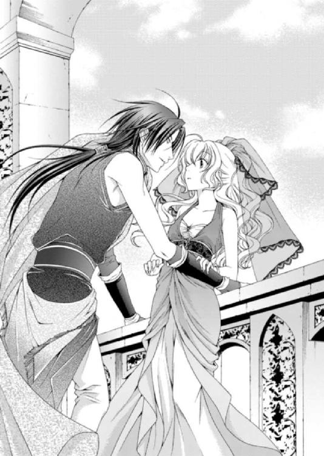

| 砂漠の薔薇と海の星3 復讐の皇子は微笑む (ビーズログ文庫) | |
| あすか & 由貴 海里 | |
| エンターブレイン (2011) | |
本作品の全部または一部を無断で複製、転載、配信、送信したり、ウェブページ上に転載することを禁止します。また、本作品の内容を無断で改変、改ざん等を行うことも禁止します。
購入時にご承諾いただいた規約により、有償・無償にかかわらず本作品を第三者に譲渡することはできません。
本作品は本文縦組で制作しております。また、電子端末での閲覧に向くよう、一部デザイン等を変更しております。あらかじめご了承ください。
灼熱の太陽から肌を守るため、日よけのベールを深く被り、ルセリアたちはこれから始まる儀式のために砂漠を移動していた。
砂漠を支配する聖霊とも神とも呼ばれ、『砂漠の薔薇』の僕と言われるワームは、ビアランの人々にとって畏怖されつつも敬われる神聖な生き物だ。
そのためビアランでは、新年になるとワームへ供物を捧げる儀式があるのだが、今日は違う。
「何を見ている？」
「別に、何も見てないわ」
ルセリアはアルバトルから視線を逸らし、どこまでも続く砂漠を眺めながら、つい先日のことを思い出した。
一週間ほど前、ルセリアは姉のメイフェスと再会した。けれど姉との再会はシシア神国の王子、サイファスの策略だったのだ。
疑うことなくメイフェスが用意してくれた故郷のお茶を飲み意識を失ったルセリアは、宮殿から連れ出され、砂漠で待つサイファスのもとへと連れて行かれた。
アルバトルは兵を引き連れ助けに来てくれたのだが、サイファスはそれを見越して罠を仕掛けていたのだ。
ルセリアは罠のことを知らせようとして、ワームの巣にアルバトルとともに落ちた。守護使徒のナナルがルセリアの危機に目覚め、ワームたちの協力を得ることに成功。彼らはシシア神国の兵士を蹴散らし、ルセリアたちを無事にビアランの首都・シハーブに送り届けてくれた。
そのときの礼として、アルバトルがワームを称える儀式を行うため、ルセリアたちは砂漠に作られた物見櫓へ向かっているのだ。
ビアランの美しい王子が儀式を執り行うということで、シハーブの街からもたくさんの市民が儀式を見ようと集まり、兵士たちが対応に追われている。
「そなた、俺を見ていただろう？」
傍らを歩くアルバトルがまたルセリアにそう言って、眉間に皺を寄せる。
確かに自分でも自覚しているのだが、気がつくとアルバトルを目で追うことが増えた。
今までとは違う感情から、ルセリアはアルバトルが気になり、意識しているのだ。
けれど、そういうルセリアに、嬉しそうにしてくれるのならまだしも、どういうわけか迷惑そうなアルバトルの顔を向けられ、ええそうよと答えられるわけなどない。
「いいえ。それって自意識過剰じゃないの？」
「なんだと!?」
「お二人とも、お口は閉じて移動してください」
背後からアルバトルの忠実な家臣であるグレディに注意され、ルセリアは肩を竦めた。アルバトルは不機嫌な顔のまま黙り、物見櫓の階段を上った。
みなワームの恐ろしさはわかっているので、不用意に話す者もいない。ただ、もうすぐやってくるワームを固唾を吞んで待っているのだ。
物見櫓の前に鉱山から切り出された一枚岩を使って祭壇がもうけられていた。その上に、すでに息絶えている牛や飛びウサギが横たえられ、周囲に数種類の果物、穀物がびっしりと敷き詰められている。
物見櫓に登るのは、儀式を行うアルバトルとそれを補助する神官、王族に関わる人たちで、ルセリアもそこに含まれていた。
金糸で縁取りされた真っ赤な外套を羽織ったアルバトルは、死んだウサギを持ち上げている。
「......我らの危機を砂漠の薔薇の僕であるワームに守護いただけたことに感謝を示し、気高き先祖が定めた慣習に従い、ビアランの国王エルドナルの息子、アルバトル・カーン・ビーが、供物を捧げる」
アルバトルが高らかにそう告げると、ワームを呼ぶ笛が響き渡り、ウサギは祭壇へと投げられる。しばらく砂漠は沈黙していたが、なだらかな砂丘に突然すり鉢状の穴が出現し、ひときわ大きなワームが顔を出した。
円筒状の灰色の身体は鋼鉄のような外皮に覆われ、鋭い髭が身体中に生えている。おおよそ生き物とは思えない巨体に、人々が息をのむ。
ワームはまっすぐ祭壇までやってくると、巨体を縁にかけ、そこに乗っているものすべてをなぎ払うように砂漠へと落とした。すると砂漠の表面が波打ち、ワームの頭が無数に現れた。そこで魚が水面に撒いた餌を食べるように、ワームの口へ次から次へと供物が消えていく。
砂に落ちてくる供物を、砂漠の中で待っているワームがいるのだ。
「きゃっ！」
水の飛沫が上がるように砂が物見櫓まで噴き上がり、ルセリアは思わず後じさろうとした。が、アルバトルが腰に手を回して、逃げ道を塞ぐ。
「怖がるな。ここまでワームは来ない」
「べっ、別に怖いわけじゃないわ」
「そなたは相変わらずだな」
いつもならムッとして怒鳴るはずのアルバトルが、儀式の最中だからか、苦笑するだけだった。
「ただ......その......これは神聖な儀式だとわかってるんだけど、牛やウサギが可哀想で、見ていられないだけよ」
「牛やウサギは食料だ。本来の目的に使用しただけなのに、何が可哀想だ。奴らも本望だろう」
「本望!? 牛や馬がそんなこと考えると思ってるの!?」
「ああ」
アルバトルはそう言うとルセリアの腰から手を離し、物見櫓に同じように登っている大臣と談笑し始めた。
もう......。
アルバトルは雄々しく勇猛果敢な王子だ。その容姿は『砂漠の宝石』と謳われた母のアミタによく似ているらしく、目を奪われるほど美しい。
ただ、性格には難がある。いや、大国であるビアランを将来治めるだろう王子としては、多少は傲慢で自己中心的なところがなければ、務まらない。それはルセリアもよくわかっているつもりだ。国を背負う王は非情な決断を下さなければならないこともあるだろうし、迷いは国の存亡に関わる。でもアルバトルには、せめて尊い命を人間のために犠牲にしてくれた動物に感謝の気持ちを持って欲しいと願うのは間違っているのか。
ルセリアは物見櫓の手すりに凭れ、ため息をついた。
「王子は小さい頃から動物に愛情をかける機会は一切与えられませんでした。そういう教育方針ですから、仕方ないんですよ」
「そんな教育方針があるの？」
「当然ですよ。飼っていた犬が誘拐された、死んだ、行方不明になった。愛着がある分だけ、決断力を求められるときに悪影響を及ぼしますからね。もっとも王子は小さい頃からそういったことに興味がありませんでしたから、わざわざ子犬を飼わせて取り上げるようなことはせずにすみました」
なんでもないことのように淡々と話しているグレディだが、温厚に見えるその風貌とは違い、決して情に流されない厳しさを持っている。さすが大国の王子であるアルバトルの教育係を務めていただけのことはあった。
「小さな命を大切に思えないなんて、それじゃあただの冷酷な支配者になってしまうわ」
「私もそこを心配していたのですが、王子は姫様のことを他の誰よりも大切に愛されております。王子は不器用ですが愛することがどういうことなのか、姫様を通して学ばれているようなので安心いたしました」
「私が言いたいのは、もっと広い意味での愛のことよ」
「姫様、王子は愛の伝道師ではありませんよ。万人に無償の愛など持たれては困ります」
愛の伝道師という言葉が、アルバトルにあまりにも不似合いで、ルセリアは思わず笑いが漏れそうになった。が、ギリギリのところで堪える。
今は真面目な話をしているからだ。
「グレディの言い分は理解できるわ。でも、小さい生き物に愛情を傾けられない人が、国民を大切にできるの？」
「人とウサギは違います。同じではありませんよ」
「......それはそうだけど」
上手く説明できないのだが、ルセリアは人とウサギの愛情のかけ方の違いを話しているわけではない。けれど、グレディの言いたいことも理解できるルセリアは、それ以上言葉もなかった。
ルセリアは母親から命あるものを大切にするようにと育てられた。怪我をした動物を城へ連れ帰り、姉のメイフェスとよく世話をしたものだ。食事の時は自分たちを生かすために食卓に並べられた命に感謝していたため、自然と命の尊さを学んでいた。
アルバトルにもそんな気持ちを少しだけでも持ってもらいたいだけなのだ。
「もし......姫様が、王子の成長を促すものではなく、愛に溺れ王子としての務めができぬような腑抜けと化すだけの存在でしたら、私は問答無用で姫様を排除したでしょうね。私の務めは王子をビアランの立派な王とすることですから」
「......」
「ああ、勘違いなさらないでください。私は姫様のことがとても大好きですよ。なので私の期待をくれぐれも裏切らないでいただきたいですね」
驚くほど深い笑みを浮かべたグレディに、ルセリアも微笑を返した。
では......と言い、物見櫓から下りていくグレディを見送って、ルセリアはため息を漏らした。
親しみのある笑顔をいつも向け、相談すれば親身になってくれるからつい忘れてしまいがちになるが、グレディにとってアルバトルのことは最優先だ。
両親が教えてくれた命に対する考え方が間違っているとは思わない。ただ、アルバトルと過ごすうちに、グレディの教育方針もあながち間違っているとも思えなくなってきていた。
アルバトルには慈悲のある王になって欲しい。けれど、グレディのいうような、不適格な王にもなってもらいたくない。
何が正しいのかわからないわ――。
「ルセリア、そろそろ宮殿に戻るぞ」
答えの出ない問題に頭を悩ませていると、アルバトルが戻ってきた。
「え、もう？ 街をゆっくり見て帰りたいわ」
「そなた、喪服の仮縫いがあるだろう？」
「あ......うん」
シシア神国のジオリバ王が一週間ほど前亡くなった。ビアラン王国には正式にシシア神国から弔いの儀の知らせが届き、アルバトルが王の名代として出席することになったのだ。ルセリアも同伴することになっている。
ルセリアは当初シシア神国の王子であるサイファスと婚約していた。サイファスがルセリアの初恋の相手だと偽ったためだ。だが、本来の初恋の人であるアルバトルが横から略奪する形でルセリアをビアランに連れ去り婚約者とし、正式に諸外国へ発表をした。
女性は身分を問わず略奪した者のものとなる――それらは暗黙の内に了解されているためか、誰も表立って異を唱える者はいない。
正直なところ婚約者を奪われたサイファスはおもしろくないだろうが、シシア神国もビアラン王国も表向きは友好的に付き合っている。
シシア神国のしきたりでは弔いの儀において親族が黒色、それ以外の人間はすべて灰色の衣装を身につけなければならない。それら正式な衣装を持ち合わせていないルセリアはすべて新調しなくてはならなかった。
「午前中にすませて、明日の朝には仕上げてもらわねばならないからな」
「なんだか機嫌が悪いわよ」
「当然だ。シシアの王が死んだせいで、俺とそなたとの華燭の儀が延期になったんだぞ」
大国の王やそれに準ずる身分の者が亡くなった場合、弔いの儀から一ヶ月は祝い事の儀式は延期されることになっている。これらは書面で残されている決まりではないがビアラン王国、シシア神国、イリディアス皇国、アカリナ王国の四大国では、暗黙の了解となっていた。
そのため、祝い事となるアルバトルとルセリアの婚儀である華燭の儀はシシア神国の弔いの儀から一ヶ月先へと延期されることになった。
当然、アルバトルは機嫌が悪い。
「しきたりなんでしょう？ じゃあ、仕方ないじゃない」
「華燭の儀に関しては、そなたは気が進まなかったようだからな。俺とは違って延期になってさぞかし喜んでいるんだろう」
「そんなふうに言わないで。今は他のことが気になるから......先のことを考えられないの」
結婚をするというところまで現実に考えられないものの、砂漠でサイファスの策略に落ちたときにアルバトルへの想いに気づいたルセリアは、故郷のはずのマルフォーネではなく、彼のいるビアランに帰りたいと願った。
ルセリアにとってアルバトルの存在はすでにとても大きなものとなっているのだ。できればその気持ちを素直に伝えられたらいいのだが、きっかけが摑めない。
それにルセリアには様々な問題があって、自分の気持ちだけではどうにもならないことを抱えているのだ。
「華燭の儀より弔いの儀が気になるか？」
「少し......。でも、サイファス王子のお父上の弔いの儀だから、きっと大人の対応をされるわよね。たくさんの賓客を招いて何か問題が起きるようなことがあれば、シシアの面目にも関わるもの」
ルセリアの問いにアルバトルは意味深な笑みを浮かべた。
「ああ、そうだな。シシアの弔いの儀には各国の王か相応の名代が招かれている。そなたをそこで俺の婚約者として紹介できることは楽しみだ」
「......ものすご～く、悪意を感じたわ、アルバトル」
「悪意ではない。俺はこうやって周りから攻めて、そなたをこの俺から逃れられなくしているだけだ」
言いながらアルバトルはルセリアを逃がさないように、両手で手すりを摑んで縫い止める。どちら側へも逃げられなくなったルセリアは困惑した顔を向けた。
「アルバトル」
「俺の愛はそなただけのもの。俺の剣はそなただけに捧げた。他に何が必要だ？ いい加減、俺のものになれ」
アルバトルの美麗な顔が近づくとともに、鼓動が高まる。彼の吐息が頰に触れ、長い髪が肩にこぼれ落ちてくる。
アルバトルがルセリアにとってこんなにも心をとらえて離さない存在になったのは、いつからだろう。
ルセリアはアルバトルの唇が重なる瞬間、目を閉じた。
「ぼっちゃま。歯の浮くような台詞もいいですが、ご予定が大変詰まっております。さくさく、さくさくとこなしていただかなければなりません」
唐突に響いたグレディの声に慌てて目を開けたルセリアは、涼しい顔をして離れるアルバトルを見て、急に羞恥がわき上がった。
ルセリアはアルバトルの口づけを待って目を閉じていた。なのにアルバトルはルセリアの唇を奪うことなく、立ち去った。
すぐに気づかなかったルセリアは、しばらく目を閉じて待っていたのだ。そんな姿を他の人たちに見られたかもしれないと思うと、耳まで真っ赤に染まる。
「姫様も、さくさく、ですよ」
「ごっ......ごめんなさい！」
――あれ？
ルセリアは反射的に謝っていたが、そもそも悪いのはキスを迫ったアルバトルのはずだ。
「では、王子はベルデの王子との会議に。エミール、ルセリア姫に喪服の仮縫いの支度を」
「かしこまりました」
グレディに答えるエミールの傍らで、ルセリアは両手を振って熱くてたまらない顔を冷やし、何とか平静を取り戻そうとしていた。
「残念だったな」
そっと囁かれるアルバトルの言葉に、ルセリアの顔はいっそう赤くなり、文句の一つでも言おうと思ったが、人目もあるため声を上げることはできなかった。
「さあ、戻るぞ」
アルバトルの手が腰に回り、物見櫓から下りるよう促してくる。ルセリアは内心では腹を立てつつも、そこはグッと堪えてアルバトルとともに階段を下りた。
宮殿の自室へ戻ったルセリアは、儀式用の衣装から、着脱が楽な胸元を締め付けない足下までゆったりとしたサテンのドレスに着替え、仮縫いの準備に備えた。けれどいつまで経っても仕立屋がやってこない。
「エミール、もう来てもいい頃よね？」
すると、扉のところで待っていたエミールが申し訳なさそうな顔で戻ってきた。
「ルセ様、じつは仕立屋の到着が遅れているんです」
「何かあったの？」
「いつものアビシュテ様の嫌がらせですよ。ルセ様の急ぎの仮縫いがあるってご存じですのに、ご自分のところに今朝早く仕立屋を呼びつけたそうで......そちらがまだ終わらないようです」
「そうなの。別に気にしていないわ」
アビシュテはアルバトルの義理の母であり、ビアランの王であるエルドナルの妻だ。非常に妖艶な女性で、豊かな胸と細い腰を強調するような衣装を好んで身につけ、いつも色香を漂わせている。
アビシュテには、アルバトルにとって異母弟に当たる息子が一人いて、ゆくゆくはビアランの王にするつもりでいろいろ画策しているようだ。ただ王のエルドナルは、正妃ではなかったものの、アミタとの間に生まれたアルバトルに王位を継がせたいらしく、アビシュテは内心穏やかではない。
これまでにも、ネズミの死骸を入れた箱や枯れた花が届けられたり、中庭の通路に油が撒かれてすべりやすくされていた。どれも、大騒ぎをするほどではないものの、ルセリアはアビシュテだろうと思われるくだらない嫌がらせを何度も受けていた。
さらに、廊下ですれ違うと、小声で胸が小さすぎるだの、貧相な顔だとか、腰がくびれていないなど、一言多く告げられる。
ただ、危害を加えられるわけではないので、ルセリアは相手にしないようにしていた。もちろん心配をかけたくないため、アルバトルには話していない。
気分を切り替えてルセリアがお茶をもう一杯もらおうとしたところに、壁からにゅっとジンが顔を突き出してきた。
「きゃっ、ジン！ もう～驚かせないで！」
「おうおうおう、悪いのう姫さんや」
ジンは水晶髑髏に魂が囚われている魔導師で、肉体が存在しない。幽霊のように壁や床を突き抜けて現れるため、ルセリアはいつも驚かされる。
「いやいや、いやな、以前、頼まれていたことが、少しだけわかったんだな。だから早く知らせてやろうと急いで地下から上がってきた」
「本当!? 私、ずっと待ってたのよ」
少し前、ルセリアは姉メイフェスとビアランで再会したとき、彼女の首筋に紋章のような模様が浮き出ているのを見つけたのだ。それらはすぐに消えてしまって、ルセリアは気のせいだと忘れていた。けれど、以前の姉なら決して賛同しないことに手を貸したり、あり得ないほど嫉妬深いメイフェスの言動や行動が、ルセリアに疑問を抱かせた。
メイフェスはシシアの魔導師に何か魔術をかけられているのではないかと。
砂漠から戻ったルセリアはジンにメイフェスの首筋にあった紋章について調べて欲しいと頼んでおいた。
「姫さんが姉上の首筋に見た模様だが、地下の所蔵庫で魔導書をさんざんひっくり返して見つけたぞ。よ～く聞いてくれ。『暗黒の花嫁』という呪いに属する魔術だ」
「のっ......呪い!? それってものすごく悪いもののように聞こえるんだけど。どんな呪いなの？」
「それがなあ、そいつがまだわからん」
ジンはううんと唸り、首を傾げる。
「わからんってどういうこと？」
「この『暗黒の花嫁』という呪いは、種類が数百あるんだな。だが、怪しげな術名なわりには、いいのも僅かに混じっておる。姫さんがもう少し模様の形を覚えていてくれたら、どの魔術なのか特定ができたんだがなぁ」
「ごめんなさい......見たのは一瞬だからはっきりこういう模様だったって説明できないの」
何度、記憶を掘り起こし、模様を思い出そうとしても、大まかな形だけで細部がぼんやりしている。
「で、やはりだな。我が輩が見てこそ、どんな魔術なのかわかろうと思ってな」
「ジンもシシアに来てくれるの？」
「いやいやいや。それは無理なんだな。ビアラン国内ならまだなんとかなったが、我が輩の水晶髑髏がこの国の魔術防壁をかねている。国外に出してはもらえんのだよ」
初めて聞く言葉を耳にして、今度はルセリアが首を傾げた。
「魔術防壁？」
「そうだよ姫さん。他国から魔術によって干渉や攻撃を受けないよう、宮殿のあるシハーブには魔術防壁......いうなれば結界を張っておる。大国はみなそうやって魔術から身を守っているんだな」
「え～ジンがそんな大役を担ってるの？」
「信じられませんね、ルセ様」
「なんだその疑いの目は！ 我が輩は偉大なる魔導師だとこれでわかったか！」
はははと身体をのけぞらせて大げさに笑うジンを見ていると、偉大にはほど遠い。
それでもシハーブの護りを任されているのなら、相当の使い手ではあるのだ。もっともあまりそれらしい大技を披露してくれたことはないが。
「じゃあ、ジンはシシアには一緒に行けないのね」
「すまんなぁ」
シシア神国でメイフェスに会えたとしても、首の後ろを確かめられるかどうかはわからない。何よりルセリアに魔術の知識はほとんどなく、たとえ模様を見ることができても、細かなところまで覚えられるのか自信がない。
「ジンは偉大な魔導師なのでしょう？ 他の方法でなんとかならないのですか？」
エミールがそう聞くと、ジンは宙を浮いたままぐるりと回って、ぴたりと止まる。
「......そう、そう、そうだな。回数は三回と制限されるが、砂時計の分身を使えば連絡を取り合う方法がある」
「え？ そんな方法あるの？」
ルセリアが疑問を口にすると、ジンは嬉しそうに首を縦に振った。
「そうとも。それには用意しなくてはならんものがあるから、少し時間がかかるぞ。姫さんがシシアに行くまでには準備を整えるようにしよう」
「ジン、ルセ様がシシアに向かわれて大丈夫なのですか？ あちらにその......ルセ様の姉君に魔術をかけた魔導師がいるのでしょう？ その魔導師が同じような魔術をルセ様にかけることはないのですか？」
エミールの心配をよそに、ルセリアはカルソーニのことを思い出していた。
カルソーニ・ス・バルディア。シシアの神官であり魔導師でもある。
死のオーラにも似た暗い闇を纏うカルソーニは、近づくと魂が蝕まれそうな雰囲気をもっている。
そんなカルソーニをサイファスは臣下として側に置いていた。
「守護使徒を宿す者の身体に魔術をかける紋章は刻めないんだよ」
「ナナルがルセ様を守るのですね」
「おう、そうだよ、エミール。だが宿主に対する物理的な攻撃は別だ。だから姫さんには人の手の護りが必要なんだよ。まあ、そいつはアルバトルの役目だろう」
守護使徒を宿す者の身体に魔術をかける紋章は刻めない――。
以前、ルセリアは宮殿の地下にある所蔵庫で、ジンから守護使徒について学んだが、そういった内容は含まれていなかった。
とても重要なことであるはずなのに、いつわかったことなのだろう。
「......ねえ、ジン。私の身体に魔術はかけられないって話、地下の所蔵庫では聞かなかっった気がするんだけど」
「おや......そう、だったかね？」
「ええ」
「う～む。どこかで目にしたのかもしれんな。毎日そりゃもう、嫌というほど書物に目を通しておるからなあ」
「また何かわかったら教えてね。私、もっと守護使徒のことを知りたいの」
失われた黄金の都・ネディアを守っていたという守護使徒の一つ、水の使徒のナナルがルセリアの中に存在している。
ナナルは子猫ほどの大きさで、涙型をしていて可愛げがある。
ジンがルセリアの中にいるナナルを知らずに目覚めさせてしまい、部屋を破壊したことは忘れられない出来事だ。砂漠ではワームを味方に付けてシシアの兵を蹴散らしてくれたが、ルセリアが望めば、ナナルは強大な力で兵士たちを砂に埋めることもできただろう。想像もつかない力をナナルは秘めているのだ。
だからルセリアはナナルが勝手に出てこられないよう、休止という状態で身体の中で眠らせていた。
「あっ、大事なことを忘れていたわ。ジン、姉上のことはアルバトルには話さないでね」
「そりゃあ、また、どうしてだね？ こういうことを隠すから、アルバトルの嫉妬が、我が輩たちに飛び火して被害を被るんだよ」
「だめ、絶対にだめよ。約束してジン。このことは話さないって。お願い」
ルセリアが両手を組んでジンを見つめる。視線を合わせないようにしてジンは目を泳がせていたが、そこをルセリアが何度も追いかけて頼み込んだ。
「......う～む。仕方ありませんな。いいですよ。ですがねえ、あくまでアルバトルから話題を振られない限りにおいてですぞ。我が輩からは進んではいたしませんし、まあ......まずくなったら、できるだけ話題を逸らせるか、姿を消すくらいしかできないでしょうな」
「それでいいわ」
ジンはアルバトルと契約している魔導師だ。アルバトルに問われたら黙っていることはできない。
「じゃあ、我が輩はこれで。いろいろ準備がありますのでねえ」
そう言うとジンは来たときと同じように壁に溶けるように姿を消した。
いつまでメイフェスのことをアルバトルに知られずにいられるのか予想もつかない。ただ、ルセリアはできればこの件は自分で解決したかった。
「あの......個人的な意見ですみません。私......私は、アルバトル王子にはメイフェス様にかけられている呪文についてお話をされた方がいいと思うんです。失礼ながらもし私がアルバトル王子のお立場でしたら......その......やはりルセ様からお聞きしたいと思ったものですから」
「わかってるんだけど......」
ルセリアは目を伏せ、悩みに囚われたときいつもそうしているように、左手首に輝くブレスレットを右手で撫でる。
幼き頃、初恋の人であるアルバトルから贈られた金のブレスレット。
最初はサイファスだと勘違いしていたが、このブレスレットのおかげで、本当の初恋の相手はアルバトルだと知ることができたのだ。
「アルバトル王子はルセ様がお隠しになられることの方がお怒りになられると思います」
「でも......でもね、エミール。姉上の話をしたらアルバトルは絶対私をシシアには連れて行かないって言いだすわ。そう思わない？」
「......はい。そうですね」
今のところアルバトルはルセリアをシシア神国へ伴うつもりでいてくれている。シシア神国の正式な招待であるため、サイファスがルセリアに手を出すことは立場上できないはずだ。
けれど、メイフェスのことを相談すれば、アルバトルは間違いなく難色を示し、留守番を言いつけられる可能性もあった。
「私は姉上にもう一度会って、この話をしたいの。ビアランでは二度と姉上とは会えそうにないからだけど」
アルバトルに無理やりビアランに連れてこられたと勘違いしていたメイフェスは、サイファスの策略に手を貸すこととなり、ルセリアに薬を飲ませて砂漠へと連れ出した。どんな事情があろうとも、アルバトルはそのことにとても腹を立てていて、メイフェスはビアランに入国できないよう手配書を回した。ビアランでメイフェスとは二度と会えない理由だ。
「ルセ様のお気持ち、とてもよくわかります」
「......それに私、これ以上アルバトルを心配させたくないの。シシアに行くことだけでも、とても神経質になっているから......」
シシア神国は何代も前の王から守護使徒を探しており、有力情報には多額の賞金も用意している。
シシアの王子であるサイファスは、ルセリアを愛していると告げながらも、その身に宿る守護使徒も手に入れようとしていた。
そんな中、ルセリアがシシア神国に向かえば、たとえ正式な招待であっても、問題が起きるかもしれないとアルバトルが心配するのも無理はない。
ルセリアが考え込んでいるのをエミールがなぜか笑みを浮かべて眺めている。
「どうしたの？」
「いえ。ただ......ルセ様がアルバトル王子を大切に思われている姿を見ると、愛情がひしひしと伝わってくるんです。私......本当に嬉しくて、感動しているんです！」
まるでエミールの方が恋をしているかのようにうっとりした顔をしている。
「べっ......別に、あっ......ああ......愛とかそんなんじゃ......」
「でも、ルセ様。視線が合うと逸らしてしまわれるのに、いつもアルバトル王子のお姿を目で追っていらっしゃいますよ」
「ほほ......本当!?」
「はい」
ルセリアはエミールに気づかれるほど、アルバトルに対して挙動不審だったのだろうか。
確かにあの砂漠での出来事以来、ルセリアはアルバトルを意識しすぎている。手が僅かに触れ合うだけでドキリとするし、腰に手を回されると顔が赤くなるのだ。髪を撫でるアルバトルの手は心地よく、口づけは甘い。
はじめはあんなに逃げ出そうと必死になっていたのに、自分でもどうしてしまったのかと困惑するほどだ。
「ルセ様、やっと仕立屋が来たようですよ。今度は大国の美女をお相手になさるのですから、素晴らしい喪服や衣装を準備しなければなりませんね！ このエミールにお任せください。どちらの姫君よりも美しく、華やかにしてみせます」
「エミールにすべて任せるわ」
ルセリアが抱く戸惑いなど吹き飛ばすように、エミールは明るい笑顔で仕立屋を招き入れた。
宮殿に戻ったアルバトルは、ベルデ国のカナンと行う会談の間へ向かう途中、ここしばらく感じていた疑問をグレディに告げた。
「どう思う、グレディ」
「正式な招待ですから、サイファス王子も立場をわきまえられるはずですよ」
「そうじゃない。ルセリアのことを聞いているんだ」
「どうされました？」
グレディは訝しげな表情をアルバトルに向けてくる。
「ほら、あの......俺に対する......愛があるのかないのか判断のつかない態度だ！」
「愛がおありですから、お二人でおそろいのお守りを持たれているのではないのですか？」
「ああ。そうだ。俺はワームの巣に落ちた時に愛を確信した。ルセリアは俺を愛しているとな」
サイファスの策略を知りつつも、ルセリアはアルバトルに罠のありかを教えるため、ワームが無数に蠢く砂漠を駆けたのだ。
自らの命を顧みず、ルセリアはアルバトルのために命を懸けてくれた。
愛がなければできないだろう。
ルセリアに愛されている――。
アルバトルはそう強く感じた。何より、腕の中で目覚めたルセリアの瞳には、アルバトルに対する愛情が窺えた。
「だが、未だに俺を愛しているというような告白はない。華燭の儀に関しても日程が延びたことに安堵していたようだしな。今はどうだ。俺の疑問を確かめようとしても、話題を変えるか、夜はすぐに寝たふりをする。これならまだ触れるな、嫌いだと反抗されていた方がましだった」
「なるほど。私には手に取るように、姫様のお気持ちが理解できるのですが......よろしいですか？」
「なんだ」
「きっと、照れていらっしゃるんですよ」
グレディはアルバトルの悩みをあっさりと一言で解決しようとしているが、違う。
「照れる!? 裸まで見た俺に、今さら何を照れることがある!? ああ、そうか俺も裸になって見せてやればよかったのか？」
「王子、ご乱心ですか？」
「なんだ、問題があるのか？」
アルバトルは真剣に話しているのだが、グレディはどういうわけか目を丸くして、しばらく黙り込んだ後、珍しく笑い声を上げた。
「は......ははは。いえ、その......失礼しました。ただ、それはおやめになって正解でしたよ」
「俺は真面目に聞いている」
アルバトルが鋭い目を向けてそう言うと、グレディはすぐさま笑いを収めて落ち着いた口調で聞いてきた。
「では、王子はどういう態度を姫様が見せたらお気に召すのです？」
「そうだな......」
まずはルセリアからアルバトルに対して告白が聞きたい。愛しているというのは恥ずかしいだろうから、好きという言葉でも構わない。
ルセリアが、恥ずかしがり屋で意地っ張りなのは理解しているから、昼間はつんけんした態度を取っても許してやる。だが二人きりの時は、めいいっぱい甘えて欲しい。
指を絡め合い、軽くキスをしながら、夜を過ごすのもいいだろう。マルフォーネのしきたりで婚儀を終えるまで清い関係でいなければならないと聞いているが、愛が高まれば自然と求め合うようになるのが男女というものだ。
「おや、どんな想像をされたのです？」
グレディに顔を覗き込まれていることに気づき、アルバトルは視線を逸らした。
「王子？」
「聞くな」
「王子、まず姫様とお話しになって、意思の疎通を図るのが一番ですよ」
「俺はルセリアを前にすると......冷静に話ができん」
今までも何度か冷静に話をしようとして、上手くいかなかった。
アルバトルはただ、ルセリアの気持ちを知りたいだけなのだが、いつもはぐらかされてきたのだ。理由は判然としない。恥ずかしいだけなのか、それともアルバトルが勝手に誤解をして、いいように受け取っているだけで、実はなんとも思っていないのか。
女心を読み解くのはアルバトルには難しい。
「言葉にできないようでしたら、書面にしたためて姫様にお渡しになられたらいかがです？」
「考えておく」
文章で自分の想いを伝えるのもいいのかもしれないが、女性に対してそういう習慣のないアルバトルには正直難しい。
だいたい気の利いたことを書けたなら、幼い頃ルセリアと離ればなれになっている間も、まめに書簡を送っていただろう。
「......ところで、王子。本当に姫をシシアに連れて行かれるのですか？」
「むろんルセリアをシシア神国ヘ伴いたくはない。だからといって留守番をさせるのも、気が気でならん」
今は特に目の届く範囲にルセリアをとどめておきたい。
何かあってもすぐアルバトルが行動に出られるように。
「それにルセリアが我が妻となれば、公式な招待に出向く機会が増える。そのたびにルセリアを置いていくわけにはいかん」
「確かにおっしゃるとおりですね。何事も夫婦で行うことが大切です。仲むつまじい姿を見せることも、内政が安定している何よりの証明」
「そうだ」
ルセリアからは、未だ華燭の儀に関していい返事をもらってはいないが、なんと言われても取りやめる気はない。ルセリアが望まなくても、いずれ正式にアルバトルの妻となるのだ。そうなれば、嫌でも妻としての役目が増える。ルセリアにもいい加減覚悟を決めてもらわなければならないだろう。
「姫様も遠からず王子のお気持ちを受け止められる日が来るでしょう。あまり急がれないことですよ」
「そうそう待てないがな」
緩やかな階段を下り、中庭が見える客間へと入った。公式に話し合う場合は謁見の間を使うが、カナンは内密な話があるというので、わざわざ別の部屋を用意したのだ。
「カナン王子、すぐに話ができず、ずいぶんと待たせてしまって、申し訳ない」
「......いえ。お忙しい中、お時間をいただけただけで、感謝しております」
友好国ベルデの王子である、カナン・オロキスはここに来たときに比べて憔悴した表情をしていた。
彼は栗色の巻き毛を持つ爽やかな笑顔が印象的な好青年だ。常に誠実な男で、どんな事情があっても約束を反故にしたことがない。彼の父であるバイエン王が昔から息子を伴ってビアランに訪れることが多かったためか、小さな頃のカナンはアルバトルのことを兄のように慕っていた。
今は互いの立場をわきまえた上で、いい関係を保っている。
「話というのはどのようなことでしょう」
「できましたら、人払いをお願いしたいのですが」
アルバトルはグレディ以外の家臣や兵士を下がらせ、改めてカナンに向き直った。
「実は......先ごろ我が国で起こった守護使徒出現の騒ぎは......真実なのです。ご承知のとおり我が国は、その事実を背負えるほどの国力がございません。大国にその存在を知られると、我が国はすぐにでも守護使徒を求める力に蹂躙されていたでしょう。そのため、国王は守護使徒の存在を隠し、誤報だということにしたのです」
守護使徒を持つ者が現れたという噂が広がったベルデ国内はもめ、その結果刈り入れ前の農作物を全滅させてしまった。ビアランはベルデからの物資援助の要請を受けて、西の貯蔵庫を開放し、見返りに五千頭の馬を得ることができたのは記憶に新しい。
もっとも、ナナルが別の守護使徒の存在を感じ取っていたことから、アルバトルはそれが紅蓮の欠片に宿る火の使徒・ファンファンだろうと予想がついた。だが、表向きは初めて知ったように驚いてみせた。
「まさか本当に守護使徒が存在するとは......。ですが、隠された理由は他にもあるのではありませんか？」
「......ええ。守護使徒を宿したのは、弟のリッジス・オロキス。まだ十三歳の少年です。発覚してしばらくはリッジスを王城の地下に隠していたのですが、ファンファンと名乗る火の使徒は非常に怒りに満ちておりまして......」
「なぜ怒りに満ちているのです？」
「以前、ファンファンが宿っていた主人をシシア神国に仕えるカルソーニという魔導師に殺されたらしく、復讐を望んでいるのです。私たちは必死にファンファンを宥めてまいりました。ですが、守護使徒を閉じこめるなど所詮無駄なこと。リッジスもファンファンを抑えきれなかったようで、数日前に国を出たと、今朝、連絡を受けました」
カナンは額に浮いた汗を手ぬぐいで何度も拭い、落ち着きなく手を動かしている。彼にとって守護使徒出現は国の存亡にも関わる大事件のため、アルバトルに話しながらも、内心は相談してよかったのかという後悔にとらわれているのだろう。
「シシア神国へ向かったのですか？」
「そう思われます。国王は苦渋の決断をし、リッジスを密かに葬るため暗殺者に後を追わせたそうです。ご存じのとおり、我が国では英雄行為であろうと宗教上自決は許されておりません。なのでリッジスは自ら命を絶つこともできず、自分の中にいる守護使徒が人を傷つけることを恐れ苦しんでいます」
ルセリアの中にいる水の使徒・ナナルは驚くほどルセリアに従順だ。話すと苛々することしか口にしないが、命令したり、ルセリアを思いどおりにしようとはしない。あくまで宿主であるルセリアの言うことを聞く。リッジスがルセリアと同じようにできないのはなぜなのか。
「リッジスは守護使徒をどの程度、扱えているのです？」
「最初の頃は、なんとか説得もできて抑えられていたようですが......。次第にリッジスの身体に異変が表れ、同時に制御が利かなくなりました」
「異変とはどのようなことですか？」
「皮膚のあちこちに火傷ができては治ります。次第にその治癒の速度が遅くなり、今では火傷の痕が生々しく残っております。使徒が言うには、リッジスが宿主として完全に適合していないために起こる副作用だそうです。なら適合する人間に移動してくれと守護使徒に頼んでみたのですが、今以上の適合者が見つからないからこれで我慢していると吐き捨てられました」
では、リッジスは完全に適合していないため、守護使徒を制御できないということか。
「こうなる前に、できればアルバトル王子に何かいい知恵をお貸し願えたらと思ったのですが......父王もずっと悩んでおります。ことがことですので、他に相談できる相手もおりません。王子にお話ししたのも......実は私の勝手な判断なのです」
「カナン王子、ベルデの王はシシアの弔いの儀には出られるのですか？」
「いえ。ベルデは正式な招待を受けておりませんので、書簡と供物をお送りしております。弔いの儀の後、改めて王がお悔やみのために訪問することになっております」
大国で行われる冠婚葬祭の正式訪問は、招待されていなければ出席できないことになっている。王やそれに準じる名代の安全を国家として確保しなければならないため、入国に制限をかけるからだ。
「ご心労いかばかりか、心中お察しいたします。ですがこの件は、大変申し訳ないが、我が国としてお力になれることはありません」
「ええ、それは......当然だと思います。話を聞いていただけただけで感謝しております」
カナンは落胆の色を滲ませながらも、なんとか作った笑顔を浮かべていた。
「......シシアへの道中、仮にリッジス王子に会うことがあれば、力を貸せるよう努力しましょう。お約束はできませんが」
「ありがとうございます。その一言でどれほど救われるか......」
少し緊張が解れたのか、カナンの笑顔は温もりを取り戻していた。とはいえ、状況は何も変わっていないことを彼も理解しているはずだ。
「では、アルバトル王子。本当の目的をようやく終えましたので、私は帰国の途につきます。長い間滞在させていただき、ありがとうございました。エルドナル王にもどうぞよろしくお伝えください」
「伝えましょう。では、くれぐれも道中お気を付けて帰国ください」
アルバトルが腰を上げると、リッジスも立ち上がり、互いに肩を抱き合って別れの挨拶を交わす。
「もし......リッジスに会うことがありましたら......伝えていただけますか？」
「なんでしょう」
「約束を守れず悪かったと」
アルバトルはカナンに答えることなく、ただ頷く。カナンは小さく会釈をすると、客間から出て行った。
まだ温かいお茶を飲み、アルバトルは中庭を眺めながら目を細める。
地面を焼き尽くす容赦ない太陽の光が眩しい。
「......王子。リッジス王子の行動を考えましても、守護使徒を宿す姫をお連れになるのは得策ではないでしょう。シシアを憎んでいる火の使徒の復讐に王子や姫様が巻き込まれる可能性もあります。適当な事情を作り、弔いの儀を欠席されてはいかがです？」
「火の使徒がシシアに向かったとなれば、その選択はない」
シシアの招待を断ったとしても、その後、火の使徒によってシシアが攻撃を受けたとなると、ビアランがその事実を知っていたのではないかと疑われる。かといって今の段階でシシアに警告を出せば、いかにしてその情報を得たのかが問題となり、面倒なことに巻き込まれる可能性があった。
「火の使徒の復讐の対象はシシアです。うちとしてはシシアで何が起ころうと知ったことではありません。上手くすればサイファス王子も魔導師も始末してくれるでしょう。どうしても行かざるを得ないのでしたら、せめて姫様だけでもビアランに残していかれてはいかがです？」
「......できるなら、そうしたいがな」
火の使徒がシシアに復讐するならそれもいいだろう。グレディの言うようにサイファスを抹殺してくれるのなら、ありがたい。
だが、守護使徒をシシアの魔導師が思いどおりにする方法を見つけていたら、サイファスは目的のものを手に入れることになる。
アルバトルにとって、それだけはどうしても阻止したいことだった。
もちろん、火の使徒が現れるだろうシシアに、水の使徒を宿すルセリアを連れて行くのは非常に危険であることに違いない。
けれど暴走した火の使徒を説得し止めることができるのは、今のところ同等の力を持つ彼らの仲間である水の使徒、ナナルしかいないのも事実だ。
もっともあのナナルが火の使徒を説得できるかどうかは不明だが。
「ジンはいるか？」
アルバトルが声を掛けると、どこからともなくジンが現れた。
「はいはいはいな、こちらに」
「使徒を身体から追い出す方法はまだ見つからないのか？」
ジロリとジンを見上げると、彼は愛想のいい笑みを浮かべて人差し指を立て、身を屈めて顔を近づけてくる。
「......安全に、というのはまだですが、危険な方法なら一つだけございますよ」
「どうすればいい？」
「使徒を宿した人間が死ねば、使徒は宿主の身体から追い出されるようですな。ということは、強制的に姫さんの心の臓を止め、使徒が出て行ったのを確認してから、また動かせばいいのではないですかねえ」
さあ、褒めてくれといわんばかりの笑みに、アルバトルは怒るよりも呆れていた。
「......本気でそんなことを言ってるのか？ 失敗したらどうするんだ」
「そりゃあ、失敗することもあるでしょうな。なにせ心の臓を止めるんですからね」
「役立たずめ」
アルバトルが吐き捨てると、ジンは大げさに手を額にあてて傷ついたように身体を前後させたが、どう見ても芝居がかっている。
「おうおうおう、それはないですな。我が輩が役立たずではなくて、それほど守護使徒がやっかいな存在だということをわかっていただきたい」
「守護使徒が暴走した場合、止める方法は今は一つしかないということだな......」
リッジスはアルバトルも知る王子だ。顔見知り程度でしかないが、野心の欠片も持たない純朴なリッジスを殺すしかない現実は悲劇だろう。
だからといってこのまま放置するわけにもいかない。守護使徒を完全に支配下におけない宿主は、使徒の暴走を止められない。あの強大な力を野放しにするのは独裁者が守護使徒を手に入れることの次にやっかいなことだからだ。
「ジン、使徒の宿る人間を安全に殺す方法はないのか？」
「......まさか王子、いつまでも自分のものにならないからといって、姫さんを抹殺するつもりじゃあ、ないですな？」
「お前を抹殺したい気分になったぞ」リッジスの話をジンにはしていないため、誤解しても仕方がないのだろうが、だからといってなぜルセリアを抹殺するということになるのか、ジンの思考回路は理解しがたい。
「あらま、違いましたか」
「ジン、いい加減になさい」
グレディはそう言うと、ベルデの王子と交わした話をジンに説明した。すると、初めは目を泳がせながら聞いていたジンの様子が、明らかに変わった。
「なんだ、その顔は」
「我が輩ですか？ 我が輩はいつも男前ですが」
「おい」
ジンに実体があれば、足枷をつけて建物の上から吊り下げてやるのだが、できないのがもどかしい。
「いやいや、茶化す気はありませんよ。事情はわかりました」
「何かいい方法はありますか？」
「暴走した使徒を止める方法......でしたな。暴走した......使徒」
眉間に皺を寄せたジンは天井をじっと見上げたまま何度も目を瞬き、顎を撫でて沈黙した。その状態でしばらく固まったジンに、グレディが怪訝な顔を向けた。
「どうしました、ジン」
「......いや、なんだか我が輩の抜け落ちている記憶の中にそのような記述があったような、なかったような」
ジンはアルバトルが見つけた水晶髑髏に魂が囚われている。が、アルバトルと出会った以前の記憶が全くといっていいほどないのだ。本人も気にしているようだが、性格なのか、ジンに悲愴感はない。あるがままに受け入れて常に陽気で飄々としていた。
「結局、ない......と言いたいのでしょう？」
「そうだ！ グレディ、よく我が輩を理解してくれて嬉しいぞ」
パッと破顔したジンは手を叩いてグレディを指差す。
「もういい」
「待て待て待て。使徒が暴走するということは主人である人間が制御できない状態だということだ。使徒の怒りの矛先は、カルソーニやシシア神国そのものだろうから、復讐の際には宿主から離れた状態になるはず。その一瞬の隙を狙って、宿主の命を奪うしかないですぞ。もちろん、一撃で息の根を止めなければ、異変を察知し戻ってきた使徒にこちらがやられます」
「わかった。お前は引き続き地下の所蔵庫を探して他の方法を見つけてくれ」
ジンは妙に浮き立った顔で壁に溶け込み、姿を消した。
珍しく様子のおかしいジンが気になるものの、もともとああいう空気が読めない陽気な男のため、考えたところでどうにもならないだろう。
アルバトルは話を戻すよう、グレディに向き直ると、優秀な元教育係からは打てば響く答えが返ってきた。
「旅の間は特にルセリア姫の警護を厳しくするよう、手配いたします」
「そうしてくれ。ああ、この件はルセリアには話すな。必要な時に俺から話す」
アルバトルは、自分の中にいるナナルのことだけでなく、顔には出さないが姉のことを気にかけているルセリアに、これ以上悩みを増やしたくなかった。
だからこそ、シシアとリッジスの話は重要だ。もしもの時は、ルセリアに危害が及ぶ前に自らの手でリッジスを葬り去らなければならないだろう。
「かしこまりました」
「......レイはどうだ？」
「シシア出発にギリギリ間に合うかと」
「ならいい。例のものはできているのか？」
アルバトルの問いにグレディは神妙な顔で頷く。
「間に合わせます」
「レイにも持たせろ」
「はい」
アルバトルは、ルセリアをシシアやサイファス、守護使徒に関わらせたくなかった。なのにそうせざるを得ない状況にいつしか追い込まれている。自分ではどうにもならない、何かおおいなる意思が動いているような気がしてならない。
華燭の儀を早めておけばよかったな――。
アルバトルは、ルセリアとの強い絆が感じられる何か確実なものが欲しかった。
婚儀で交わされる神聖な誓いや、ルセリアの愛らしい唇から語られる愛の告白でもいい。
絆が確かなものならば、こういった不安を抱くこともないのだが。
「......」
アルバトルは小さなため息をつき、長い髪を撫で上げる。
ルセリアを手に入れた。彼女の唇も、しなやかな指も、抱きしめると温かく柔らかい身体も。
それで満足できると考えていた。なのに、一つ手に入れたら、また別のものを欲してしまう。
どこまでルセリアを知り、手に入れたら満足できるのか、アルバトルにもわからなかった。シシア神国の弔いの儀に出席するための準備を終えたルセリアは、河港に立ち、これから乗り込む帆船を眺めていた。
帆船の中央よりやや前寄りの位置に一本のマストが立っていて、その上下に取り付けられた横木に白い帆が張られている。すでに兵士が乗り込み、船員が荷物を運び込んでいた。
海に出るんだ――。
ルセリアは初めての航海に興奮していた。
まずは帆船で大河を下り海へ出て、河口近くにあるタービルの港町へ向かう。そこで航海用の大型船に乗り換え北上し、シシア神国へと向かう。
ビアランでは、慈雨の儀の後、約一週間ほどで大河が出現し、海まで河ができる。東に連なる山に降った雨が粘土質の地層の関係で地面に吸収されることなく巨大な地下湖に蓄積され、満杯になったところで裾野から水が噴き出すためにできる期間限定の河だ。
だが、二ヶ月ほどしかもたない大河のため、この期間に海に面した国との貿易が集中して行われることが多い。
「ルセ様。エルドナル王がいらっしゃいました」
「え、ええ」
河港にエルドナル王が臣下を引き連れてやってきた。息子であるアルバトルを見送りにきたのだろう。
エルドナルには、ルセリアがビアランに来た頃、無理やり夜伽をさせられそうになった。そのため、たとえアルバトルの父であっても、ルセリアは話したくも近寄りたくもない相手なのだ。
そんなエルドナルと視線が合ったルセリアは、絶対に自分からは目を逸らさなかった。
ルセリアの、もう二度と、無礼なまねは許さないという確固たる意思を込めた視線に、エルドナルは不敵な笑みを返してくる。
もちろんルセリアもにっこりと微笑む。
時々、こういう気の強さには自分でも可愛げがないと思うのだが、こればかりは性格なのでどうしようもない。
「アルバトル、キアーナ王妃にくれぐれも失礼のないようにな」
エルドナルはアルバトルにそう言い、肩をポンポンと叩いていた。
彼の威圧感も息子の前ではやわらぐのか、アルバトルに向ける視線は信頼が込められた温かいものだった。
恐ろしい砂漠の王も息子には人間的な面を見せるようだ。
「心得ております」
「これを機に、サイファス王子と親睦を深めてくるといい。お前たちは年も近いことだし、シシアとは今まで以上に強固な関係を築いておく必要があるからな」
「ええ。では、父上。行って参ります」
アルバトルはエルドナルにそう言うと、傍らに立っていたルセリアとともに帆船に乗り込んだ。
大河を下る帆船は海に抜ける風を受けて軽やかに進み、甲板で頰を撫でていく風を楽しんでいるうちにタービルの港町に着く。
いよいよ大型船に乗り換える際、ルセリアは想像していたよりも巨大且つ美しい船の姿に、早くも魅了されていた。
飴色に輝く船体。マストは四本立っていて、前から二番目の大檣が一番高く、見張り台である楼も二つある。
船首と船尾は通路で繫がっていて、地上からずいぶんと高い。
中は三層構造になっており兵士だけでも五十人は乗っている。最下層には馬房や牢屋があり、食料もたっぷり積み込まれていた。
また船体には取り外しのできる矢止板が取り付けられており、弓矢を放てる四角い小窓がずらりと並ぶ姿は、この船が軍艦でもあることを物語っていた。
ルセリアは船尾の手すりに手をかけ、潮の香りに包まれながら、小さくなっていくタービルの港を見つめる。
そこへアルバトルがやってきてルセリアの背後から覆い被さるようにして両手を手すりに置いた。
「......どうした？」
「こんなに大きな船に乗ったことがないから、驚いてるの。素晴らしい船ね」
「本当は何隻か伴いたかったが、戦を仕掛けるわけではないからな」
アルバトルは笑いもせずに言い放つ。思わず見上げたルセリアが見たのは、真剣そのものの顔だった。
「シシアまでどのくらいで着くの？」
「陸路だと一週間はかかるが、船なら上手く風に乗れば三日ほどで着く」
会話が途切れ、ルセリアは居心地のよさを感じながら、風にしばらく身を任せていた。
「......ねえ、アルバトル」
何気なく呼びかけてみるが、返事がない。
顔を上げて後ろを振り返ると、ほんの先ほどまでいたはずのアルバトルの姿はなかった。
「アルバトル!?」
「姫、王子は船長室だ」
傍らでいつもルセリアを守っているレイがそう言った。
「あっ、レイ。来てくれたんだ」
「当然だ」
レイは美少女と見まがう小柄な少年だが、剣の使い手でもある。
栗色の髪に、同じ色の瞳はたっぷりの睫に覆われている。いつもシンプルな上着に丈の短いズボンを穿いて、編み上げのサンダルを履いていた。
「身体の方はもういいの？」
「ああ」
ルセリアとともにサイファスによって拘束されたレイは、殴る蹴るの暴行を受けて、身体中痣だらけにされ、しばらく療養を余儀なくされた。
さすがに今回のルセリアの警護は無理だろうと思われたが、レイは劇的な回復を遂げた。
「エミールが来たぞ」
レイが視線を向けた先にエミールの姿があった。彼女はルセリアのための準備があるといって、船室に行っていたのだ。
「エミール！ こっちよ」
ルセリアが手を上げて振ると、エミールはスカートの裾を少し持ち上げ、足早にやってきた。
「お部屋の準備ができました。ルセ様もお忙しくなりますよ。これからお肌の手入れが待っているんですから。さあさ、行きましょう！」
エミールに手を取られ、ルセリアは船首と船尾を繫ぐ通路の真下に向かう。そこには弓を手入れしている兵士が何人もいて、ルセリアの姿を見つけるとみな『砂漠の薔薇』だ......と口々に囁き合って、敬愛の眼差しを送ってくる。
砂漠の薔薇はビアランの建国の母であり、ワームを思いのまま操ることのできる聖なる乙女だと語り継がれていて、同じことができる――と信じられている――ルセリアは、ビアランの国民の間で『砂漠の薔薇』と呼ばれていたのだ。
決して人に懐かないワームの背に乗ったルセリアの姿が目撃されたことも誤解を生んでしまう原因になったのだろう。
問題は、ルセリアが砂漠の薔薇ではないと知っているアルバトルが一切否定をしないから、砂漠の薔薇を崇める国民の熱は冷めることなく日々高まっているのだ。
ルセリアは兵士たちに微笑を浮かべたまま、階段を下りて二層目に用意された自分の部屋へと向かった。
「わあ......素敵な部屋。船の中とは思えないわ」
宮殿にある部屋に比べるとかなり狭く開放感はないものの、四方を囲む木から感じられる温もりが心地いい。
船体に開けられた人の頭ほどの丸い窓から、外の景色が見える。低い寝台はビアラン特有で、細やかな彫りが施されたヘッドボードや脚には、金箔が貼られて豪華に装飾されていた。
床には赤と金の華やかな刺繡のマットが敷かれ、花があちこちに飾られている。金の額縁にはビアランの宮殿が描かれていた。
「ルセ様、こちらですよ。レイは衝立の向こう。中に入ってはだめですからね」
エミールはそう言い、警護をしているレイを衝立の手前で押しとどめ、ルセリアを中へと案内する。
寝室の壁にドーム状の出入り口があり、隣に浴室が造られていた。衝立の向こうに細長い台が置かれ、部屋の角の一段下がった場所では水浴びができた。
細長い台には柔らかい布が敷かれ、その脇にある丸いテーブルの上には、様々な香油の瓶が並んでいて、いい香りがする。
「私、これが一番苦手なの。しなくてはだめなの？」
「もちろん！ ルセ様が誰よりも輝いていただくために、必要です」
エミールに服を脱がされて裸になると、手を通さずに薄いガウンを羽織る。髪は高い位置で結わえてスカーフでまとめた。
「本当にやらなくちゃだめ？」
「これが女性のたしなみです。アビシュテ様は毎晩、この手入れを怠りません。こちらの台に俯せになってください」
ルセリアはしぶしぶ台に上り、俯せに身体を伸ばした。するとエミールは右足だけ露わになるようにガウンを捲り、ガラスの容器に数種類の香油を混ぜて手に取ると、ルセリアの素足に塗り込んでいく。
「ルセ様の国ではこういったことはなさらないんですか？」
「肌が荒れたときに植物から取れる油を少し塗るくらいだったわ。マルフォーネは気候も穏やかだし、肌も乾くことがなかったから」
エミールは足の指を一本一本丁寧にマッサージしていく。こういったことはあまり好きではないのだが、筋肉が解れて身体が温まっていくのは、悪くなかった。
「ビアランはとても熱くて乾燥した国です。毎朝、香油を塗るのは肌を乾燥させないようにするためです。今はいいですが、きちんと手入れをされないと、お年を召されたときに一気に肌が衰えますよ」
「でも、自然にまかせて年を取るのもいいと思わない？」
ルセリアの義母は目尻にできた皺を指差して、これは誰にでもできる人間の勲章なのよ......と笑って話してくれた。そんな義母がルセリアは大好きだった。
「ルセ様、愛する男性をこの先も惹きつけておくには、ご自身を磨く努力が不可欠ですよ。そういった意味だけで言えば、日々自分磨きに時間を割かれるアビシュテ様をもう少し見習って欲しいくらいです」
「......いいわ。エミールに任せる」
ルセリアは観念して両手を組んで顎を乗せると目を閉じ、うとうとしながらエミールに身体を預けていた。
足から始まって腕を終え、次に背中に香油を塗られたが、今までになく強い力で撫で上げられて、思わず目を開ける。
「いつもよりなんだかすごく気持ちいい......」
ふと目を上げると、真横でエミールが肩を竦めているのが見えた。
では今、誰が自分の背に香油を塗っているのか......。肩越しに見上げ、そこにアルバトルの姿を見つけたルセリアは声を上げた。
「きゃ――っ！ あっ、アルバトル！ ここで何してるの!?」
ルセリアは、すぐさまガウンの前を深く合わせて身体を隠すと、思わず手を振り上げていた。が、その手をアルバトルに摑まれる。甲に落ちたのは痛みではなく、キスだった。
「そなたの身体に触れるチャンスを狙っていただけだ」
「こっ......こういう場所は、男性禁制なのよっ！ 忍び足で入ってきたのね！ 最低！」
「そなたと俺の部屋だ。堂々と入ってきて何が悪い。そなたが気づかなかっただけだろう」
ルセリアは真っ赤な顔をして怒っているのだが、アルバトルは楽しそうに笑っている。どこか余裕すら感じられる笑みに、ルセリアは摑まれている手を思い切り払った。
「どうして怒っているんだ」
「恥ずかしいからよっ！」
「どう恥ずかしいというんだ」
足をブラブラさせながら台に座り、同じように隣に座るアルバトルを見つめた。彼は悪びれる様子もなく、薄布だけで覆われているルセリアの身体だけでなく、剝き出しになった肩や、露わになった太ももを眺めている。
ルセリアは慌てて傍らにあったローブを手に取って羽織った。
こういう姿を見られて恥ずかしいのだが、女心に鈍感なアルバトルには理解できないようだ。
「いいこと思いついた！ エミール。新しい香油を用意して」
「え、あ。はい、ルセ様」
エミールはルセリアの考えをすぐさま理解して、新しい容器に香油を混ぜ始めた。ルセリアの時とは違う配合のようで、甘い香りではなく、爽やかな香りだった。
「そなた、何を始める気だ？」
「今度は私がアルバトルを磨いてあげる。ほら、脱ぎなさいよっ！」
ルセリアがアルバトルのローブを引っ張ると、心底迷惑そうな顔をする。だが、アルバトルも同じ目に遭えば、少しはルセリアの気持ちもわかるはず。
「男の俺など磨いても仕方がないだろうが」
「ぶつぶつ言わないで、脱いで！」
アルバトルは気乗りしないようだったが、ルセリアの言うとおりローブやチュニックを脱いで上半身裸になる。続いて腰に巻いている飾り帯に手をかけたのを、ルセリアが止めた。
「まま......待って、下はいいの。上だけよっ！」
「そなたは注文が多すぎる」
「ほら、恥ずかしいでしょう？」
「いや」
ルセリアの隣に座るアルバトルは上半身を裸にしたままでこちらを見下ろしている。互いに無言で見つめ合っていたが、アルバトルは僅かも動じていない。
「ね......嫌じゃない？」
「何が？」
アルバトルはルセリアが何にこだわっているのかまるでわからない様子で、怪訝な表情を浮かべている。
ルセリアはアルバトルにも恥ずかしい思いをさせたかったのだが、彼はまるで何も感じていないようだ。
よくよく考えてみると、アルバトルはルセリアが側にいても躊躇することなく召し替える。ルセリアと違って、小さな頃から大勢の召使いに着替えを手伝ってもらってきたアルバトルにとって、人前で裸を見せることなど、たいしたことではないのかもしれない。
「そなた俺の裸が見たかったのか？」
「ちっ......違うわ！ そうじゃないのっ！ 俯せになって、俯せよ！」
ルセリアは台から下りてアルバトルの身体を押した。アルバトルはどこか困惑しながらも、台に身体を横たえる。が、何を思ったのか両肘をつき、上半身を起こした。
「ルセリア、だから何をしたいんだ？」
「マッサージよ、アルバトル。エミール、香油をたっぷり塗ってあげて」
アルバトルの背を押して俯せにさせると、エミールは持ってきた容器から香油を手に取り、彼の背にたっぷりと落とした。
......ちょっと待って！
ルセリアはここにきて初めてアルバトルの肌に触れようとしている大胆な自分に気づき、一瞬躊躇したが、今さら引き下がることもできなくなっていた。
男性の肌に自ら触れたことなどないルセリアは、手は前に出ながらも羞恥心から身体が後ろへ反ってしまう。それでもなんとか手を伸ばしてアルバトルの背に触れた。アルバトルの筋肉は引き締まっていて、弾力があった。男性の筋肉はただ硬いだけの印象があったが、香油で濡れた手の平で背を撫でてみて初めてとてもしなやかなことを知る。
女性のような柔らかさはないが、力強さがみなぎっている腕は、ルセリアをいつも抱きしめ身も心も熱くさせるのだ。
「そなたの手は柔らかくて気持ちがいいな」
「そ......そう？」
「毎晩、頼みたいほどだ」
息苦しいほど恥ずかしくなってきたルセリアは、無理やり話題を変えた。
「脇腹に傷跡があるわ。どうしてできたの？」
「......ああ、それか。子供の頃、塀から落ちたときにできた。母からは上るなといつも注意されていたんだがな」
「てっきり剣の試合でできたんだと思った」
遠い昔、ルセリアが出会ったアルバトルは、やんちゃとはほど遠いほど静かでぶっきらぼうな少年だった。その時のアルバトルと比べるとなんだかおかしくなって、ルセリアは自然と笑ってしまった。
「おかしいか？」
「だって、アルバトルにもやんちゃな子供時代があったってことだもの」
「なら、そなたの方が俺よりも名誉の傷がありそうだな」
ルセリアの着ているローブをアルバトルが引っ張る。
「ちょっと、引っ張らないで！」
「どうして嫌がるんだ？」
「以前にもう見たじゃない」
「あの程度では満足できないな。もっとよく見る機会が必要だ」
またローブに手を伸ばしてくるアルバトルの背中を、ルセリアは香油の付いた手で叩いた。
アルバトルは「......つっ！」と、くぐもった声を上げる。
「調子に乗らないでよ。もう、見せたりしないんだからっ！」
「なら今後、そなたの予定に入れておいてくれ」
「だから見せないって言ってるでしょ！」
ルセリアの態度にムッとしたのか、アルバトルは急に不機嫌になった。船旅の間中、文句を言われるのも不本意なため、ルセリアは再び話題を変えることにした。
「そっ、そういえば、アルバトルの髪ってまた伸びたみたいね」
「ああ、そうだな」
「ビアランの王族の男性はみんな長いわよね？ 何か理由があるの？」
アルバトルの髪は細すぎもせず、硬すぎもしない。青みがかかったような光沢を持つ黒髪は、男性のものとは思えないほど美しい。
ルセリアは癖毛なので、ストレートのアルバトルの髪が羨ましかった。
「大昔、戦になれば長い髪を三つ編みにして首に巻き付け保護していたという名残からだ」
「長い髪にも歴史があるのね」
ルセリアが髪を指に巻き付けて遊んでいると、アルバトルが真剣な目を向けてきた。
「なに？」
「俺との華燭の儀は今も受け入れられないか？」
アルバトルの漆黒の瞳はルセリアを映している。決して笑って誤魔化したりしてはならない雰囲気をルセリアは感じ取っていた。
初恋の人が迎えに来てくれるのを心待ちにしていたあの頃のままであれば、ルセリアははっきりと返事ができただろう。
だけど今は、そうもいかない問題をルセリアは抱えている。
「私......私ね、アルバトル......」
自分の不安をここで口にしてもいいのだろうか。
アルバトルは自分の思いどおりにならないと力に訴えたり、怒鳴ったりするところがあるが、決してルセリアの話を聞こうとしないわけではない。
それに気づいてからは、ルセリアもアルバトルに以前ほどの腹立たしさを感じなくなった。
「私......」
アルバトルに打ち明けようとした瞬間、エミールが会話を遮った。
「すみません、王子、姫様。グレディさんがいらしています」
「......グレディか、入ってきてもいいぞ」
そうアルバトルが言うと、グレディは衝立の向こうからひょいと顔を出した。
「ぼっちゃま、そろそろ警備についての打ち合わせに出ていただかないと困りますよ」
グレディは二人の間に流れる妙な気配に気づいたのか、目をぱちくりとさせて、アルバトルに向き直る。
「どうかされました？」
「いや」
アルバトルが身体を起こすと、エミールが手ぬぐいで背についた香油を拭う。それを終えるとすぐさま着替えを用意し、アルバトルの剝き出しの肩に掛けた。
「王子、こちらをお召しください」
「ああ。......ルセリア、この話はいずれ時間のあるときに話そう。いいな」
そう言いながら身なりを整えるアルバトルに、ルセリアは頷く。
さらに、浴室を出て行く前にアルバトルは何かを言おうと口を僅かに開きかけたが、思い直したように唇を引き締め、グレディとともに去っていった。
「ルセ様のお気持ちはまだご結婚までいたらないのでしょうか」
「私......アルバトルの側にいたいと思っているの。本当よ」
ルセリアは台に座って香油で濡れた手を拭い、垂らした髪を高い位置で結わえた。
「それを聞かれたら王子もとても喜ばれますね！」
「......でも、まだ......アルバトルには言えないわ」
「どうしてです？」
「恥ずかしいの」
と、ルセリアはエミールに告げたが、本当はもっと複雑な答えの出ない問題のせいで、素直になれずにいたのだ。
守護使徒がどれほど危険で、人々に欲されるのかを知った今、このままビアランにいてもいいのかという不安があるのだ。
いつかナナルの存在がビアランの人々を不幸にするかもしれない。国防とルセリアとの間でアルバトルを苦しめるかもしれない。
この先のことを予想し、いつでもアルバトルのもとを去れるよう、ルセリアは自分の気持ちを伝えずにいた方がいいのではないかと、考え始めていたのだ。
互いの気持ちが深まれば深まるほど、別れは辛くなるだろう。またアルバトルの苦悩も増す。
だからといって今、ビアランを出てルセリアが身を寄せる場所などない。
「エミール、アルバトルには内緒にしてね」
「もちろんですよ、ルセ様。さあ、続きをしましょう」
ルセリアの本心を知らないエミールは、とても嬉しそうにそう言った。いつもよくしてくれるエミールには本当のことを話したかったが、これは誰にも相談できないことだった。
「え、終わりじゃなかったの？」
「まだこれからですよ。今度はくびれができるマッサージです！」
張り切るエミールとは逆に、ルセリアは肩を竦めるしかなかった。
マッサージを終えて数時間の睡眠を取り、目が覚めるとすでに夜を迎えていた。
夕食を終えたルセリアは寝室へと戻り、カウチに身体を横たえながら、エミールが用意してくれた果物を摘んでお茶を飲んでいた。
窓から見える景色は真っ暗だ。流れ込んでくる潮の香りは気持ちを落ち着けてくれる。船に当たっては砕ける波の音が、周囲に広がる闇に吸い込まれていく。砂を撒いたような星が頭上を覆い、月は白銀色に輝いていた。
船はまっすぐシシア神国に向かっていて、近づくにつれルセリアの心はざわめく。
「姫、悩みでもあるのか」
静かに佇んでいたレイが、いつもと違う様子のルセリアに珍しく声をかけてきた。
「え......いいえ」
「サイファスのことなら安心しろ。今度こそ手出しはさせない」
レイは可愛い顔をしているのにまるで表情を動かさにそう言った。
「レイ、いい、貴方は砂漠で酷い目に遭ったし、サイファス王子をとても恨んでいると思うけれど、そんなことを言ってはだめよ。私もアルバトルも何もなかった顔でサイファス王子に会うんだから」
「姫があの男を亡き者にして欲しいというなら、僕はどんな手を使っても姫の希望を叶える」
「物騒なこと言わないで」
「僕は冗談は苦手だ」
「レイ、本当に私の警護以上のことは必要ないの。絶対に馬鹿な行動をしてはだめよ」
レイはじっとルセリアを見つめ、こちらの意思が固いと見て取ると、仕方なさそうに頷いた。
彼はかなりぶっきらぼうで、表情の変化も乏しい。
だがレイは、ルセリアを自らの命よりも大切にしてくれるのだ。ただ、その思いは強すぎて、ルセリアは気恥ずかしい。たぶん、自分にそこまでの価値があると思えないからだろう。
「姫がそう言うのなら......仕方がない」
「レイは本当にもう大丈夫なの？ ついこの間まで療養していたのよ」
「僕への気遣いは不要だ」
「ねえ、レイさえよかったら、妹さんのこと教えて」
レイが、ルセリアに献身的に尽くそうとしてくれる理由は、病で亡くなった妹にルセリアが似ているからだそうだ。
「いや、姫に話せるようなことは何もない」
「......嫌なことを思い出させて、ごめんなさい。私......っ」
レイの気持ちを考えることなく軽く聞いてしまったことに、ルセリアは反省して目を伏せた。
けれどレイは口の端を少し上げて笑みを浮かべる。いつも表情のないレイには珍しいことだった。
「姫が謝ることはない。僕の気持ちの整理がついていないだけだ」
レイはそう言うと、ルセリアから離れて、部屋の端に立てられている衝立の向こうへと姿を消した。
「ルセ様。そろそろお休みになりませんと、お肌によくありません」
「そうね、エミール」
ルセリアはエミールの忠告に従い、寝衣に着替えて寝台に横になり、毛布に潜り込む。なんとなく地面が揺れているような感じがするのは、船の上だからだろう。
「船の中で眠るのって、ものすごく久しぶり」
「そういえば、ルセ様は船に乗って旅に出られたことがあるのですか？」
部屋の明かりであるカンテラの火を消しながら、エミールが聞いてくる。
「旅をしたことはないけど、母方の伯父さんが商業船に乗っていて、年に一度、マルフォーネに来てパーティを開いてくれていたの。それをメイ姉様と毎年すっごく楽しみにしていて......」
ふと、何か大切なことを記憶の中に見つけた気がしたのだが、それは一瞬で消えてしまった。
思い出そうとしてルセリアが首を傾げていると、エミールが振り返る。
「......どうされました？」
「え、あ......うん。なにかこう......大事なことを忘れていたような気がして......」
「思い出すのは明日にしましょう、ルセ様」
「うん......そうね。お休みなさい、エミール」
今のなんだったのかな......。
いつもと違い肌寒く感じたルセリアは、毛布を口元まで引き上げる。
喉に小さな棘が引っかかったような違和感をずっと持ちつつも、結局原因となった記憶を呼び覚ますことはできず、ルセリアはいつしか眠りに落ちた。三日目の早朝船は順調に航海を終え、シシア神国の首都のあるキドナ港に到着した。
シシアの旗がはためく戦艦が何隻も停泊している中、招待された国の船だろうと思われる、様々な旗が掲げられた船が多く見られた。
港には城からの迎えである馬車が整列していて、到着した各国の賓客を案内する世話役が対応に追われている。警備に当たる兵士は、チェンメイルを繫ぎ合わせてできた長いシャツの上に、白と青を基調としたサーコートを着て、大振りの剣を腰に下げていた。
港からなだらかな坂に沿って街並みが段々と続き、一番高い位置に城があるのだが、それはルセリアが見たことのない造りをしていた。
「あれがお城なのね。まるで要塞みたい」
甲板から街並みを眺めていたルセリアは思わずそう呟いていた。
シシアの首都を囲む山は東南から北西に向かって連なっているが、ちょうど海と対面している中央部を削り、築城されている。柱もバルコニーもすべて一枚岩のように繫がった壁面は平坦で、細やかな彫刻がされていた。
ビアランの宮殿とは違い、真っ白な城壁はどっしりと力強く、非常に高い。上部には監視の小塔がいくつも見られ、壁のあちこちに矢狭間が作られていた。ビアランの宮殿と比べると、こちらの城の造りの方が頑丈に見えた。
ルセリアが魅入っていると、グレディがやってきた。
「シシア神国は国土に石灰岩を多く含む山が多いんですよ。そのため、城は山の側面を削り、まるで山を彫刻するように造られております」
「建物の背後は山がそのまま残っているのね」
「戦を意識した造りですよ。といっても、ビアランの宮殿に比べましたら優雅さに欠け、色味も足りませんが、悪くはないでしょう」
「そうね、グレディ」
ここにきてビアランを自慢するグレディがなんだかおかしくてルセリアは笑ってしまった。
「さあ、姫様。そろそろ船を下りていただかないと、王子がまた不機嫌になりますよ」
「ええ」
ルセリアはグレディに促されながら、船を乗り降りするときに使われる階段状に組まれた梯子のところまでくると、足下に気をつけながら下りた。
が、最後の階段から港に足を着けた瞬間、身体に異変が起きた。
「......っ!?」
今まで感じたことのない熱を鳩尾に感じて、一瞬、身体が竦んだ。ナナルが身体から飛び出すときとはまた違う、熱の矢に穿たれたような鋭い痛み。それは初めて感じる不思議なものだった。
「姫様、大丈夫ですか？」
「え......ええ」
まさかナナルが勝手に起きたのかと心配になったが、鳩尾に感じた熱はすぐに失われていた。
ルセリアは何ごともなかったかのように、背筋を伸ばす。
今回のシシア神国訪問はルセリアにとって初めての外交だからといって、王の名代であるアルバトルに恥を搔かせるようなことなどあってはならないのだ。
だからこそ、たとえ完璧にこなすことができなくても、毅然とした態度でルセリアは挑みたかった。それには自分の体調など構っていられない。
「姫様。どうぞアルバトル王子の側に。シシア側の馬車の手配が遅れているので、しばらくお待ちください」
「ありがとう」
グレディに促され、ルセリアは先に港へ下りていたアルバトルの隣に向かった。
彼はルセリアに気づくと腰に手を回して引き寄せ、笑顔のまま小声で囁く。
「気の強いそなたもまるで借りてきた猫のようだな」
「別に、そんなことないわ」
ルセリアがそう言うと、アルバトルはフッと口元だけに笑みを浮かべた。
ここ最近、少しアルバトルの性格が丸くなったように思えるのは、気のせいだろうか。
ルセリアはアルバトルの様子を窺いながら会話を続けた。
「姉上は父上に付き添って近隣諸国の招待に応じられていたけど、私はいつも留守番だったの。姉上がとても羨ましかった」
「......そなたの義理の父親には一度会って話をせねばならんな」
「義理って言わないで」
「義理は義理だ」
「ほんっとうに、アルバトルはデリカシーがないんだから」
頑として譲らないアルバトルに、ルセリアは内心ムッとしながらも堪えた。ここは人目がありすぎて、いつものように声を上げることができない。
「ルセリア、何度も言うようだが」
「......できるだけアルバトルの側から離れないこと。サイファス王子とは二人きりにならないこと。魔導師のカルソーニには近づかないこと。レイをいつも側に置くこと。誰にも助けを求められない状況にもし陥ったらナナルを起こして、自分の身を守るのを最優先に考えること。これでいい？」
船旅の間、何度となくアルバトルに約束させられたことだ。さすがにうんざりしていたのだが、アルバトルの心配も理解しているルセリアは、聞かされるたびに頷くしかなかった。
「そなたには嫌というほど確認してちょうどいい」
「メイ姉様のことは......いいの？」
「会うくらいなら構わんが警護は多いぞ」
「ありがとう、アルバトル」
ルセリアはパッと顔を明るくして、アルバトルに感謝した。
メイフェスがサイファスの策略に手を貸してルセリアをビアランから連れ出したことを考えると、アルバトルの許可は破格のことなのだ。やはりアルバトルは少し優しくなった。
「だが、姉らしいあの女が用意する物は何も口にするんじゃないぞ」
「姉らしいって言い方、どうにかならないの？」
まだ確かめてはいないのだが、マルフォーネの王である父だけでなく、姉のメイフェスともルセリアは血の繫がりがないのだ。だが、本当の両親は誰なのか、ルセリアも知らない。
「......どうもそなたは危機感がない」
「そんなことないわ！」
思わず声を荒らげたルセリアに、背後からグレディがそっと呟いた。
「ぼっちゃま、姫様。喧嘩するほど仲がいいとは申しますが、大国の賓客が大勢いらっしゃる前では、ぜひとも仲むつまじくしていただきませんと、ビアランにあらぬ噂が立てられてしまいますよ」
「ルセリア次第だな」
「......黙って側にいればいいんでしょう」
「ああそうだ」
二人して立派な花嫁を演じろと言わんばかりの態度に、ルセリアは反抗したくて仕方がなかったが、今はそれもできずストレスが溜まりそうだ。
でもここは我慢するしかない。
ようやくやってきた馬車に促されるままルセリアは乗り込んだが、そのとき偶然を装ってアルバトルの足を踏んだことは内緒だった。
馬車の窓からそっと眺めている限り、ベージュがかった壁の建物は窓や玄関の扉に黒い幕を下ろし、ひっそりとしている。外で遊ぶ子供の姿や、働いているであろう住民の姿が見られないのは、王が崩御し国全体が喪に服しているからだ。
道は塵一つなく綺麗に整備され、今にも倒れそうな華奢な建物は見られない。どの家も手入れが行き届いている。
道なりに植えられている木々は、すべて同じ形に刈り込まれていて、どこまで進んだのかわからなくなるほどだ。
すべてが整然としていて綺麗だが、ルセリアはそこに違和感を覚えた。
気が休まらない堅苦しさを感じたのだ。
ビアランの国民は暑い気候がそうさせているのか、みな陽気で豪快だった。砂嵐がやってくることもあってか、少しくらい砂が家の中に入ってきても気にしないおおらかさもある。けれどここは、それが許されない神経質なところがある。
今は国全体で喪に服しているため、そんなふうに見えてしまっただけかもしれない。
ルセリアが窓から離れて座り直すと、こちらをじっと見つめているアルバトルと視線が合った。にっこり微笑んだルセリアに、どういうわけかアルバトルはムッとした。
しばらくすると馬車は城に繫がる跳ね橋に到着した。山を削って建造された城の周囲には人工的に作られた深い谷があって、橋を渡らなければ城内に入ることはできない。これも戦を想定してのことだろう。
ルセリアはどれほど下が深いのか覗いてみたかったが、馬車の窓からは見えず、仕方なく諦めた。
跳ね橋を渡ると、巨大な塔が現れる。その間に入り口通路があるが、巻き上げ機で吊り上げられた鉄の落とし格子が頭上にあるため、今にも落ちてきそうなその迫力に、通り過ぎるまで安心ができなかった。
薄暗い通路を越えると、シシアの城は二重の城壁で守られていることがわかった。
二つ目の落とし格子付きの通路を越えると広場に出る。馬車はそこで待機させられて、賓客は順番に城内へと案内されていた。
が、アルバトルとルセリアが馬車から降りると、広場で順番を待つ賓客たちがみな一斉にこちらを見て、何やらこそこそと話している。
あまり気持ちのいい視線とはいえず、ルセリアが強ばった笑みを浮かべていると、グレディがそっと囁いた。
「姫様は四大国の一つ、ビアラン王国の世継ぎであられるアルバトル王子の婚約者。堂々としていらっしゃいませ」
「ありがとう......グレディ」
しばらく待っていると、白い帽子に真っ青なローブを羽織った若い男性がやってきた。靴の上部にリボンが結ばれていて、右手には先端に鈴のついた長い杖を持っている。どうやら彼が案内人のようだ。
「どうぞこちらへ。キアーナ王妃が謁見の間でお待ちです」
案内人の後を追い、城内へと入る。天井が高いものの、窓も高い位置にあるので、風の流れがあまり感じられない。
どこか閉塞した感じのする通路を歩き、謁見の間に通された。
青地に白いラインが入ったカーペットが敷かれ、その奥に王座があった。けれど王妃は王座には座らず、右手の椅子に座っていた。
キアーナはあくまで王の代理であることを内外に知らしめているようだった。
「遠路はるばる、よくぞお越しくださいました」
キアーナは淡い金髪を結い上げて、両側に少しだけ垂らしていた。非常に聡明な顔立ちをしているが、どこか儚げにも見える。ただ心の強さが、知的な目に浮かんでいて、決して人の意見に左右されない女性であることも窺えた。
アルバトルはキアーナの前までくると、少し身を屈めて口を開いた。ルセリアは一歩下がった場所で待つ。
「この度は突然のことでさぞかしお力落としのこととお察し申し上げます。何かお手伝いができることがござましたら、遠慮なくおっしゃってください」
「エルドナル王に、温かいお気遣いに感謝いたしますとお伝えください」
「必ず、伝えましょう」
アルバトルは堂々としている。そんなアルバトルを眩しく思いつつ、サイファスが母である王妃の隣にいなかったことにルセリアは小さな不安が心を過ぎった。
サイファスがいないことでまた彼がよからぬことを企んでいるようにルセリアには思えたが、弔いの儀の準備に追われているだけなのだろう。むしろ会いたくない相手なのだから、安堵こそすれ気にする必要などないのだ。
「......アルバトル王子、今、息子のサイファスは弔いの儀の準備やお客様の対応に追われてこちらにはおりませんが、アルバトル王子とは年齢も近く、あの子も話がしやすいはず。何かご相談することがありましたら、そのときはぜひ力になってやっていただけませんか」
「ご期待に添えるかどうかはわかりませんが、そのように光栄な機会をいただけるのをお待ちしております」
謁見を終えると、ルセリアは隣に立つアルバトルに聞こえる程度の小声で呟いた。
「光栄な機会......」
「これが政治だ」
「そうね」
お互いの間にどんな問題が横たわっていようとそれらは一切顔に出さず、また口にもせず、あくまで社交辞令を述べ合う二人に、ルセリアは感心していた。
謁見の間から廊下へ出ると、グレディが案内人と言い合いをしていた。
「どうした」
「お部屋のことで問題がありまして......」
グレディがアルバトルにそう言うと、続けて案内人がアルバトルに告げた。
「アルバトル王子は南の客室へ。ルセリア姫は東の客室へご案内いたします」
「どういうことだ？ 部屋を分ける話は聞いていないぞ」
「我が国では正式にご夫婦になられていない方々には、外国のお客様であってもお部屋を分けてお過ごしいただいております。お食事だけでなく、弔いの儀へのご案内前にもお集まりになれる部屋はご用意しておりますので、我が国のしきたりなのだと、ご了承いただけるよう、お願いします」
案内人の言い分に、グレディが反論した。
「かねてより決まっておりました我が王子と姫君の華燭の儀を、こちらの弔いの儀に出席するにあたり延期しております。そういった事情も理解した上で、例外を認めていただいてもよろしいのでは」
「グレディ、こちらのしきたりだというのだから、従わねばならんだろう」
「......はい。王子」
グレディはしぶしぶアルバトルに従い、案内人から身を引いた。
本来、アルバトルの方が食ってかかりそうなことなのに、珍しく理解を示している。
ルセリアが感心していると、アルバトルは案内人の間近まで移動し、腰にぶら下がる剣に手をかけた。
「妻となるルセリアは、ビアランの国民にとって神とも崇められている存在だ」
そこまで言うと、鞘から少し抜いた剣から手を離す。カチンと鉄の交わる音が響き、アルバトルは続けた。
「彼女が擦り傷でも負うようなことがあれば、シシアにとってよくない結果になることを、心得ておいていただこうか」
もう一度剣を鳴らしたアルバトルは、恐ろしく鋭い眼光を案内人に向ける。
案内人は音が響くたびに身体をビクリと震わせ、額の汗を拭いながらも、大きく頷く。彼はただの案内人で決まり事を口にしていただけなのだろうが、相手が悪かった。
「......かしこまりました」
「ルセリア、そなたもわかっているな？」
「ええ。大丈夫よ」
ルセリアはそこでアルバトルと別れると、もう一人の案内人に連れられ、用意された部屋に入った。
けれどすぐに腰を掛けることはできず、まずはレイや警護の兵士が中の安全を確認した後、ようやくくつろぐことができた。
部屋はそれほど広くはなかったが、天蓋付きの寝台は一人で眠るには充分な大きさだった。窓際にある椅子の背やテーブルの上部には、小鳥や花が華やかに描かれていて、薄くニスが塗られている。
部屋のあちこちにルセリアのよく知る薔薇が生けられていた。
「マルフォーネの薔薇ね」
「ルセ様のためにサイファス王子が取り寄せられたのでしょうか」
「そうかも」
サイファスは一体何をどう考えて、この薔薇を用意したのだろうか。砂漠での非道な行いをこれで許してもらえるとでも思っているのか。
「姫様、お客様のようです」
「......え？」
エミールの緊張した声に、ルセリアが薔薇から顔を上げて扉の方を向くと、サイファスの姿があった。だが、以前のこともあってか、レイが部屋の扉のところで彼を入れまいとして剣に手をかけたのをルセリアは止めた。
「レイ、だめよ。王子をお通しして」
「......」
振り返ったレイは目を細め、不服そうに剣から手を離したが、以前何があったとしても、王子に剣を向けることなど許されないことだ。
下手をすればサイファスの伴っていた兵士に切り捨てられてもおかしくない行為だったが、彼はそういったことを命令することなく苦笑しつつ入ってきた。
「姫の警護は優秀なようだが、もう少し礼儀を学ばせた方がよろしいでしょう」
「レイはただ、主人であるアルバトルの命令に従ったまで。どうぞ無礼をお許しください」
ルセリアも負けじと嫌みを込めたつもりだが、サイファスは微笑むだけだ。
サイファスの淡い金髪は相変わらず華やかで、整った容姿に知性の宿る青い瞳。聡明で物腰優雅なサイファスを一度でも目にすれば、若い女性はみな恋に落ちると言われている。
何も知らなかったときは、ルセリアもサイファスを一目見て恋に落ちた。
もっとも今ではサイファスの外見とはほど遠い彼の恐ろしい内面を知り、恋心はすべて消え去ったが。
「ルセリア姫、よくお越しくださいました」
「この度は、お父上を亡くされてさぞかしご無念のことでございます。心からお悔やみを申し上げます」
「姫、なんという優しいお言葉。ありがとうございます」
サイファスはルセリアの前で跪き、右手を取ると、手の甲に挨拶のキスを落とした。
すぐさま右手を引っ込めたルセリアに、サイファスは苦笑を浮かべて立ち上がる。
「よろしければ、少しお付き合い願えますか？ ご案内したい場所があるのですよ」
何を言いだすのかと驚いているルセリアがサイファスに返事をする前に、傍らに立つレイが答えた。
「いや、だめだ」
「レイ」
サイファスは自分が痛めつけた相手に気づいていながらも、まるで初めて会ったかのような視線をレイに向ける。
「それほど心配なら、護衛も侍女もみなぞろぞろと連れて歩くとよろしいですよ。私は姫とお話ができるのなら、一向に構いません」
ここでサイファスの申し出を断るのは得策ではないだろう。
ルセリアはサイファスに対して聞きたいことがたくさんあるのだ。姉のメイフェスのこともそこに含まれている。
無関係の召使いや兵士がいる中、どこで話せるかわからないが、その機会を窺うには危険を承知で付き合うしかない。
「......では、ご案内していただけますか？」
「もちろんですよ、姫君。きっと感動されるはずです」
――感動!?
サイファスの意味深な言葉が引っかかるが、それでもルセリアは護衛の兵にレイ、エミールを引き連れて歩いた。
「本当はもう少し活気のある街を案内したかったのですが......国中が喪に服している最中ですから、どこも静かだったでしょう？」
「ええ」
「街を案内するのは次の機会にしましょう」
上機嫌なサイファスの様子に、ルセリアはメイフェスのことを聞くのは今しかないと口を開いた。
「......私の姉上はどうしています？」
「お元気ですよ。私の用事がすみましたら、案内させましょう」
「丁重に扱っていただいているのでしょうか」
「もちろん。ルセリア姫の姉君ですから、当然のことです」
サイファスは、階段を上ってさらに内壁の外に出ると、新しく造られた塔へ入るよう促した。
「さあ、こちらです」
街を一望できる素晴らしい眺めを見ながら、ルセリアたちは塔へと足を踏み入れた。
すごい部屋だわ......。
広々とした空間の床には一枚仕立ての豪華な敷物が敷き詰められている。背の高い窓は幾重にも波形の飾縁のつけられたカーテンが掛けられ、留め具につけられた房飾りも金糸がたっぷり使われていた。
重厚に仕上げられた調度品はみな細部に渡って丁寧に彫り込まれ、飴色に磨き上げられている。背や足の部分には金箔が貼られていた。
机の上にそろえられた筆記具も特注なのがわかる仕様で、よく見ると名前が彫られているようだが、何となく嫌な予感がして、確かめたくはなかった。
赤と金糸で統一されている寝台は、四、五人ゆったり眠れそうなほど広く、並べられているクッション一つとっても、刺繡がびっしり施されている。
高い天井を見上げると、青空を背景に色とりどりの花が咲き誇り、小鳥や蝶が飛ぶ絵が描かれてていた。その天井の縁取りにも金箔が貼られていて、目に眩しい。
正直、趣味が悪すぎて上を向いて寝られない。
「ルセ様......」
エミールが驚き青い顔でルセリアの方を向いた。
ビアランではおおよそ不要なマントルピースの上に、身長ほどもある絵が掛けられている。
その絵があまりにも常軌を逸していて、思わず口にせずにはいられなかった。
「サイファス王子、お戯れはよしていただけませんか？」
「戯れ？ いいえ、ここは姫と私の住まいになる場所です。お気に召しましたか？」「......誰と住まおうとされているのかではなく、この絵が問題なんです」
マントルピースの上に掲げられた絵は、サイファスと仲むつまじく手を取り合い、寄り添うルセリアの姿が描かれていた。しかもルセリアはシシアのドレスを着ている。
妄想もここまでくると、呆れるしかないのだが、エミールは怖がり、レイは怒りに満ちた表情を浮かべ、何も知らない警護の兵士は眉間に皺を寄せつつ、困惑していた。
「私が絵師に描かせたのですよ。もちろん実物の輝きに比べれば、足下にも及びませんが。奥の部屋には、姫のために用意したドレスもアクセサリーもあります。日々増えるばかりで困っておりますが」
「サイファス王子。私はビアランの王子、アルバトルの妻になる身。このようなことをされるととても不快です」
アルバトルにさえ告げたことのない言葉が躊躇なく口からこぼれ落ちた。けれどサイファスは気にするふうでもなく、穏やかに笑っている。
「姫はまだアルバトル王子の妻ではありませんよ。これから先、私の妻にならないとは言い切れないはずです」
「そんなことは絶対にないわ」
「姫が誰の妻になろうと、いずれ私はその男から奪います。その日のために準備を怠らないだけですよ」
「サイファス王子......」
「さあ、姫。お茶の用意をいたしましょう」
サイファスがそう言うと、召使いがすぐさま飲み物の準備を始めた。ルセリアは椅子に座るよう促され、仕方なく腰を下ろした。
しばらくするといい香りのする茶が注がれたカップを目の前に置かれたが、以前の苦い経験もあったために口はつけず、ずいぶん前からの疑問をサイファスにぶつけた。
「サイファス王子。いつどこで私はサイファス王子にお会いしたの？ 貴方は砂漠の天幕の中で私に言ったわ。これは私が思い出すべきことだって。でも......いくら考えてもわからないの」
サイファスは少し傷ついた目をしたが、それは一瞬のことだった。
「......そうですね。思い出せないというのなら、私がお話しするしかないでしょう。貴方の姉君は覚えていらっしゃったのですが」
「メイ姉様が？ いつ王子とお会いしたの？」
「貴方の伯父上が主催した夜会の日、お会いしたのですよ」
商業船に乗って世界を回る伯父。年に一度、船上で豪華な夜会を開いてくれた。
伯父は会う度様々な贈り物を携えてきてくれる心優しい人で、母が娘たちを甘やかしては困ると何度突き返そうと、結局、勢いに押されてルセリアたちは贈り物を手にすることができた。
伯父との楽しい記憶はいくらでも思い出せるのに、そこにサイファスの姿はない。
「まだ思い出せませんか」
「サイファス王子ともし出会っていたら、いくら小さくても忘れるわけないわ。でも覚えていないってことは、私は面と向かってお会いしてないということよ」
サイファスは美しい王子だ。アルバトルが情熱的な赤い薔薇だとすると、サイファスは清廉な白い薔薇。
どちらも一度見たら忘れられない美貌の持ち主だ。なのにルセリアの記憶にないのは、会った覚えがないとしかいいようがない。
ルセリアが考え込んだまま、答えないことにやや落胆したように、寂しげな顔でサイファスは告げた。
「私に姫はこう言ってくださいました。『悔しい思いをした人間の方が強く立派になる』と。覚えていませんか？」
「......あっ！」
ルセリアはその言葉をよく覚えていた。
十歳の頃のこと。
夜会当日、ルセリアは伯父の息子たちととっくみ合いの喧嘩をした。
彼らは何が原因で喧嘩をしたのかは後になってからも一切言わなかった。それでも一人の少年を二人でいじめていたことだけは確かで、ルセリアは劣勢の方に加勢したのだ。
「ほら、早く泥団子作るの！」
ルセリアは泥を土と混ぜて固く握って団子にしては伯父の息子たちに投げていた。けれどすでに泥だらけの少年はキョロキョロするばかりで、何もしていない。
「泥......泥団子？ どうやって作るんだ？」
「えっ、そんなことも知らないの？」
ルセリアが呆れて聞くと、少年はやけに白い歯を見せて苦笑した。
「そのような下品な遊びなどこの僕が知るわけないだろう」
「下品な遊びじゃないわよっ！ これは正義の鉄槌なんだからね！」
ひときわ大きな泥団子を握り、ルセリアは力強く放り投げた。けれど伯父の息子たちはやすやすと逃れて、反撃の泥団子を投げつけてくる。
「ほら、貴方も投げて！」
「なんて汚いんだ」
手に泥団子を乗せたのに、少年は嫌そうにぽろりと泥の中に落とした。元の場所に戻すためにルセリアは泥団子を作ったわけではない。
「せっかく作ったのに、落としてどうするのよ！ ちゃんと拾って！」
「嫌だ。手が汚れるだろう」
「もう全身汚れちゃってるのに何言ってるのよ。ほら、投げてみて」
もう一度泥団子を少年に握らせると、あまり乗り気ではなさそうだったが、それでも思い切り団子を投げた。団子は弟の顔面に当たり、後ろへと倒れる。
「......当たったぞ！」
「やったぁ！ すごいわ！」
「もっと泥団子を僕にくれ」
「くれじゃなくて、自分で作るのよ」
二人で泥団子を作っては投げるを繰り返し、気づけばものすごく楽しくなっていた。
池の畔だったこともあって、すでにその頃には見知らぬ男の子は泥にまみれて顔もよくわからなくなっていた。ルセリアも同じだけ髪は乱れてドレスは無残に汚れてしまい、後からどれほど両親に叱られたか、今でも再現できるほどだ。
結局、喧嘩はこちらの負けで終わったが、捨て台詞を言って去っていった伯父の息子たちに腹を立てたルセリアは、一緒に喧嘩をした男の子にこう言ったのだ。
――悔しい思いをした人間の方が強く立派になるんだから！
「あのときの!?」
「ようやく思い出していただけましたか？」
「噓！ あれが......サイファス王子だったというの？」
サイファスは嬉しそうにしていたが、ルセリアは記憶の中にあるどろんこの男の子と、今目の前にいるサイファスが到底同じ人物には見えなかった。
「そうです。別にあのとき姫に一目惚れをしたなどとは申しませんよ。ただ、いじめっ子たちに言い放った言葉をずっと大切にしてきました」
「じゃあ、どうして最初にその話をしてくれなかったの？ なぜ、初恋の相手だと噓までついて......」
「姫には私との思い出よりも強い想いを抱く相手がいることを、姫の父君から伺いました。他の男性を心に住まわせている姫を娶るためには、貴方が望む初恋の人に成り代わろうと考えるのはごく自然なことではありませんか？」
「......」
サイファスはルセリアを狂おしいほど想い、どうしても手に入れたいと考えた。だからアルバトルを殺そうとしたし、姉のメイフェスを利用することもいとわなかった。
ルセリアは、彼のそんな気持ちを全く理解できないというわけではない。
だが、今のサイファスの言葉も、ルセリアの中にいる守護使徒を手に入れるため、懐柔しようとしている可能性もあって、素直には信じられなかった。
「私の育った環境は決して幸せとは言いがたいものでした。お世辞しか口にしない人に囲まれ、女性はみな私の容姿やシシア神国の王子という立場に恋をする。そんな偽りの中でうんざりしながら育ちました。だからこそ、私を初恋の人だと信じてくれた姫が向ける純粋な愛情を知って、自分のものにしたくなったのです」
サイファスが語る言葉を信じ、本当にルセリアを愛してくれていたとしても、今はもう胸の奥が過去あった愛情の欠片で痛みを覚えるだけ。
ルセリアはアルバトルの情熱の火に晒された。その熱を忘れることも冷ますことも、もうできない。
「もう何度もお伝えしましたけど......私はサイファス王子の気持ちに応えることはできません」
「これほどまで近くにいる姫に、髪一筋すら触れられないというのは、永遠に終わらぬ拷問を受けているようですね」
サイファスはカップの中身を一口飲んで、小さなため息をついた。ただそれだけの仕草が、やけに印象深い。
「王子、私の言ってることご理解されてます？」
「ええ」
「......私、王子が砂漠でなさったことを、許していません」
「砂漠でどうかされましたか？」
何もなかったようにサラリと流すサイファスに、さすがのルセリアも抑えていた怒りが顔を覗かせた。
「サイファス王子。そうやってとぼけられるおつもりですか？」
「いえ、あれは深い愛ゆえの行動でしたから、私は公にしていただいても一向に構わないのです。ただ......正式に姫と婚約を交わしたのはこの私ですよ。奪い返そうとする私の行為が非難されることはないでしょうが、アルバトル王子はどうでしょうね」
「......もしかして、サイファス王子のお母様もご存じなのですか？」
「ええ。ただ、母上は非常に聡明な方です。息子の恋愛と政治をきっちり線引きできる人ですから、静観されているのです」
王妃のキアーナは、可愛い息子の恋敵と、息子の気持ちを裏切ったルセリアを、どのような思いで見つめ、また、何かあれば息子の力になって欲しいと告げたのだろう。
これが政治だと言われたらそれまでだが、大国の王妃ともなれば、相当プライドも高いはず。
アルバトルのことはおいて、取るに足らない小国の姫であるルセリアが、シシアの王子であるサイファスとの婚約を反故にしたのだから、マルフォーネの国ごと滅ぼしてやりたい気になっていてもおかしくない。
「私の姉......メイフェスのことはなんと説明されているのです？」
「私と姫が国同士で交わした約束を守っていただくため、こちらで過ごしていただいていると話してありますよ」
サイファスは母親にメイフェスのことを人質だと告げているのだ。そのことに一切触れず、笑顔で迎えてくれたキアーナにルセリアは恐れを感じた。
「どうすれば正式に婚約を破棄していただけるのです？」
「いいえ。これは、シシア神国とマルフォーネ王国との間に交わされた正式な婚約ですからね。一方的な破棄は許されないことは姫もよくご存じのはず」
「......まさか、私を帰国させないつもりなんて、おっしゃらないわよね？」
思わず腰を浮かせたルセリアを、サイファスは腕を摑んで引き留めた。
「ご安心ください。こちらからご招待したからには、この愛を成就させるような行動は今は起こしませんよ。......ですが、それもシシア神国を出られるまで」
「......」
「我が苦しみを解き放つことができるのは、姫だけなのです」
意味深な微笑を浮かべたサイファスにルセリアは一瞬、身体が動かなくなった。
サイファスはまた何か企んでいる――。
硬直しているルセリアの手の甲をサイファスは愛撫して、そっと唇を寄せた。その感触に我に返ったルセリアは慌てて手を引っ込める。
「時間が来てしまったようです。お部屋までお送りしましょう」
サイファスは椅子から腰を上げて手を差し出してきたが、ルセリアは無視して立ち上がった。
いつサイファスと出会ったのか、その疑問はようやく解消された。けれど、ますます事態が複雑になっただけ。これからルセリアはどうしていいのか、そういった答えが何も思い浮かばない。
本当にどうしたらいいのだ。
隣を歩くサイファスを見上げると、ルセリアに強烈な執着心を持つ男とは思えないほど、知性の宿る目を持つ整った横顔がある。
サイファスはルセリアの中に存在する守護使徒も手に入れたいと考えているから、たとえ愛情が失われても、その執着が失われることはないだろう。
今はどうにもならないことだと内心ため息をついていると、自分の部屋の真向かいに新しい賓客が到着したのか、召使いたちが部屋に荷物を運んでいた。
そこへやってきた姫らしい女性がサイファスを見つけ、笑顔で近づいてきた。
縦巻きに大きく巻かれた髪を左右に垂らし、頭には宝石がちりばめられたヘアバンドをしている。髪の間に小さなリボンがたくさん結われていた。
やや、ふっくらとした顔立ちに、黒目がちの瞳。小さな鼻にぽってりした唇は、濡れ光っている。まるで砂糖菓子で作られたような甘さが漂う童顔の女性は、サイファスの前まで来ると、軽く会釈して、首をやや斜めに傾けたまま、唇をすぼめて上目遣いでこちらを見た。
「サイファス王子、この度のご不幸を、心よりお悔やみ申し上げますわ」
「ありがとうございます、ジャニーン姫」
「そちらの方は？」
「ビアランのアルバトル王子が伴われているマルフォーネ王国のルセリア姫です」
サイファスに紹介されたルセリアは、型どおりの挨拶を交わす。
「......初めまして。ルセリア・エデ・コドフィンと申します」
「嫌だぁ。名も知らぬ小国の姫と交わす言葉など私にはありませんことよ」
ジャニーンの癖なのだろうか？ 彼女は眉根を寄せて、さらに突き出した唇に人差し指を当て、困った顔で首を傾げている。
「ジャニーン姫、この方はシシア神国が正式に招待した姫君です。そのような無礼な振る舞いを見過ごすわけにはまいりません」
「......サイファス王子。私、これで失礼させていただきますわねっ！」
鈴が鳴るようなコロコロとした声でジャニーンはそう言うと、子供がすねたようにつま先立ちでプイッと背を向け、さっさと部屋に入っていった。
ルセリアは、初めて会ったはずのジャニーンが見せた嫌悪の原因がわからず、困惑していた。
「私......あの方に何か失礼でもしたの？」
「アルバトル王子に聞いてみてください。事情を説明してくれるでしょう」
「どういうこと、サイファス王子？」
「もしあまりにも不快なことがありましたら、私におっしゃってください。姫のためにできることならなんでもいたしましょう。......では、姫。また後ほど」
サイファスは今にもルセリアを引き寄せるのではないかと思われるほど、愛情深い眼差しを向けてそう言い、帰っていった。
ようやく漏れた安堵のため息を傍らで聞いていたエミールが口を開く。
「ルセ様、お部屋で少しくつろがれた方がよろしいかと」
「そうね」
部屋に入りエミールが用意してくれたお茶を一息に飲んで喉の渇きを潤し、二杯目で気持ちが落ち着いた。
「お話には聞いておりましたけど......サイファス王子は......その......」
「ね、わかってくれたでしょう」
「あの方は本当に心の底からルセ様を愛していらっしゃるようですね」
サイファスが描かせたという絵を見て怯えた目をしていたはずのエミールは、意外にも彼を認める発言をして、ルセリアを驚かせた。
「エミールは理解できるの!?」
「ルセ様を想う強いお気持ちを理解できたんです。......ただ、あの絵はやり過ぎですよね。私......ゾッとしました」
「でしょう！ 知らない人があんなのを見たら誤解するわ」
あの部屋に掃除などで入った召使いたちは、他国の王子の婚約者としてやってきた、王子の想い人のことをどう考えているのだろう。
知りたいような知りたくないような、気持ちの悪さをルセリアは感じていた。だが今、もっっとも気になるのはジャニーンのことだった。
「そういえば、エミール。先ほどのジャニーン姫ってどなたか知ってる？」
「はい。アカリナ王国の姫君で、イリディアス皇国の第二王子と婚約されているジャニーン・モルティア姫です」
どちらも大国としてルセリアは知っていたが、そんなに身分の高い姫君に今まで会う機会などなかった。なのにどうしてジャニーンはルセリアに嫌悪を向けたのだろう。
「私にどうしてあのような態度を取られたのか、思い当たることはある？ 私はないんだけど」
「......それは......私の口から申し上げていいのかどうか」
「え!? エミールも知ってるの？ そんなに話しにくいこと？」
口ごもるエミールに、逆に驚いたルセリアはますますジャニーンのことを知りたくなった。
が、エミールを問い詰める前に、どこから話を聞きつけてきたのか、アルバトルが部屋にやってきた。
「ルセリアっ！」
「アルバトル。どうしたの？」
アルバトルは腹立たしげな顔をして大股で近づいてくると、ルセリアの手首を摑んで引っ張った。
「どうしてそなたはおとなしくしていられないんだ」
「ええっ、何、もうサイファス王子とのことを聞いたの？」
「だったら、なんだ」
摑まれた手を振り払い、ルセリアはアルバトルの勢いに負けることなく言った。
「城の中を案内してもらっただけよ。こういう場所では断ることもできないでしょう？ それともうちの召使いに暴行を働いたとか、姉を使って私に薬を飲ませ、略奪しようとしたとか、言って欲しかった？」
「......」
「アルバトルだって断れないことくらいわかっているはずよ」
苦虫を嚙みつぶしたような顔をしていたアルバトルだが、さすがにここでの立場は理解しているらしく、それ以上怒鳴ることはなかった。
「......お茶、飲んでいく？」
「当然だ」
エミールがお茶の準備をしている間、アルバトルはルセリアの部屋をうろうろと歩き回り、忌々しげに花瓶から白い薔薇を引っこ抜いた。
「待って！ 花は関係ないでしょう」
ルセリアの言葉に、アルバトルは窓から投げ捨てようとしていた薔薇を花瓶に戻し、長い黒髪を搔き上げる。
「全くここは苛々するところだ」
ルセリアの隣に腰を下ろし、エミールが用意した茶を飲み干したアルバトルは、聞こえるほど大きなため息をついた。
傍らで二人の様子を微笑ましく眺めていたグレディが、ようやく落ち着いたアルバトルを確認してから、ルセリアに言った。
「姫様、弔いの儀は明後日ですので、明日もお部屋で旅の疲れをいやしてください。食事場所は大広間か部屋かを選択できるとのことですが、姫様はお部屋で召し上がれますよう手配しております。王子と時間が合うようでしたらこちらでご一緒できるはずです」
「ねえ、それって私に部屋から出るなってことなの」
ルセリアの問いにグレディはにっこりと微笑む。
「婚姻を終えていらっしゃらない方々は、特に女性の方はみなそのようにされて、来客も断られている場合がほとんどです。シシアで婚姻が成立していない男女の部屋が分けられておりますのも、大国の王が他の王の婚約者を見初め略奪するようなことを極力避けるためだそうですよ」
「人の婚約者を気に入ったからって略奪するようなおとなげのない王様がいらっしゃるの？ 山賊じゃあるまいし、立場のある方でしょう」
思ったことを口にすると、グレディの視線が意味ありげにアルバトルに向かい、ルセリアもつられて彼を見た。
アルバトルは珍しく目を丸くしたが、理由をすぐさま理解して、ムッとする。
「おい、どうして俺を見るんだ。俺の場合は違うだろう！」
違うのはわかっているのだが、なんとなくこうアルバトルに視線が向かってしまったのだ。
「......シシア国内で問題はないとは思いますが、かなりの招待客が今夜から明日にかけて集まってまいります。面倒なことに巻き込まれないためにも、姫様は部屋からは極力出られませんよう、お願いします」
「ルセリア、返事はどうした」
「できるだけ部屋にいるわ」
「できるだけ？」
いちいち揚げ足をとるアルバトルにうんざりしつつも、これはルセリアを心配しているからだと考えることにして、気持ちを落ち着けた。
「......ね、明後日が弔いの儀でしょう？ じゃあ、帰国はいつになるの？」
「帰国は弔いの儀から二日後だ」
「二日後？」
「キアーナ王妃から、シシア、ビアラン、イリディアス、アカリナの四大国の代表だけで話し合いたい案件があるとのことで、当初の帰国が一日延びたのです」
グレディの告げた国名は、知らぬ者などいないというほど有名な国ばかりだ。この四大国で世界が動いているといっても大げさではない。それほど力のある国々なのだ。
「すごい顔ぶれね。マルフォーネだと絶対にお会いできない方々だわ」
「四大国の代表が揃うことはあまりありませんので、この機会にと思われたのでしょう。弔いの儀や婚儀の時にはよくあることなのです。もっとも、王が名代を立てずに来られているのは、アカリナだけです」
「あの......」
アカリナのジャニーンのことをグレディに聞きたかったが、隣にいたアルバトルがルセリアの言葉を遮った。
「サイファスとは何を話した？」
「え......、別にたいしたことじゃないけど......砂漠でのことで私は怒っていて許さないってことを話したわ」
「それだけではなかろう？」
「サイファス王子と私が、いつ、どこで出会っていたのかを教えてくれたの。それで私もやっと思い出したのよ」
ルセリアはサイファスとどこで出会ったのかを、アルバトルに話した。
終始不満げな顔をしていたものの、ルセリアが話し終えるまでアルバトルは無言で耳を傾けていた。
「......そうか。だが、思い出す必要などなかったな」
「でも......私、サイファス王子に言われて大切なことを思い出したの。私とサイファス王子との婚約は国と国で正式に交わされたものよ。他国や国民に発表される前に私はビアランに連れてこられたけれど......。これって放っておいていいの？ 一方的に破棄はできないと聞いたのだけど、私はどうしたらいいの？」
女性は略奪した者のものになる。そうは言えど、国同士で交わした婚姻の約束まで反故にできるものなのだろうか、ルセリアにはわからない。
けれど一番、気にするべきはずのアルバトルは、さもどうでもいいことのように告げた。
「そなたが気にすることではない」
「でも、こんなことが噂として流れたら、アルバトルの評判が下がったりしない？」
「......そなたは俺のことを心配してくれているのだな」
急に嬉しそうな顔になったアルバトルは、ルセリアの腰に手を回して引き寄せる。ほんのつい先ほどまで、あんなにも不機嫌だったのに、意外とアルバトルも単純なところがあるのかもしれない。
「え......あ。それは......そうよ。どうしてこうなってしまったのか、本当のことを知る人は少ないし。アルバトルが悪く思われるのは嫌なの」
「そなたのその言葉だけで、俺は充分満足できる」
ルセリアの髪を指先で弄び、情熱を宿した瞳を向けるアルバトルに、不覚にも胸をときめかせてしまう。けれど。
「ねえ、このままだとアルバトルはやっぱり『砂漠の悪魔』だって言われるのよ！」
「誠実だ、いい人だと言われるより、俺は砂漠の悪魔だと恐れられる方がいい」
フンと鼻を鳴らして『砂漠の悪魔』だと不敵に宣言するところは、アルバトルらしい。それは彼にとって決して不名誉な名称ではないようだ。
「王子。シシアの使者が参っております」
「ああ、わかった」
アルバトルが移動した隙に、ルセリアはグレディに先ほど出会った少女のことを尋ねた。
「ね、グレディ。アカリナのジャニーン・モルティマ姫という方を知ってる？」
「ジャニーン姫がどうされたのです？」
グレディは微笑していたが、なぜだか目は笑っていなかった。どうやらジャニーンを知っているらしい。
「その方と、偶然廊下でお会いしたんだけど、初対面なのに挨拶を返していただけなかったの。向こうは私をご存じなのか、少し嫌な顔をされてしまって......。サイファス王子が彼女のことはアルバトルに聞くといいとおっしゃったんだけど、多分その、聞かない方がいいと思って。グレディは心当たりがある？」
「賢明でしたね。ですが、どうして偶然お会いしたのです？」
「向かいがその方のお部屋なの」
「余計なことを......」
小声でそう呟いたグレディは、舌打ちでもしそうな苦々しい表情を浮かべた。
「グレディ？」
「いえ、隠すことではないのですが、アカリナの姫は、アルバトル王子に長い間、求婚されていたのです。王子は自分には妻と決めた姫がいると、きっぱりお断りしていらしゃいましたがね。ルセリア姫との婚姻が理由かはわかりませんが、最近、イリディアス皇国の第二王子と婚約されたはずです」
「......私が気に入らないのはそういう事情だったのね」
「嫌がらせをなさるような方ではないと思いますが、私でしたら二度と会わないよう気をつけますよ」
「グレディの忠告に従います」
できれば同じ女性同士仲良くなれたらよかったのだが、最初から悪意を向けてくる相手とは距離を取った方がいいだろう。
「ぜひ、そうなさってください」
「グレディ、戻るぞ！」
「はい。王子」
アルバトルに返事をしつつも、グレディはルセリアに向けて言葉を重ねた。
「では、姫様。くれぐれも王子の機嫌を損ねるようなことはなさらないように。何かありましたらすぐにご相談ください」
「ありがとう、グレディ」
二人を見送った後、ルセリアは、通路の向かいから突き刺さるような視線を感じたが、そこに目を向けても誰の姿もなかった。
「ルセ様、衣装の確認をしませんか？」
「そうね」
ルセリアは部屋に入ると、視線のことなどすっかり忘れ、エミールと衣装の打ち合わせに専念した。翌日、ルセリアはアルバトルと朝食を摂ったが、ゆっくり話す間もなく彼は部屋を後にした。
ルセリアは朝からたっぷりエミールに肌を磨かれ、慣れないマッサージにぐったりしていた。
だいたいどれほど肌を磨こうと、目鼻立ちが整うわけもなく、絶世の美女になれるはずもないのだ。それなのにエミールは肌を磨けば磨くほど、ルセリアがまるでどの女性よりも美しくなると思い込んでいる節があって、困る。
ルセリアはカウチに横になり、天井を眺めながら、ぼんやりしていた。
「......お疲れですね」
「とっても」
「王子のお妃様になれば、もっと大変ですよ」
「なんだかもう、先のことは考えたくない」
肌の手入れに何時間もかけるくらいなら、地下所蔵庫で本を読む方が何倍も有意義だ。
けれどそんなルセリアの心情を理解してくれる人間はいないようだった。
「姫、シシアの召使いが来ている」
レイの言葉に、身体を起こそうとしたルセリアを、エミールが止めた。
「お待ちください。私がまずご用件を伺って参ります」
「え......ええ」
昨日に引き続きサイファスだろうかと考えながら身体を起こして待っていると、エミールが困惑した顔で戻ってきた。
「メイフェス様がお越しですが、ご案内してもよろしいですか？」
「姉様が!? もちろんよ！ あ、待って、エミール」
「ええ、忘れておりませんよ。ちっちゃいジンの出番ですね」
ルセリアはビアランから運んできた荷物の中から手の平に隠せるほどの砂時計を取り出す。
ジンを直接連れてくることはできない代わりに、この砂時計を使って小さなジンを呼び出せることになっていた。ただ、使用回数に制限があって、三回しか使えない。
逆さにして中の砂が下に落ちるまでの僅かな時間で、メイフェスに仕掛けられた魔術を見破ってもらわなければならないのだ。
緊張しつつも砂時計をひっくり返すと、手を広げたくらいの大きさのジンが出現し、ルセリアの肩へと乗った。
『おうおう。ようやく出番か。待ちくたびれたぞ』
「し～ジン。こっそり姉上のことを観察してね。ばれないように」
ルセリアは肩に乗っているジンを髪で隠し、メイフェスを迎え入れた。
「姉上！」
「ルセ、久しぶりね。ビアランで会った以来だわ」
葬儀は明日だというのにメイフェスはすでに葬儀用の黒いドレスを着て、髪を高く結い上げていたが、表情は明るいものだった。
「メイ姉様、座って座って。......あれ、いつも側にいるネリーは？」
メイフェスを椅子に案内したルセリアだったが、いつも傍らにいる侍女のネリーの姿がなかった。
ネリーはマルフォーネの侍女長だが、メイフェスについてシシアに来ているのだ。
「彼女は明日の準備に忙しいのよ。私にとって大切なサイファス王子のお父上の弔いの儀ですもの、手抜かりがあっては困るでしょう？」
「......そう、そうよね」
「ルセも元気そうでよかったわ」
隣に座るメイフェスは、つい先日のことを忘れたかのように、微笑んでいる。
ルセリアは砂漠で別れてからずっと気になっていたのに、メイフェスはそのことに何も触れてこない。
「......メイ姉様、砂漠でのこと......覚えてる？」
「砂漠でのことって何かしら。ワームは結局、見に行けなかったわよね？」
メイフェスは優しげな瞳でルセリアを見つめて問いかける。その背後に、小さなジンが移動しているのを見つけたルセリアは、慎重に話を続けた。
「残念だったわ......。あの、メイ姉様、私にマルフォーネのお茶を淹れてくれたことは覚えてる？」
「ええ。あのときは楽しい話で盛り上がったわよね。ルセの本当の初恋は誰だったのかを聞いたのもそのときだったわ。それで......アルバトル王子とはいつ婚儀を行うのかしら？ サイファス王子とともに私もビアランに招待してくれるのよね？」
以前にもメイフェスの言動に首を傾げることがあったが、今日のメイフェスもまた少し違う。砂漠であった出来事の記憶をすべて失っているようにも思えた。
「メイ姉様......」
「どうしたの？」
「サイファス王子に捕らえられた私をメイ姉様が助けてくれたこと、忘れてないよね？」
ルセリアの話にメイフェスは驚いた顔をした。と同時に小さなジンはメイフェスの首筋を椅子の背から覗き込んだ後、姿を消した。どうやら砂時計の時間が切れたらしい。上手く見つけることができたのか、今はまだ確認ができない。
「......ルセ、そんな夢を見るのは、サイファス王子に気持ちが残っているからじゃなくて？」
「メイ姉様。私にサイファス王子に対する気持ちがないことは、話したはずよ」
「そう......そうだったかしら......そうだったわ」
メイフェスは額に手を置いて、記憶をたどるように目を泳がせ、ハッと気づいたように手を離した。
「ねえ、ルセ。お父様はルセとサイファス王子との婚約がだめになってしまったことを残念に思われているけれど、私が代わりを務めたらどうかと思うの」
「......」
「いいと思わない？」
「え......あ、うん」
希望に満ちた表情のメイフェスに、ルセリアはどう話せばいいのか、わからない。
「私......サイファス王子の妻になれるのなら、こんなに幸せなことはないわ。応援してくれるわよね、ルセ」
「メイ姉様、サイファス王子は......」
レイを拷問し、アルバトルをワームの餌にしようとした。そんな冷酷な一面を持つサイファスを、メイフェスも目の前で見たはずなのにどうして忘れてしまえるのだ。
「ルセ、貴方まさか、自分だけ幸せになって、私のことはどうでもいいと言うの？」
「そんなこと言ってないわ」
「じゃあ応援してくれるわよね」
ルセリアの知るメイフェスは、自分本位なことは口にしたこともない聡明な女性だ。そんな姉の信じがたい言葉に、ルセリアはショックを隠しきれなかった。
「えっ、ええ......」
「なんだかあまり気のない様子ね。昔のルセならもっと素直に応援してくれたはずだわ。自分には不要な人でも他人のものになるのは気に入らないのね」
見たこともないメイフェスの冷たい眼差しを受けて、ルセリアは非難の声を上げた。
「メイ姉様っ！」
「......ごめんなさい、ルセ。貴方があまりにも幸せそうだから、嫉妬してしまったの。こんな気持ちを口にしてしまうなんて、女性として恥ずかしいわ」
「ううん。私、気にしてないわ。それで......」
メイフェスの感情の揺れはとても強く、やはりメイフェスはなんらかの魔術をかけられているとしか思えない。
「ルセはサイファス王子とは婚約を取りやめても、仲はいいんでしょう？ ルセから私のことを推薦してくれない？」
「推薦!? そんなの無理よ、メイ姉様」
「どうして、いけないことなのかしら？」
「サイファス王子とはそういうことを話せる関係ではないわ。それにサイファス王子は、私に噓をついていただけじゃなく、大切な人を傷つけたのよ。そんな人に、メイ姉様を推薦なんてできるわけないわ」
話して通じるかどうかわからないが、ルセリアはなんとかもとのメイフェスに戻ってもらいたかった。
けれど返ってきたのはメイフェスの悲しげに伏せられた目からこぼれ落ちる涙だった。
「メイ姉様......」
「ルセはいつの間に姉の幸せを願えない、こんなにも意地悪な妹になったのかしら......。私はとても悲しいわ」
メイフェスは滑らかな指で涙に濡れた目を拭い、ルセリアの方を向くと、怒りを滲ませながら言葉を重ねた。
「きっと夫となるアルバトル王子に影響されたのね。あの方は『砂漠の悪魔』と呼ばれているんだもの。それほど酷い人なんだわ。サイファス王子ならこんなことにならなかったでしょうに。でもルセには悪いけれど、もうサイファス王子は私のものよ。決してルセに渡さない」
「......」
メイフェスは恐ろしいほど真剣な眼差しをルセリアに向けていたが、しばらくの沈黙の後、急にパッと表情を明るくさせた。
「ねえ、ルセ。どちらが先に花嫁衣装を着るか、競争しましょうね」
メイフェスはまるで今からピクニックにでも出かけるような弾んだ声を発した。楽しげなその顔は、ルセリアの知るいつものメイフェスだった。
どこまでが本当のメイフェスで、どこからが魔術の影響なのか、もうルセリアには判断がつかない。
「じゃあ、そろそろ部屋に戻るわね、ルセ」
立ち上がるメイフェスを追いかけるようにしてルセリアも腰を上げる。
「よかったら夕食を一緒にしない？」
「明日の準備で忙しいから無理よ。ルセも準備があるでしょう？」
「ええ。じゃあ......また次の機会に......」
次はいつ、またメイ姉様に会えるのだろうか。
ルセリアは今すぐにでもメイフェスをビアランに連れて帰りたかった。けれど、それができない自分が歯痒い。
これで終わりではない。きっとまた会える。必ず魔術を解く方法を見つけ、優しいメイフェスを取り戻すのだ――。
決意を新たに、メイフェスを見送ったルセリアはすぐさま部屋に戻った。
以前に会ったときよりさらに様子のおかしいメイフェスに、不安をかき立てられつつ、ルセリアは再度ジンを呼び出すため、砂時計を逆さにした。
「ジン、どうだった!? メイ姉様の首の後ろにある模様を見ることができたの？」
『......ああ、ああああ、ああ！ 見～た～ぞ』
小さなジンは顔をしかめながら花瓶の周りをうろうろと歩き回る。
「それで!?」
『暗黒の花嫁の中でも相当性質の悪いものだ。我が輩もこんなにいやらしい魔術だとは思わなかったな』
「どう悪いの？」
ルセリアとエミールが見つめると、ようやくジンは立ち止まった。
『もともと誰にでもある小さな嫉妬心が、魔術によって火をくべられかき立てられるが如く、理性が機能しなくなるまで増幅されるんだよ。いつしか魔術をかけた魔導師の言葉しか信じられなくなる。しかもこの魔術は非常にゆっくり効いていくため、当人も変化に気づかない場合が多い』
予想どおりメイフェスはカルソーニに魔術をかけられていた。メイフェスの感情の起伏が激しかった理由が判明したことで、ルセリアは安堵とともに怒りが込み上げる。
「ジンの魔術でメイ姉様を助けることはできないの？」
『魔術には簡単に解呪できるものや、少し手間がかかっても他の魔導師が解くことのできるものもある。だがなあ......この〝暗黒の花嫁〟は別なんだなあ、姫さん』
「ジンにも無理なのですか？ 偉大な魔導師なんですよね？」
エミールが聞くと、ジンはごほんと一つ咳をして、人差し指を立てて口を開いた。
『この魔術は魔導師自身の魂と契約をしている。たとえ土に深く埋まろうと、水に深く潜ろうと、魔術はいつまでも姫さんの姉上を縛り続けるだろうなあ』
「魂と契約!? そんなことできるの？」
『ああ、できるとも。他の魔導師に術を解呪させないためでもあるんだが......なんとも腑に落ちんなあ。姫さんの姉上を操り人形にしたいだけなら、普通はそこまでの魔術は使わんのだがねえ。何か理由があるんだろうが、我が輩には想像もできんよ』
なぜメイフェスがそんな目に......。あのカルソーニという魔導師のねらいはなんだというのだろうか。
当然サイファスは、臣下であるカルソーニの行動をすべて把握しているはず。ならば、サイファスがカルソーニに命令したのだろうか。
「どうすれば姉上を助けられるの？」
『魔術をかけた魔導師が自ら解呪するか、魔導師の命を奪うか......そのどちらかだな。だが......カルソーニ自身が理由があって解呪できないように自らの魂を危険にさらしてかけた魔術であろうから、どう頼み込もうと解くことはないだろうな。となれば助ける方法はただ一つ。術をかけた当人であるカルソーニを殺すしかありませんな』
「......ころ......殺す!? ジン、殺すって言ったの!?」
『え～ええ。そう申しましたよ』
ジンはあっさりと口にするが、ルセリアにはあまりにもかけ離れたことで、現実として受け止められなかった。
ルセリアは未だかつて誰かの死を願うこともなかったし、ましてや殺したいなんて考えることもなかった。
なのにジンはそれしか方法がないという。
「......」
『ん～ん～ん。そんなに悩むことかな、姫さん。水の使徒ナナルを使ってこっそりとカルソーニの首をごきっとやってしまえば、姫さんの姉上も魔術から解放されて、一緒に帰国できるのではないかな』
「だめよ。ナナルをそんなことに使うなんて......絶対にだめ」
メイフェスのことはルセリアが解決しなければならないのだ。
『お忘れですかな、姫さん。守護使徒はネディアを守る兵器ですぞ。今のナナルに当時の記憶はないようだが、数え切れない人間を殺傷していることは明らか。カルソーニのような性悪魔導師を抹殺することに何を躊躇うことがあるんですかな』
「私はどんなことがあってもナナルに人を殺させたりはしないわ」
自分ができないからといって、ナナルに誰かを殺させるなんて、絶対にできない。そんな卑怯なことをどうしてできるというのだ。
『なら、我が輩にできるアドバイスはないですな』
「ジン。ねえ、もっと他にいい方法はないの？ だってジンは私の守護使徒封印のブレスレットも取り去ってくれたわ。貴方ならきっと他の方法を探せるはずよ」
メイフェスはルセリアの姉。たとえ血が繫がっていなかったとしても、大切な姉だった。
『もので縛る魔術は正しい方法で手を尽くせば、たいていの術は解呪することができるんですがねえ、魔導師が自ら契約しているものは、当人が死なぬ限り方法はありませんな。こればかりはどうにもこうにも。我が輩も申し訳なく思っておるんだよ』
「......」
「ルセ様」
エミールは唇を震わせるルセリアを心配して、手を握りしめてくれた。そんな彼女の優しさに、ルセリアはいつも救われている。
『まあまあまあ......なんですな。この魔術はゆっくりと魂を侵食していくものだから、時間はまだありますよ』
「お願い、ジン。できる限り他の方法を探して」
『姫さんたっての願いですからなあ。我が輩も無視はできませんな』
ルセリアの必死のお願いにジンは困った顔をしていたが、ふいに何かを思い出したように笑顔になった。
唐突なジンの変わりようにルセリアの目に浮かんだ涙が引っ込んだ。
『......おおっ、忘れておったぞ。姫さん!! 姉上のことは放っておいても解決できる手がありますぞ。あぁでももう時間だ。我が輩のこの言葉を忘れず、シシアでの滞在を楽しんでくださいな』
「ジン、突然、何を言いだすの？ もしかして何か知ってるの？」
『我が輩の登場もあと一回。この後はよく考えて呼び出してくださいな～。では、またの！』
「ちょっと待って、まだ聞きたいことが......ジンッ！」
ジンはあっという間に姿を消した。彼を呼び出せるのはあと一度しかない。
「ルセ様。どうしましょう」
「まだ話はしたいけど......最後の一回はもしものときのために取っておきたいわ」
「私もそう思います」
「放っておいても大丈夫ってどういうことかしら。もしかしてそのまま姉上が死んでしまうってことじゃないわよね!?」
意味深な言葉だけを残して去っていったジンに、今さらながら腹が立ってきた。彼からするとルセリアを安心させたつもりなのだろうが、何がどう解決するのか、まるでわからない上、不安が増しただけの気もする。
「私には見当もつきませんが、そういうわけではなさそうでしたよ」
「そうよね。メイ姉様が死ぬようなことがあるなら、あんなに明るく言わないわよね」
「これはやはりアルバトル王子にご相談された方がよろしいのではないでしょうか？ いいえ、されるべきです。ルセ様がお一人で悩まれても、きっと答えは出ないと思います」
「わかってる。でも......アルバトルにはもうしばらく黙っていて」
「ルセ様、いけません！」
今まで聞いたことのないような強い口調でエミールはルセリアをいさめようとする。
エミールの気持ちも理解できるが、魔導師の死でしか助けられないメイフェスのことを、相談することなどできない。
「だってエミール。アルバトルに相談したら、心配させるだけじゃなく、必ずカルソーニを殺せって言うでしょう？」
「......そうですけど」
ルセリアもこんな重大な問題を一人で抱え込むのはとても辛い。だがアルバトルに話せば、アルバトルがルセリアのためにカルソーニを亡き者にしようと行動に出てしまう可能性があるのだ。それがビアランにどれほどの問題を抱え込ませてしまうのか、想像するだけでも怖い。
「......っ！」
その時、唐突に訪れた鳩尾から逬る熱い痛みに、ルセリアはくの字に身体を曲げる。突然のルセリアの異変に、エミールが慌てて身体を支えた。
「ルセ様!?」
「だ、大丈夫......」
シシアの港に下りた瞬間、鳩尾が熱くなった。すぐに落ち着いたので忘れていたが、またここで同じ感覚に陥るとは予想もつかなかった。
膝に力が入らず、立っているのもままならない。吐き気がするとか、頭が痛むとか、そういうことはないのだが、自分の身体が思うように動かせないのだ。
「慣れない環境で、ちょっと疲れたのかも」
「少し横になってお身体を休めてください」
「そうね」
ルセリアはエミールの助けをかりて寝台まで来ると、楽な夜衣に着替えた。
「申し訳ありません。私が無理させてしまったのですね。ルセ様はマッサージが苦手だとあんなにおっしゃっていたのに」
「え、違うわ。本当にエミールのせいじゃないから、気にしないで」
少し眠ればふらつきもなくなるはず。
ルセリアは寝台に横になり、エミールに毛布を整えてもらって目を閉じた。しかし、寝台の周りを遮光性の高いカーテンで閉め切ったにもかかわらず、睡魔はやってこなかった。
本当にメイフェスに魔術をかけるよう指示したのがサイファスだとしたら、どういう理由でそこまでするのだろう。
では、メイフェスを助けるにはやはりサイファスに懇願するしかないのだろうか。ただ、その場合こちらの弱みにつけ込んでくることを覚悟しなければならない。
しばらく答えの出ない問題に頭を悩ませていたが、突然上がったエミールの甲高い声に、意識が引き戻される。
「サイファス王子、困ります！ 姫様はお休みなのですよっ！」
「下がりなさい。侍女の分際でこの私に命令ができると思っているのか？」
抑えてはいるがいつもより威圧感が滲むサイファスの声に、ルセリアは思わず身体を起こした。
「何？ どうしたの？」
「姫、実力行使で追い出すか？」
カーテンの向こうから聞こえるレイの冷静な声に、ただならぬものを感じたルセリアは慌てて叫んだ。
「ダメよ、レイ。エミール、ここを開けて！」
「は、はい。ルセ様」
寝台を仕切るカーテンが開かれると、真っ先にサイファスの姿が目に入った。
彼はルセリアの姿を見て取ると、安堵したように微笑する。
「サイファス王子、お越しになる場合は先にご連絡いただけませんか？ そうすれば不快なお出迎えにはならなかったと思います」
ルセリアはエミールから肩掛けを受け取って羽織ると、クッションに凭れた。その傍らにやってきたサイファスは心配そうな顔をして、寝台の端に腰を下ろすとルセリアの手を取る。
「お加減が悪いと聞き、心配でいても立ってもいられず参ったのです」
「別に......ちょっと疲れただけです」
ルセリアは摑まれた手をやんわり離して、笑顔を取り繕う。
「医師を手配したほうがよさそうですね」
「いいえ。お気遣いは不要です。旅慣れなくて疲れただけですから」
「それなら、滋養のつくものを用意させましょう」
「いいえ。本当にお構いなく」
「私が姫にご用意するものは口にできないと？」
サイファスは微笑んでいたが、瞳は温かいものではなかった。言葉は穏やかだが決して逆らうことを許さない意思がそこにある。
「......いえ、いただきます」
「ではすぐに用意させましょう」
サイファスは自分の召使いに昼食を用意させると、ルセリアに勧めてきた。以前のこともあって、あまり口にしたくはないルセリアは、皿に沈めたスプーンをかき回すばかりで口へは運ばなかった。
「あなたに聞きたいことがあります」
「なんでしょう」
ルセリアはスープの皿をトレーに置いてエミールに下げてもらうと、サイファスに言った。
「王子、人払いをお願いします」
「姫様！」
エミールの声にルセリアは大丈夫と目配せして、サイファスに向き直る。
「いいでしょう」
サイファスの召使いは部屋から出て行き、ルセリアもレイだけを残してみなを下がらせた。
「私の姉上に何をしたの？」
「何かありましたか？」
「質問に質問で答えないで。何もかもご存じのはずよ」
ルセリアは強い口調でそう告げたが、サイファスは知らぬ顔を続ける。
「姫の姉君ですからね。大切におもてなしさせていただいていますよ。それの何が問題なのですか？」
「姉上に妙な魔術をかけたことはわかっているのよ。王子が指示したの？」
「いいえ。私からは何も。仮にカルが何かをしたとしても、私にはあずかり知らぬこと。にもかかわらず、姫が私を責めるのは見当違いではありませんか？」
サイファスは、今まで彼がやってきたことなど欠片も見せない、きわめて温厚な表情でそう告げる。その面の皮の厚さには正直、本当に腹が立つ。
できるのなら公の場でこの鉄面皮を引きはがしてやりたいが、弱みを握られているルセリアには今のところなにもできなかった。
悔しいのはそれをサイファスも理解していて、まるで自分のものだと主張するがごとくルセリアの髪を指先で弄ぶ。身震いするほど嫌悪したが、今は彼に逆らえない。
ここではサイファスが主導権を握っているからだ。
「サイファス王子、私がそんな噓を信じると思っているの!?」
「私は姫に噓などついておりませんよ」
「誤魔化さないで。このままだと姉上は姉上でなくなってしまう。それもご存じでしょう？」
サイファスは芝居がかったように巡らせた視線を、ルセリアへと戻す。
「......仮にカルがメイフェス姫に魔術をかけたとしましょう。そして、私ならカルに命令することができますよ」
「......命令？」
「ええ。今すぐメイフェス姫を解放しなさい......と」
「では、そうしてください」
「いいでしょう。その代わり、私の願いも姫は聞いてくださいますね？」
予想どおり、メイフェスの解呪には条件があるようだ。
サイファスは指先に巻き付けたルセリアの髪を愛撫するように唇へ押しつけ、手を離す。はらりと落ちた髪はルセリアの背に流れ落ちた。
「......どんなことなの？」
「姫は私と婚約しているにもかかわらず、アルバトル王子に不当に拉致され無理やり妻になるよう強要された、と国中に宣言して、私のもとへ戻ることです」
「無理なことをおっしゃらないで！」
冷たい眼差しの中に、嫉妬を滲ませたサイファスは、ルセリアの手を摑んだ。払おうとしたが、より強い力で手首を握られる。
寝台の傍らに控えるレイの表情が変わり、腰に下がる剣に手をかけたが、ルセリアは首を左右に振って彼の行動を押しとどめた。
「私はこれでもずいぶんと紳士であることを自分に課しているのですよ、姫。貴方は今、シシアにいる。ここは私の国。私が権力を行使できる国なのです。このまま姫を連れ去り城の奥へ隠すことくらいできる立場にある」
「シシア神国の王子として品格を疑われるようなことをなさるつもりなの？」
痛みを伴うほど強く摑まれた手はサイファスに引き寄せられ、髪の代わりに愛撫をされる。手の甲に触れるサイファスの唇に、ルセリアは嫌悪を感じたが、どうしても摑まれている手から逃れられなかった。
「たとえこのことでどのような下品な噂が流されようと、姫を手に入れられるのなら、構いません。だいたい噂など日が経てば消え去るものですからね」
「冗談はやめて」
「これが父の弔いの儀でなければ、このまま閉じ込めていたのですが......残念ですよ、姫」
ようやく手首を自由にされたルセリアはすぐさま手をひっこめ、赤くなった右手首を左手で握りしめる。
「......」
「私の願いが叶うとき、姫の願いも叶うでしょう。そのことを忘れないでください」
サイファスは悪びれる様子もなく、微笑んでいる。やはりメイフェスのことをサイファスに頼むのは最初から間違いだったのだ。
「ルセリアっ！」
アルバトルの声が響いて、ルセリアは顔を上げた。
彼は今にも剣を抜きそうな剣幕で寝台に駆け寄ると、涼しい顔をしているサイファスを睨み付けた。
「サイファス王子、ここで何をされているんです」
「私がご招待した姫が体調を崩されたと伺いましてね。ご様子を確かめに参ったのですよ。もしものときは医師の手配もさせていただかねばならない立場ですから」
「それはこちらで判断する。申し訳ないが退出願おうか」
サイファスは寝台から腰を上げると、アルバトルを無視して、ルセリアに告げた。
「では、姫。いずれまたお会いしましょう」
どこまでも紳士的な態度を崩さず、サイファスはルセリアに軽く会釈をすると、アルバトルには何も言わずに部屋から出て行った。
サイファスはメイフェスを解放する気などないのだ。ならばルセリアがメイフェスをビアランに連れて行くことができればいいのだが、サイファスに心酔しているメイフェスがこの国を出ることはないだろう。
苦々しい思いに囚われているルセリアに、アルバトルは猛然と怒りをぶつけてきた。
「ルセリアっ！ なぜ、人払いをした！」
「少し離れてもらっていただけよ。それにレイは側にいてくれたわ」
アルバトルが畳みかけるように何か言おうと口を開いたところに、兵士たちが戻ってくる。
「......いいから出て行け！ 俺がいいと言うまで誰も入ってくるなっ！」
兵士たちを怒鳴りつけ、さらにエミールやレイ、グレディでさえ部屋から追い出すと、アルバトルは怒りに満ちた目をルセリアに向けた。
彼が怒る理由はわかっている。けれどどうしてもサイファスに聞かなければならないことがあったのだから仕方がない。
「アルバトル......」
「そなたはどうして俺の神経を逆なでするようなことばかりするんだ？」
「少し話をしていただけなの。本当よ」
ルセリアは怒りに囚われたアルバトルを宥めるよう、できるだけ穏やかな口調で話した。だがアルバトルはルセリアの目を射貫いたまま、微動だにしない。
「どういう話だ？」
「旅の疲れで......少し体調を崩しただけだから、お医者さんは必要ないって......そういう話をしていただけ。別にアルバトルが怒るようなことは何もなかったのよ」
「その程度の話に人払いが必要か!?」
返す言葉を見つけられず、ルセリアは口ごもる。
噓をついていることはもう気づかれているはずなのに本当のことをルセリアは話せなかった。
「......いいか、ルセリア。サイファスはどんな手を使ってもそなたを手に入れようとしている。それをついこの間、嫌というほど思い知ったはずだっ！ 細心の注意を払うべき相手だとわかっていて、なぜ、こんなことができる!?」
「私......本当にごめんなさい」
「俺が聞きたいのは謝罪じゃない」
うつむき加減のルセリアの顔をアルバトルが顎を摑んで持ち上げる。
アルバトルの双眸はまともに見られないほど怒気をはらんでいた。ここで視線を逸らせたら余計に誤解されてしまうため、ルセリアは必死にアルバトルの思いを受け止めた。
「信じて、アルバトルが心配するようなことは......っ！」
すべてを言い終える前に、アルバトルは寝台に上がり、ルセリアの身体を組み敷いた。ルセリアの顎を捉えたまま、アルバトルのもう片方の手が手首を寝台に縫い止める。
「言い訳はいい。俺はそなたがサイファスと何を話していたのかを問いただしている」
「......」
アルバトルの瞳には強烈な嫉妬の中に落胆が混じっていて、ルセリアは胸が締め付けられた。
アルバトルにすべてを打ち明けられたら......。
相談したくてもできないルセリアは、もどかしさで目をそらす。沈黙を不義だと捉えたのか、アルバトルはルセリアを摑む手に力を込めた。
「今すぐ......そなたのすべてが欲しい」
「え!?」
アルバトルの唇が首筋に落ち、ルセリアのドレスを太ももまで引き上げる。顎にあった手は胸へと移動した。
「待って、アルバトル！」
なんとかして身をよじったが、ルセリアの両足の間にアルバトルのたくましい身体が差し込まれていて、振り払うことができない。ルセリアはアルバトルの手を摑んで引き離そうとしたが、びくともしなかった。アルバトルは薄布を裂く音とともにショールを引きちぎり、ルセリアの胸の谷間が露わになる。
ルセリアの心は羞恥と恐怖がない交ぜになり、アルバトルの乱暴な行いから身を守るよう自らを抱きしめる。
「――やめてっ！」
アルバトルは愛おしそうにルセリアの頰に触れてくる。彼の目は恐ろしいほど真剣で、それでいて切ない。
「アルバトル......お願い。もうやめて」
「ルセリア......愛している」「私......っん......」
深く唇が合わされて、口内を激しく愛撫される。目と目の間がジンと痺れ、思わず押し戻そうとしてアルバトルの肩を摑んだ手にも力が入った。
「......っう......っ......」
アルバトルはさらにドレスの肩紐を引き下ろし、ルセリアの温かな胸に触れようとしている。
あらゆる感情を超えて、恐怖がルセリアの身体を支配した。
エルドナルによって抵抗できない力で組み敷かれた記憶が生々しく蘇り、ルセリアの声に悲鳴が混じる。
「......やめてっ！ アルバトル、嫌――っ！」
唇をようやく離したアルバトルを押しやろうとするが、まるで動かない。
「ルセリア、俺のことがそんなにも気に入らないのか？」
「そうじゃないの。私は......っ」
今はただ怖い。
拘束する手から、密着している身体から、愛撫する唇から、ルセリアは解放されたいのだ。
アルバトルが嫌なのではない。
彼のキス、彼の抱擁、絡められる指。どれもルセリアを温めてくれていたはず。なのに、あの夜のことを思い出してしまったルセリアの心と身体は、アルバトルすらも恐怖の対象となった。
「嫌、嫌なの......嫌......お願い......離して......嫌――っ！」
がむしゃらに振り上げる手をアルバトルによって摑まれ、寝台に押さえ込まれた。それでもルセリアは声を上げ続ける。
「なぜ俺を拒む？ 俺がそれほどまでに嫌いなのか？」
「そうじゃない。ただ......怖いの......怖くてたまらないの......」
「ルセリア......」
「私に触れないで......私から離れて......私を自由にしてっ！」
「できない。俺はそなたを愛しているんだ」
再びキスを求めてこようとしたアルバトルに、ルセリアは思わず手を上げていた。
頰を打たれたアルバトルは、一瞬何が起こったのかわからない様子で、驚きに目を見開いている。
「ごめんなさい。ごめんなさい、アルバトル。私......」
ルセリアの組む手が震えていることに気づいたアルバトルは、苦渋の面持ちで目を伏せた。
「謝るのは......そなたではない」
労るように小さく震えるルセリアの身体に手を伸ばしかけたアルバトルだったが、触れることなく身体を離した。
「待って、アルバトル」
「俺は少し頭を冷やした方がよさそうだな」
向けられたアルバトルの背には後悔が滲んでいて、ルセリアは胸が締め付けられた。追いかけたいけれど、手足の震えが止まらない。
アルバトルのことが好きなのに、強い力で組み敷かれた瞬間、思い出したのは絶望と恐怖に囚われたずっと忘れていたはずの記憶だった。
アルバトルが出て行くと、エミールがすぐさま戻ってきたが、ルセリアの震えは収まらなかった。
「ルセ様、お顔が真っ青です。やはりお医者様をお呼びした方が......」
エミールにこれ以上心配をかけたくない――。
震える手を毛布に隠して、ルセリアは笑顔を取り繕った。
「いいえ。なんでもないの。本当に少し休めば元気になるわ」
エミールは納得していないようだったが、ルセリアを早く休ませたいと思ってくれたらしい。
「では今度こそ、お休みください」
ルセリアの肩までしっかりと毛布をかけて出て行った。
ルセリアはもう一度、身体を寝台に横たえて目を閉じた。
アルバトルを拒絶した。にもかかわらず、去って行くアルバトルに、今すぐ戻ってきて抱きしめて欲しかった。
あの夜、エルドナルからルセリアを助けてくれたのはアルバトルだ。
組み敷かれる恐怖から震えの収まらなかったルセリアを抱きしめ、気持ちを宥めてくれたのもアルバトルだった。
ルセリアはアルバトルの頰を打った手を見つめ、唇を嚙みしめた。
アルバトルはルセリアの部屋を後にして自分の部屋に戻ると、苦い後悔に苛まれていた。
ルセリアのことをいつも欲しているからといって、怒りで我を忘れ、暴走した自分には呆れるしかない。
「どうされたのです？」
「......俺はサイファスに対する嫉妬心から、無理やりルセリアを自分のものにしようとした。あれでは父と同じ行為だ。愚かなことだった」
燃え上がった勢いに押されるまま、アルバトルはルセリアを力で組み敷いた。
ルセリアの瞳に浮かんだ恐怖と、触れた身体から伝わる震えという拒絶に、自らの行為の愚かさを思い知らされたのだ。
けれどグレディはなんでもないことのように、楽しそうに笑っている。
「ぼっちゃま、やり始めたことは止めてはなりません」
「俺に父のようになれと言うのか」
「いえ。そういったことは途中でひるんだ方が打撃を受けて、お互いにしこりが残ってしまうと申し上げているのです」
当たり前のように話すグレディに、アルバトルは怪訝な表情を向けた。
「それは、経験からの忠告か？」
「残念でした。ぼっちゃまと違い、私はそういう後悔をしたことがありません」
聞くだけ無駄だったとムッとしつつ、アルバトルはルセリアの別の問題が気になっていた。
「......それはもういい。今はルセリアの体調が心配だ」
「姫様が体調を崩されたのは、もしかするとリッジス王子がシシアに潜伏しているからではありませんか？」
「守護使徒が互いに影響を及ぼし合うというのは聞いたことはないが、あるのか？」
「わかりません。そういったことはジンも言っておりませんでした」
守護使徒は伝説や噂で溢れ返っていて、何が本当の情報なのかを選別するのが難しい。
「ルセリアのことも心配だが、まずはリッジスの居所を見つけ、始末することを考えろ」
「街に放った部下たちは今のところいい知らせを持ち帰ってはいません」
「......そうか」
リッジスを殺したところで、誰かがまた使徒を宿す。それでいいのかという疑問が少なからずアルバトルにはあった。
この決断は正しいのか。それとも間違っているのか。
「王子、私たちよりも先にリッジス王子はシシアに到着しているはず。にもかかわらず、行動に移さないのは時を待っているからとしか思えません」
「明日の弔いの儀しかないだろうな」
「ナナルでしたら場所を特定できるのでは？」
「ならん！」
ルセリアが守護使徒を宿していることを他国に知られるわけにはいけない。にもかかわらず最悪の場合は、ルセリアが宿すナナルに頼るしか選択肢はなくなるだろう。
リッジスを殺すまでこのジレンマから逃れられないのだ。殺したところで同じ問題をいずれ抱えることになる。
どうすればルセリアを守ることができるのだろう。
アルバトルが窓から見える景色を眺めながら思案していると、シシアの使者がやってきた。
グレディが対応していたが、しばらくすると使者を残したまま、アルバトルのところにやってきた。
「どうした？」
「キアーナ王妃が今からお会いしたいそうです。四大国の代表で話し合いたいことがあるとのことですが、いかがしましょう」
「弔いの儀がすんでからと言っていなかったか？」
「お急ぎのようですね」
「いいだろう」
シシアの使者に会議の間に案内され、アルバトルが部屋に入ると、すでに他の国の代表は席に着いていた。
会議の間は窓のない部屋だった。部屋の四隅に兵士が立ち、真ん中に丸テーブルが置かれ、参加者の数だけ椅子が並べられている。
上座にシシア神国の王妃・キアーナが座り、王妃の向かって左手背後にサイファスが立っていて、アルバトルと目が合うと、微笑を浮かべた。
キアーナの背後は階段一つ分ほど床が高くなっており、会議に出席している四大国の旗が並べられている。その背後の壁にはこの地域一帯の地図が掛けられていた。
キアーナの左手に、アカリナの国王であるオルディーン・モルティマが座り、右手にイリディアス皇国の第二皇子、ヴォックス・トゥ・バイナーが王の名代として座っていた。アルバトルはちょうどその向かいになる席に案内され、腰を下ろした。
アカリナが名代を立てていないのは、娘のジャニーンに会うためだろう。次女のジャニーンはイリディアス皇国の名代、ヴォックスと婚約していて、この弔いの儀に同伴しているからだ。
オルディーンは小太りの美食家だ。頭頂部がはげており、両耳を後頭部で繫ぐように髪が残っている。丸い顔に三重の顎。ずんぐりとした身体に、ぴっちりとした衣装を身につけていて、前のボタンが弾けそうなほど突っ張っている。節の太い短い指にいくつも指輪をはめていて、見せびらかすように指を組むのだ。
イリディアス皇国のヴォックスはどちらかというと優しげな顔立ちをしているが、やや神経質に見えた。顔かたちは整っているのに、あまり印象に残らない。
「急にお集まりいただき申し訳ありません。この度、シシアだけでなく皆様にとっても重大になりうる懸案事項がありまして、お集まりいただきました」
キアーナが口を開くと、オルディーンがテーブルの上で手を組み、眉根を寄せる。
「前置きは結構。どのような話ですかな」
「詳しいことは息子からお話しいたします。......サイファス」
キアーナに促され、サイファスが母親の後を継いだ。
「我がシシア神国はかねてより、失われた黄金の都・ネディアを守護していたという六つの『守護使徒』を探しておりました。そして半年前、火の使徒を宿す者がシシアに現れたのです」
「そのような重大なことを、亡くなられたジオリバ王は我らに黙っておられたのか？」
「申し訳ございません。父ははっきりとそれが守護使徒だと確認できるまでは、混乱を避けるためにも沈黙を守るよう私にもきつく命じました。もちろん本物だと確認できた段階で皆様にお知らせする予定でした」
「では、シシアにその......火の使徒を宿した者がいるのですか？ いえ、本当に守護使徒なのですか？ あれは伝説だと聞いていますが」
イリディアスのヴォックスが困惑した表情を浮かべている。どちらかというと、おとぎ話に出てくる守護使徒の話を聞かされて、信じられないというところだ。
「本物なのかどうか、確認する前に使徒を宿した者が自ら命を絶ってしまったのです。使徒はその者から離れ、現在は行方不明。その後、火の使徒であることが確認されました」
「そうはおっしゃっているが、ネディアの守護使徒はあくまで伝説。勘違いされたのではありませんかな？」
オルディーンは信じられないという顔をして、テーブルを指先で数度叩いた。
「いいえ。伝説ならば、宿主の周囲に渦巻く炎を見ることはなかったでしょう」
「ならば......悪夢だな」
チラリとヴォックスに視線を流したオルディーンは額に汗を浮かべ、首を左右に振る。ヴォックスはまだ事態が把握できないのか、問いかけるような目をアルバトルに向けた。
「火の使徒が姿を現したということは、伝説にある他の使徒もいずれ姿を現すに違いありません。そのことでシシアから皆様に提案がございます」
何を言いだすつもりだと、アルバトルはサイファスの言葉の続きを待った。
サイファスはテーブルについた四大国の代表を見回し、話を再開した。
「ネディアの遺産である守護使徒は一国が独占するのではなく、みなで共有してはいかがでしょうか。守護使徒の力は強大です。今の平和な世を乱す愚かな考えを持たれる王はいらっしゃらないと思いますが、だからこそここに集まっていただいた四つの国で管理するのはどうかと思うのです」
そうくるか――。
アルバトルは目を細め、サイファスの方を睨み付けると、彼は勝ち誇ったように微笑んだ。
「確認されているのは火の使徒だけなのですか？」
ヴォックスはしかめた顔のままサイファスに問う。
「ええ。私どもが確認したのは火の使徒だけです。今後はわかりませんが......」
「なんだかわしは腑に落ちんな。結局のところ重要なことはすべて自分たちのものにして、シシアが自国のために利用しようとしているのではないのか？ 亡くなったジオリバ王には申し訳ないが、彼が好戦的な性格であったのは周知の事実。違うかね？」
オルディーンの疑問は当然のことだろう。が、サイファスは静かに首を振る。
「父がどのように考えていたのか、今となっては知るよしもありません。が、亡き父も望んでいたのは平和です。決して使徒を使い他国を攻めることなど考えてはおりませんでした」
「申し訳ないが、イリディアスは返事を保留とさせていただきます。私の一存でお返事できる内容ではありません。国へと戻り、王や大臣と話し合わなければなりません」
ヴォックスは思いの外重要な内容を聞かされ、その危険性よりも、戸惑いの方が大きいようだった。
「いつ次の使徒が目覚めるかわからない状況ですので、できるだけ早く回答していただきたいのですが、まずは各国でご検討ください。ただし内々で処理していただくのがよろしいかと思われます」
「心得ました」
「サイファス王子、では、みなで管理するというのは具体的にどうされるおつもりですかな？ 謎の多いネディアの遺産など我らの手に余りそうだと思わんかね。だいたい、シシアは守護使徒を宿す者をすでに死なせたのだろうが」
当然の疑問をオルディーンは口にしていたが、彼の中ではすでに今後どうするのが自国にとって得なのかを考えているようだった。
「まずは四つの国の協力体制を確立したのち、次のご提案をしたいと考えております。使徒を管理することについては我が国の魔導師が適切な方法を見つけておりますので、ご心配には及びません」
「ならいい」
「ただ、守護使徒は宿す人間の考え方一つで非常に危険な存在となります。自国で守護使徒を宿す人間が現れましたら、まずはシシアにご連絡願いたい。すぐさま我が国の魔導師を派遣し、被害を最小限に抑えた後、拘束いたします」
「ずいぶんと力のある魔導師をシシアは召し抱えているようですね」
ヴォックスがそう言うと、サイファスはよりいっそう笑みを深くした。
「ええ。シシアは幸運でした」
「では、サイファス殿、たとえば使徒を四大国で管理したとして、一国が使用したい場合、希望は叶えられるのかね」
「他の三つの国の同意を得られる場合においては、使徒の使用を許可できるようにしたいと考えております」
「なら、悪い話ではないな」
サイファスが本当にみなで守護使徒を管理しようと考えているわけなどない。もしそうならルセリアをみなで管理しようと発言していることになるからだ。この話には必ず裏があるはず。本当のねらいはどこにあるのか。
アルバトルがそんなことを考えていると、サイファスの視線がこちらに向いた。
「ところでずっと沈黙されているビアランのアルバトル王子はどのようなご意見をお持ちなのでしょうか」
「イリディアス皇国と同じ意見ですね。この件は私の一存では決められぬこと。国へと持ち帰り、後ほど王より回答をさせていただくことになるでしょう」
「わかりました。よいお返事を期待しております」
――どこまでも忌々しい男だ。
だがサイファスが何を企もうと、関係ない。ルセリアを手にしているのはサイファスではなく、アルバトルだからだ。
その後は他の議題についても話し合いを行い、すべてを終える頃には夕食の用意がなされた。
食事を終えて部屋に戻ったアルバトルはシシアの提案についてグレディに話した。グレディもサイファスの意図を測りかねているようだ。
「やっかいな先手を打たれましたね」
「だが自分の首も絞めることになるはずだ」
ルセリアを愛していると囁きながら、道具にしようとも考える。サイファスは卑劣な男だ。
もちろん、アルバトルにしても、ルセリアのことがなければ、提案としては悪いものではないだろうと同意していたかもしれない。一国で所有するにはあまりにも強大な力だ。しかも下手をすると自国へ戦を呼び込む原因となりかねない。
四大国で協力して所有するのが一番もめ事が起きにくいやり方だ。
とはいえ足並みを揃えるというわけにもいかないだろう。特にアルバトルの父、エルドナルは一つのものを皆で分けるということが大嫌いな男なのだ。
「エルドナル王にはどのようにお伝えになるおつもりです？」
「サイファスの言葉そのままだ」
「ですが、他人と協調するより自分のものになさりたがる方ですから、サイファス王子が望むような回答を出されるのかどうか。大臣の忠告にもなかなか耳を貸されません。もっとも王子からならば、エルドナル王も無視はなさらないでしょうが......」
「ああ」
確かにエルドナルはアルバトルの言葉を無視しないだろう。そのこととシシアの提案を受け入れるか、別の道を模索するのかは別問題だ。
「話し合いは明後日のはずだった。それが今日に繰り上がったということは、ますます明日の弔いの儀が怪しくなってきたな」
「ええ」
シシアが火の使徒の情報をどれほど摑んでいるのか、確かめることはできない。だがリッジスがシシアに向かったという事実から考えると、火の使徒が明日の弔いの儀を狙って復讐を遂げようとする可能性は充分にあった。
遅い時間ではあったが、アルバトルはルセリアの部屋へと足を向けた。アルバトルは今日もう一度、ルセリアに会っておきたかった。
ルセリアの部屋に入るとすでに明かりは落とされていて薄暗かった。すぐにエミールが駆け寄ってくる。
「王子、ルセリア様はすでにお休みです」
「構わん」
アルバトルは寝台の周りを囲むカーテンを合わさった間を縫って入ると、心地よさそうに眠っているルセリアの隣に座った。
額にかかる髪をそっと撫で上げて、頰の丸みに手の平で触れる。
ルセリアが起きていたら、アルバトルは謝りたかった。謝罪は弱者のすることだと教えられてきたアルバトルにとって、それは驚くべき心境の変化だった。
他の誰にも頭を下げる気はないが、ルセリアには自分の馬鹿な行為を許してもらいたいと、本心から思ったのだ。
アルバトルにとってルセリアは、幼き頃から想い続けてきた、大切な人。
ルセリアに再会し、確かに自分の中で何かが変わった。いや、過去に置いてきたものを少し取り戻しただけなのかもしれない。
「......アルバトル？」
ルセリアの目がうっすらと開いて、アルバトルを見上げる。けれど意識ははっきりしていないようで、うつらうつらとしており、昼間に見せた恐怖や拒絶はそこにはもうなかった。
「ああ」
「さっきは......ごめんなさい......」
「いや、悪いのは俺だ」
「私......私ね......怖かったの。アルバトルのお父様のことを思い出して......怖かったの......」
ルセリアに驚くほど拒絶されたことに、アルバトルは柄にもなく落ち込んでいた。けれどその理由を知って、安堵する。
「すまない」
アルバトルは、自分の父がルセリアを無理やり自分のものにしようとして、どれほど彼女を怯え怖がらせたのかを覚えていた。
父のようにはならない。そう心に決めてきたのに、自分もまた同じ轍を踏んだ。
許しを得るにはどうすればいいのかを考えていたが、ルセリアの瞳にはアルバトルが恐れるような輝きは浮かんでいない。
ルセリアは自分からアルバトルに頭をすり寄せたが、膝の手前でことんと倒れる。睡魔に囚われながらもなんとか意識を保とうとして失敗しているようだ。その姿が愛おしく、アルバトルも身体を横たえ、眠そうなルセリアの顔を間近で見つめる。
「ルセリア......すまない」
もう一度そう言うと、ルセリアは笑顔で首を左右に振った。
ルセリアが先ほど感じた恐怖を少しでも拭い去れるようにと、アルバトルは繰り返し彼女の頭を撫で、手の甲にキスを落とす。
しばらく心地よさそうに目を細めていたルセリアだが、何か思い出したように口を開いた。
「......アルバトル」
「どうした？」
「......今ならいい。......覚悟......したから......今......いいの......」
「そなた、寝ぼけているだろう？」
「寝ぼけてないわ......いいの。......決めたんだから......」
寝ぼけてないと言いつつ、ルセリアの目は潤んでいて、頭は寝台から浮いたり落ちたりとせわしない。
「変だな。そなたの国では婚儀がすむまで清い関係でなければならないんだろう？」
「そうよ......しきたりよ。でも......アルバトルは......嫌じゃ......ないもの......」
ルセリアはそう言うと、とうとう睡魔に負けたのか、閉じた目を再び開くことも、何かを呟くこともなくなった。
今もルセリアは夢の中でアルバトルと話をしているのかもしれない。
ルセリアの寝顔を眺めながら、アルバトルは安らぎを感じた。
ここしばらくずっと気を張っていたからか、ルセリアの無防備な寝顔が何にもまして愛おしく感じてしまう。
「王子、そろそろお戻りになりませんと」
「わかっている」
アルバトルは名残惜しい気持ちを振り払い、身体を起こす。
薄闇にあっても見つけられるルセリアの柔らかい唇に、アルバトルはそっと触れるだけのキスを落として、離れた。
「エミール。朝には一度、ルセリアの様子を確認しにくるが、お前もよく注意しておけ。何か問題があればすぐに知らせるように」
「かしこまりました」
アルバトルが部屋を後にして廊下へ出ると、それを待っていたかのようにジャニーンが侍女を連れて立っていた。
「お久しぶりです、アルバトル王子。お元気そうですね」
ちょっと首を傾げて甘えたように見上げるジャニーンは、両手を胸元で握りしめている。
彼女に話すことなど何もないのだが、アカリナの姫でもあるジャニーンを無視することもできない。
「ええ、ジャニーン姫もお元気そうで何よりです。ヴォックス王子と婚約されたそうですね。いずれ祝いの品を贈らさせていただきます」
「いいえ、そのようなお心遣いは、必要ありませんわ、王子」
「なら遠慮いたしましょう。では......」
背を向けたアルバトルのローブを摑もうとジャニーンが手を伸ばしたが、グレディが間に入って、やんわりと阻止した。
「王子」
「なんだ」
振り返るとまだジャニーンが立っていて、不満そうに唇を尖らせていた。
「お待ちになって。私......アルバトル王子の婚約者にお会いしましたのよ。お部屋が真向かいですの」
「ご用件はなんです？」
「私、ヴォックス王子との婚約はどんなことをしても破棄いたしますわ」
「......そのようなことは報告せずとも、勝手になさればいい」
ジャニーンは両手を合わせて指の先端を顎にあて、顔を左右に振る。こういう仕草を可愛いと思って好む男性もいるだろうが、アルバトルにとってハレムで嫌というほど見てきた女のタイプで、ただ鬱陶しいだけだ。
「王子がずっと心に住まわせていた姫と婚約をされたことを聞いて、よほど自分には太刀打ちできない女性なのだと諦めるしかないと、私、とても長い間悲しんで暮らしておりましたわ。でも......どういう姫なのかお会いしてショックを受けましたのよ。あの方は王子にとても釣り合わない姫ですわ」
「申し訳ないが、誰がどのような意見を持とうと、ルセリアは我が后にと望んだ唯一の女性だ。彼女に対する侮辱は私に対する侮辱と同じ。私が紳士的に振る舞っている間に、その不愉快きわまりない口を閉じていただけないか」
アルバトルが冷たい眼差しを向けると、ジャニーンは困ったように唇を尖らせて、人差し指を頰にあてた。
この仕草が可愛いとはとても思えないのだが、本人は違うようだ。
「アルバトル王子。ご身分に相応しいお相手を選ばれるべきだわ。だいたいお相手の方はあまり婚儀に乗り気ではないとお聞きしていますが、どうなのかしら？」
「そのような噂を信じられない方がよろしいですよ。さあ、どうぞ部屋にお戻りください」
「王子......私こそ相応しいと思いますのよ」
さらに追ってこようとしたジャニーンをグレディが押しとどめた。
「ジャニーン姫、もうずいぶんと遅い時間でございますので、これで失礼させていただきます」
ようやくやっかいな姫から離れることができたアルバトルは傍らを歩くグレディにため息交じりに告げた。
「あの女のことを、ルセリアは知っているのか？」
「ええ。廊下で会われてご挨拶をしたそうですが、無視されたようですよ。その理由を私に聞いてこられましたので、誤解のないようにきちんとご説明させていただきました」
「どうせサイファスの嫌がらせだろうが」
「そのようですよ」
「どこまでも忌々しい男だ」
あの取り澄ました顔を苦痛に歪めてやりたいと心底願うが、今のところ手を出せそうにない。
握りしめていた拳をゆっくりと解いて、息を吐き出す。
明日の弔いの儀は無事に終えることができるのか――。
アルバトルは見えぬ未来に、不安よりも強い高揚を感じていた。朝日が昇る頃、ルセリアは目を覚ました。寝苦しかったはずなのに、気がつけば一気に深い眠りに落ちていて、目覚めはすっきりしていた。
寝台から身体を起こしたルセリアは、いつもならそこにあるはずの温もりの痕跡を探したが、当然のことながら見つけられなかった。
アルバトルがいるわけないのに......。
浅い眠りの時に、アルバトルの顔を見た記憶があったのだが、気のせいなのだろう。
きっとアルバトルに抱きしめられたいと、そればかり考えていたので夢に出てきたのだ。
ルセリアは夢の中で会ったアルバトルに自分が口にした言葉を断片的に思い出し、笑ってしまった。
夢の中だから告げられた言葉だ。きっとアルバトルの頰を叩いてしまった罪悪感から見てしまった夢なのだ。だいたい目覚めていたら、あまりの恥ずかしさに決して口にはできなかっただろう。
「ルセ様、気分はいかがですか？」
「ええ。悪くないと思う」
ルセリアはエミールが用意してくれた軽い朝食を摂ると、沐浴をすませて、弔いの儀の衣装に着替えた。
シシアでの弔いの儀において、衣装の形はそれぞれの国に任されているが、色だけは指定が入る。
身につけるドレスにショール、顔を隠すベールまですべて灰色で統一されていて、鮮やかな色は使ってはならない。
それでも衣装の指定は色だけだからか、灰色の飾り玉が胸元から裾へかけて縫い止められていて、意外と派手だ。しかもショールは花を模したデザインで、飾り玉と刺繡を使って描かれている。これでいいのかとルセリアは気になっているのだが、誰からも派手すぎるという注意はされていない。
一方、シシアの王族は黒の衣装に統一されていて、一目で親族とわかるようになっている。
「そういえば、シシアは水葬なのね」
「はい。豪華に飾り付けた船にご遺体と生前大切にされていたものを乗せて、沖までいくと介助船から火矢を放って沈めるんですって。ビアランとは違うしきたりなのはわかっているのですが、私はこういうのはちょっと......嫌です」
国によって葬儀の方法は違うのだ。わかっていても、慣れ親しんでいる自分の国とは違う葬儀のやり方を聞くと、受け入れられないものなのだろう。
「マルフォーネでは火葬よ」
「ええっ、そうなのですか？」
「谷にお墓があって、そこに納骨するの。ビアランは土葬だったわよね」
「はい。霊廟の地下深くに王家の方々が眠っておられます。これは噂なのですが砂漠の薔薇に愛された方は、死後何年経ってもお変わりのない姿で眠りにつかれているそうです」
「本当!?」
「ええ。アルバトル王子の母君であらせられるアミタ様もそのお一人だそうですよ」
死後何年経っても変わらない姿でいるなど、ルセリアには想像もつかない。ただ、アルバトルの母親がどういう女性なのか興味はあった。
「ルセ様、たくさんの人が港に集まっていますよ！」
エミールにそう言われてルセリアはバルコニーに出たが、港を眺め下ろす前に再び鳩尾が熱くなり、膝から力が抜けて尻餅をついた。
「......え!?」
「ルセ様っ！」
エミールよりも先にレイがルセリアの背を支え、立ち上がるのを手伝ってくれた。けれど、すぐには膝に力が戻らず、バルコニーの手すりに手をかける。
「大丈夫か、姫」
「ええ。私......自分でもよくわからないけれど、突然力が抜けたの」
「横になった方がいい」
「大丈夫。しばらくカウチに座るわ」
レイに支えられてようやく部屋へと戻りカウチに座る。もう膝に力は戻ってきたが、きちんと座っていて身体は揺れているはずがないのに浮遊感があった。
「ルセ様......やっぱりお医者様を手配していただきましょう」
「でも、弔いの儀には出ないと。アルバトルの立場が優先よ」
アルバトルはビアラン国王の名代としてシシアに来ている。そのアルバトルの婚約者としてルセリアは同伴しているのだ。少し体調が悪いからといって、大切な役目を放棄するわけにはいかない。
ルセリアは迎えが来るまでカウチに座って待つことにした。今までもすぐに妙な感覚は消えたのだから、こうしている間に体調も戻るはずだ。
「ルセ様」
「大丈夫」
心配するエミールとレイを宥めていると、アルバトルが迎えにやってきた。
アルバトルは濃い灰色のチュニックの上に、薄い灰色のローブを着ている。ローブを縁取る刺繡は布地と同じ色なのだが、光の加減で銀糸を使っているように煌めき、葬儀の衣装というのに華やかだ。
もっともどのような衣装を身につけようと、アルバトルの麗しい容貌は際立ち、不本意ながらもルセリアは目を奪われていた。
「ルセリア、準備はできたか？」
「あ......うん」
カウチから立ち上がろうとしたが、再度鳩尾が熱くなってふらついたところをアルバトルに抱き留められた。
「ルセリアっ！」
「......ご......ごめんなさい。朝からちょっと変なの」
ルセリアの言葉を受けてエミールがアルバトルに告げる。
「王子、姫様はシシアに来られてから、少しずつ体調を崩されておいでです。お医者様を手配していただいた方がよろしいかと思います」
「この国の者にルセリアを診せるわけにいかん。それに......理由はおおよそ見当がついている」
アルバトルは怖いほど真剣な面持ちでルセリアを抱えると、寝台へと運んで下ろす。その表情と言動にルセリアは疑問を持った。
「アルバトル......？」
「そなたは無理せずここで俺の帰りを待つといい。シシアの方には俺から伝えておく」
「え、でも......そういうわけにはいかないでしょう？」
「ここにいる方が安全だ」
今日は国を挙げての弔いの儀だ。調子が悪くてもルセリアは弔いの儀に参加しなければと考えていたし、アルバトルも参加させるだろうと予想していた。
だからこんな状況ではあるが、ルセリアを気遣うアルバトルに少なからず感動していた。
けれど珍しいアルバトルの行動の裏に、何か隠されているような気がしたルセリアは、今度は不安になる。
「何か......これから起きるの？ ねえ、アルバトル。知っているのなら教えて」
「そなたの憂いはすぐに消え去る。案ずるな」
アルバトルはルセリアの頭をそっと撫で、立ち上がる。
「待って、アルバトル！」
身体を起こして寝台から下りようとしたルセリアをやんわりと押しとどめたアルバトルは、控えているエミールやレイに告げた。
「いいな、ルセリアを決して部屋から出してはならんぞ。むろん、来客もならん」
「ねえ、理由を教えて」
「葬儀の最中そなたが無様にひっくり返り、みなの注目を集めると困る」
状況を想像して思わず顔を赤らめたルセリアに、アルバトルは意地悪な笑みを浮かべる。
「......そっ、そんなことにはならないわよ！」
「いいから養生していろ」
アルバトルはジロリとルセリアをひと睨みすると、足早に部屋から出て行った。
残されたルセリアはあまりの素早さに呆気にとられていたが、ハッと我に返って寝台から下りようとした。が、それをレイが押しとどめる。
「姫、王子の命令だ」
「ほんの少しふらふらするだけよ。弔いの儀に出られないほどじゃあ......」
レイから逃れて反対側から下りようとしたが今度はエミールが邪魔をした。
渋々、ルセリアはクッションに凭れて身体をくつろがせたが、やはりアルバトルの言葉が胸に引っかかる。
「ねえ、エミール。アルバトルは、私の体調が悪い理由の見当は付いてるって言ってたけれど......意味がわかる？」
「いいえ、想像もつきません」
「レイは？」
「いや」
ルセリアはため息をついてぼんやりと天井を眺めた。
昔から風邪は滅多にひかなかったし、真冬でも裸足で走り回っていた。身体は誰よりも健康で強いはずだから、今の状態が信じられないでいる。
アルバトルは何をルセリアに隠しているのだろう。それが気になって仕方がない。
「......あっ！」
「どうされたんですか？」
「そうだわ。ジンは放っておいても問題は解決すると言っていたわ。それにさっきのアルバトルの台詞。私に内緒で何かするつもりなのよ！」
ルセリアは自分の言葉が的を射ていると思って興奮したが、エミールは着替えを用意する手を止めて、首を傾げている。
「何かって......何をです？」
「......わからないけど」
「環境の変化でルセ様が体調を崩されたので、弔いの儀を終えて帰国すればすぐによくなるという意味で王子はおっしゃったのではありませんか？」
「そうかも......」
エミールの言うとおり、ルセリアの考えすぎかもしれない。なのに納得できない、胸騒ぎがするのだ。
メイフェスを助けるためにはカルソーニに頼んで魔術を解呪してもらうか、その命を奪うしか方法はないとジンから告げられた。そのことをアルバトルには内緒にして欲しいとジンに頼んだが、約束はまだ守られているのだろうか。
ジンはアルバトルと契約をしていて、彼の命令には背けない。ということはジンが隠し通せずに、すべて話してしまった可能性もある。
では、アルバトルはルセリアのためにカルソーニという魔導師を殺そうとでもしているのだろうか。それとも、ルセリアの体調の悪さにカルソーニが関わっていて、アルバトルが密かに解決しようとしてくれているのか。
もしそうなら、ルセリアが自分で解決しなければならない問題なのに、アルバトルを巻き込んでいることになる。
「ルセ様？」
「弔いの儀に出席はできないけれど、せめてバルコニーから見送ってあげたいの」
ルセリアはバルコニーまで移動すると、椅子に座って手すりに手をかけ、港の方を眺めた。
港には国民が詰めかけていて、道という道が人の頭で埋め尽くされている。けれど港は封鎖されていて、関係者だけしか入れないように道にはロープが張られ、兵士が立っていた。
葬儀の船は戦艦の半分くらいの大きさで、帆には様々な花が縫い止められ、色づいている。甲板には真っ白な花が敷き詰められており、その真ん中に祭壇が作られていた。祭壇に横たわっているだろう王の姿は、ここからではその煌びやかな衣装がぼんやり見える程度だ。
船の中には王があの世を旅するために必要な馬車や馬、食料などが詰められていて、一緒に送られるらしい。噂では王の愛人や身の回りの世話をした召使いが一緒に乗せられていると聞くが、本当かどうかルセリアは知らなかった。
「......ジオリバ王とはお会いしたことがなかったけれど、本当はどんな方だったのかしら......」
――父が求めるのは、かつて栄華を誇ったネディアのような絶対的な力を持つことです。
砂嵐の夜、サイファスとともに過ごした天幕の中で、彼は父のことをそう話した。父であるジオリバ王のことを話すサイファスの表情には、尊敬の念はなく嫌悪が浮かんでいたことをルセリアは思い出した。
――国民は声なき悲鳴を上げ、秩序しかない生活を変えたいと願う。そんな声は父には届かない。
シシアの街は整然として美しい。港に下りて見上げた海からの景色は、まるで一枚の絵画のように計算し尽くされた街並みだった。一方でとても冷たい印象に映ったのも確かだ。人々が喪に服し、働く人々の姿を見ることがなかったのも、そう見えた理由かもしれない。
――何が障害なのでしょう。
そう、サイファスがルセリアに問うた後、ジオリバ王は突然亡くなった。
――人は共通の認識基盤がなければ互いに理解し合えないものなのですよ。父と私の間にはどうあっても埋めることのできない深い溝があります。
自らの理想と、父の理想は違った。サイファスは父親と互いに理解することも、また譲り合うこともなかったようだ。
滅多なことは口にできないが、その死にサイファスは関わっていないと言えるのだろうか。
「ルセ様、船が出航します」
「荘厳だわ......」
ひときわ高い笛の音が響き渡ると、船は沖へ向かってゆっくりと進み始めた。不思議なことに国民たちからの嘆きは聞こえてこない。ルセリアの知る葬儀ではみな、国民は悲嘆に暮れ、遠くからもその声は聞こえる。けれど儀式のための笛の音は聞こえても嘆きは聞こえてこなかった。
そういう儀式なのか、それともジオリバ王の死は国民にとって興味のないものなのか。
船が沖へと出ると、両脇を並走していた介助船から火矢が放たれた。帆にはあらかじめ燃焼剤が染み込ませてあり、瞬く間に炎は船を包む。
「......しきたりなのはわかるのですが、ご遺体に火を放つなんて......私にはだめです！」
エミールはルセリアの方に向き直り、港から視線を逸らすと、自分を抱きしめるように交差させた腕を摑んでいた。
だがルセリアは、船を包む炎から目を逸らすことができなかった。
赤いはずの炎が青白く見えるのだ。
「ねえ、エミール。炎ってあんなにも......青いものかしら？」
「えっ......」
目を逸らしていたエミールが恐る恐る振り返り、もう一度港の方を向く。するとルセリアと同じように目を見開いた。
「そうですね。青白く見えますね」
「燃焼剤にディリの油を使っていれば青白い炎になる」
傍らにいるレイがぽつりとそう説明してくれたが、ルセリアは聞いたことがない。
「ディリって何？ 初めて聞いたわ」
「海の浅瀬にある岩の下に隠れている手の平ほどの生物だ。半透明でブヨブヨしている。それを搾ると油が取れる」
「ブヨブヨ......」
エミールの本当に嫌そうな表情にルセリアは思わず笑いそうになったが、船だけでなく街並みに炎がチラチラと見え隠れしているのを目にして驚いた。
「変だわ......街にも青い火が......」
炎は山から駆け下りるようにして建物の間を突き抜けていく。その渦巻く炎は蛇のように波打ち、頭上高く盛り上がった瞬間、空中で火の玉が弾けて数え切れないほどの小さな火が弧を描くように飛び散り、延焼する。葬儀のために外へ出ていた人々が突然の出火に悲鳴を上げるのが、ここまで聞こえてきた。
ルセリアは、あの炎の動きをよく知っていた。
「エミール。あの炎の走り方、何かに似ていない？」
「はい。ナナルですね......」
エミールの答えが自分の答えと同じことを知り、確信が持てた。
「......じゃあ、どこかに別の使徒がいるんだわ！」
カルソーニは以前、ルセリアのように守護使徒を宿す者から紅蓮の欠片を取り出そうとして失敗し、宿主は死んだと言っていた。その後、火の使徒はどこかへと消えたと。
仮に火の使徒に人の心が宿っているのなら、自らの主人を殺された復讐のため、新たな宿主の協力を得て、シシアに戻ってくる可能性もあった。
この国に来てからというもの、鳩尾が妙に熱く感じていたのは、近くに守護使徒を宿す者が潜んでいたからに違いない。
「姫、中へ入れ。危険だ」
「待って。このままじゃ、街が火の海になるわ！」
ルセリアは椅子から腰を上げ、手すりに隠れるようにして座ると、そっとナナルを呼んだ。
「ナナル、起きて。私を助けて」
鳩尾が一瞬熱くなり、何もなかったように冷える。本来ならナナルが現れるのだが、姿がどこにも見えない。
「......ナナル？ どこ？」
「ここ、ここ。ご主人様。ズンズン」
ナナルはルセリアの首の後ろから肩に沿ってそろりと出てきたが、涙型をしている透明な身体はいつも以上に小さい。
「どうしてそんなに小さいの？」
「見つからないように、ズンズン。ナナルはとってもとっても危険な存在！ ズンズン。近づくな、ナナルは危険だ。は～い！」
小さな羽を斜め上に向けて妙なポーズを取るナナルだったが、何かに気づいたのか、目をぐるりと回して顔をしかめた。
「......ん!? ファンファンいる。近くにいる！ ズンズン、ナナル、いやいや、ファンファンに会いたくない～！」
「やっぱりファンファンがどこかにいるのね」
「いるぞよ」
「お願い、ナナル、ファンファンが起こした火を消してきて欲しいの。でも人に見つからないように、誰も傷つけないように、できる？」
ナナルは小さな羽をパタパタと上下させ、得意げに両手を上げる。
「気は進まないけど、できるぞよ。任せてご主人様！ ズンズン」
「待って、ナナル。できればファンファンを説得して。こういうのはやめるようにって」
ルセリアは飛び立とうとしたナナルをそう言って引き留めたが、尻をくりっと振って、ナナルは言う。
「あ、それは、無理。向こうのご主人様の仕事」
「え......そういうものなの」
「ズンズン、ナナル、行ってきます～！」
ナナルはルセリアの肩の上でくるくるっと回り、パッと姿を消した。どこに行ったのかと周囲を見回してもナナルの姿は確認できなかった。
だが山手の方から炎が徐々に消え始めていて、そこをよく観察すると、燃え上がる炎に青い水が覆い被さっているのが見えた。
ナナルはルセリアの頼みをよく理解してくれているようだ。
「姫、中へ」
「でも、ナナルのことを見ていないと......ちゃんとできるかどうか心配なの」
グレディは、使徒を時々は起こして上手く使役するために練習した方がいいと言っていたが、ルセリアはそうしなかった。だからどんなふうに頼めばナナルがこちらの思うとおりに動いてくれるのか、意思をどう疎通させるのか、今のところわからない。ここで見守って間違っていたら指示を出さなくてはならないだろう。
だがレイはバルコニーに残ろうとするルセリアをやんわりと押しやり、部屋に入るよう促してくる。
「危険だ。姫、部屋に入れ」
「そうですよ、ルセ様」
ルセリアは二人に無理やり部屋へ戻され、バルコニーへの扉が閉められた。
ナナルを放っておいてもいいのか、そんなことすらルセリアには判断がつかない。こんなふうに自分からナナルを使おうとしたのは初めてだからだ。
「ねえ、レイ。ファンファンを宿している主人を探せないかしら。直接、説得すればやめてくれるかもしれないわ」
「姫、人のことより自分の心配をしろ」
「でも......このままではいつまでも終わらないわ」
窓から見える街や港は煙に霞んでいる。空は真っ赤に染まり、噴き上げる炎は激しくなっているが、同時にナナルがそれらを自らに巻き込んで消火しているのだ。ぶつかる炎と水の間で水蒸気が立ち込め、同時に黒い煙も上がる。
港にいるアルバトルたちは大丈夫なのか。街の人々は炎に巻かれ怪我などしていないのか。
「これはシシアが自ら招いたことだ」
「だからといって国民が死で償わなければならないの？ 前の主人に酷いことをしたのは王や魔導師よ」
「僕が守るべき者は姫だけだ。その姫を置いてこの場を離れることはできない」
「レイ......」
心配でいてもたってもいられないルセリアのもとへ、シシアの使者が訪れた。
「ルセリア姫、地下へ避難をお願いします。葬儀に参列されている皆様も、近くに地下へ繫がる避難所がございますので、ご安心ください。城内にいる者はすでに避難を開始しております」
「行きましょう、ルセ様」
「でも......」
「いいえ、ルセ様。避難をしなくてはなりません。ここに残っている者は私を含め兵士もみなルセ様の安全を預かっているのです。その役目を放棄できません」
部屋を見渡すと、入り口の扉のところに二人、部屋の端にそれぞれ一人ずつビアランの兵士が立っていて、交代でルセリアの安全を守ってくれている。
彼らはいつも無言で立っているので、その存在を忘れがちだが、ルセリアを身を挺して守ろうとしてくれる心強いビアランの兵士なのだ。
そんな彼らを無視し、ルセリアがわがままを言って居座ることはしてはならないのだろう。
「......わかった」
水と火、ぶつかれば当然、互いの力は相殺される。ファンファンの宿主がそのことに気づき、攻撃は無駄だと理解すれば、街に火を放つことは諦めるはず。
ルセリアはアルバトルの無事を祈りながら、避難所へ向かった。
招かれた賓客はみな弔いの儀のために港へ向かっていたからか、城内は閑散としていた。
ルセリアたちはシシアの使者に案内されるまま、城の奥へと向かった。途中、同じ方向へ駆けていくシシアの召使いたちや、逆に城外へ向かう兵士たちとすれ違う。
「ルセ様、足下に気をつけてください」
「ええ」
奥まで来ると今度は階段を下りるよう指示された。ルセリアは壁に掛けられたカンテラの明かりを頼りに下りていく。
自分たちの前にも同じように避難するために先を急ぐ人たちもいて、そういった意味で不安はなかった。けれど気になることがあって何度もルセリアは後ろを振り返っていた。
「どうした、姫」
「ナナルを放ったままで大丈夫かと思って」
「呼べば戻ってくるのではありませんか？」
エミールは小声でそう言う。
「......でも、まだ上で火消しに奔走してるんじゃないかと思うの。もしそうなら呼び戻せないわ」
「終わったらきっと勝手に戻ってきますよ」
「そうね」
ナナルのことは心配しなくてもやるべきことを終えたら戻ってくるはず。
今は自分が安全な場所に移動することに集中しなければならない。
「......ルセ様、なんだかだんだん暗くなってきましたね」
「ほんと......ずいぶんと下まで下りたみたい。寒くなってきたわね」
シシアの城は山を削って造られている。今いる場所は窓もなく、かなり肌寒いことから、山の地下に来ているのかもしれない。
階段が終わり下までくると高い回廊が現れ、奥にたくさんの人の気配を感じた。そこが避難場所のようだった。
ルセリアはレイに支えられながら歩いていたが、突然、あるはずの床が消え、身体が闇の中へと吸い込まれた。
「......きゃ――っ！」
「姫――っ！」
レイの声を遠くに聞きながら、ルセリアは尻餅をついた。厚みのある敷物に衝撃が吸収されて、足を折るようなことはなかったが、お尻が痛い。
「あいたた～......」
「大丈夫か？」
立ち上がろうとしたルセリアの手を摑んで支えたのはレイだった。
「レイ！ みんなは？」
「僕だけだ」
暗くて壁が確かめられず、ようやく目が慣れてきたころ、部屋をゆっくり見回すと、薄闇の向こうに暖炉の明かりを見つけた。ここは誰かの部屋らしく、暖炉の前にはテーブルや椅子もあり、目を凝らすと壁には絵らしき額もあった。
「床が抜けたみたいだけど......この上って、そんなに足場が悪いの？」
「いや、違う。天井に穴はない」
「え？」
見上げると確かに天井に穴はなく、何か絵が描かれているようだが、暗くてはっきりとは見えない。
「姫、動くな」
「え......？」
レイが緊張した声を響かせるのと同時に剣を鞘から抜き、ルセリアの前に立つ。驚いてレイの肩越しに目を凝らすと、前方に人の姿があった。
「久しぶりだな、ルセリア姫」
暖炉を背にボンヤリと浮かび上がった人の姿に、ルセリアは一瞬、声を失った。
肩よりやや長い見事な銀髪に、面長の輪郭。一重の目は鋭く、薄い唇に浮かぶ冷笑は、得体の知れない不気味さが漂う。
弔いの儀に参加していなかったのか、すぐさまここに戻ってきたのか。
「......カルソーニ」
「姫、ナナルを呼び戻せ」
「できない」
「姫っ！」
「だめよ......」
地上の状況が確認できないまま、ルセリアはナナルを呼び戻せない。
ナナルが戻ってこないということは、今もまだファンファンの火を消しているからだろう。ここでもしもナナルを呼び戻せば、当然炎の勢いが戻り、地上は火の海になる。
「勘違いをするな。シシアは招いた客人に危害を加えるつもりはない」
「僕は誰も信じない。姫以外は」
「ほう、面白い剣だ」
「ワームの外皮で作られた剣だ。お前がどれほど魔防で身を固めていても、その肉体を貫ける」
レイが構えている剣は確かにルセリアが今まで見たどの剣とも違っている。
全体が灰色をしているのだが非常によく磨かれており、景色が映り込んでいる。けれど鉄の剣とは違い、滑らかな陶器にも似た輝きを放っていて、表面に黒い斑点がプツプツと浮き上がっていた。確かにワームの外皮を磨けばこんな感じになるだろうと思われる外見をしていた。
「くだらん」
レイの緊張感を鼻で笑ったカルソーニは言葉を重ねた。
「いいか、私はただそこの姫と話がしたいだけだ」
「ええ、私も話があるわ」
「なんでしょう」
カルソーニは人間離れした冷たい目をこちらに向ける。まるで冷気が漂ってくるような視線を受けても、ルセリアは引き下がることなく胸を張った。
「姉上のことよ。暗黒の花嫁という魔術を使ったことはわかっているの。一国の姫にやっていいことだと思っているの！」
「その魔術がどういうものかは知っているが、中級程度の魔導師にも使える技。姫君の言う姉上とやらに私がかけたものだという証拠はあるのか？」
「証拠？」
「仮にも、シシア神国の神官でもある私を犯人だと疑うのだから、相応の覚悟と証拠がおありなのだろうと聞いている」
「それは......」
カルソーニの言うとおり彼がメイフェスに魔術をかけたという証拠は何もない。
魔術をかけられているメイフェスですらそのことに気づいていないのだから、彼女が証明することも無理だろう。
しかも彼はシシア神国で立場のある人間だ。そうやすやすと声高に非難はできない。
「滅多なことは口にせぬことだ」
「貴様......」
「レイ、剣を収めて。私は話をしているだけなのよ」
カルソーニに剣を向けようとするレイをルセリアは止めた。しかし、剣は下ろしたが、鞘に戻すことはなかった。
「じゃあ、仮に貴方の知り合いがこの魔術をかけられたらどうやって解呪するのか教えて」
「運が悪かったと思って諦める」
「諦める!?」
「魂と契約をするリスクの高い魔術を魔導師が選んだということはそれなりの理由があるはずだ。どう頼んだところで解呪はしないだろう」
それなりの理由――。
ジンもそんなことを口にしていた。カルソーニにとってメイフェスはどんな利用価値があるというのだ。
「......方法はないっていうの？」
「魔導師にとって得になるような条件を出せば、なんらかの取引はできるだろう」
「姫、耳を貸すな」
「取引はしないわ。でも......姉上は関係ないのよ。ただ、サイファス王子を純粋に愛しているだけ。なのに、どうして巻き込むの!?」
メイフェスの初恋の人はサイファスだ。恋心をずっと胸にしまい、サイファスとルセリアとの婚約に傷つきながらも、妹の幸せを願ってくれた。
そんな心優しいメイフェスをこのままになどしておけない。
「あの女でなければならない、たぐいまれな魂の持ち主だから......だ、そうだ。誰の姉なのかは問題ではなかった」
「......どういう意味なの？」
「知らん。私が魔術をかけたわけではないからな」
「とぼけないでっ！」
ルセリアは思わず身を乗り出したが、レイによって引き戻された。
「姫、あの男にこれ以上、近づくな」
「ごめんなさい。でも、私......」
話を続けようとしたルセリアに、カルソーニは微笑とはほど遠い、ゾッとするような笑みを浮かべる。
「さて、会わせたいお客さんがようやく到着したようだ」
「......えっ!?」
カルソーニの視線はルセリアの背後に向けられていて、それにつられるように振り返る。すると背後にある扉が開いていて、それに凭れるようにして少年が座り込んでいた。彼の前には猫に似た動物が立っている。
その生き物は炎のたてがみを持っていて、風もないのにユラユラと揺らめいている。身体は黄金色で、尻尾の先にも炎が灯っており、床を掃除するように左右に動く。その度に小さな炎が床に弾け落ちていた。
「ゴッホ～。ようやく見つけた」
金色の生き物は可愛い顔を歪め、カルソーニの方を向いた。カルソーニは目を細め、おおよそ親しみからほど遠い口調で告げた。
「久しぶりだな、ファンファン」「あれが......ファンファン？ じゃあ、彼が今の主人なの？」
扉のところに座り込んでいる少年は何も答えない。ただそこにいるだけだ。扉の向こうの明かりが邪魔をして、少年の表情も窺うことはできない。
ルセリアがファンファンに近づこうとした瞬間、頭上からナナルが落ちてきた。
「うお～っと、間に合った。ズンズン。ご主人様～ファンファン、片っ端から燃やしてた。ナナルも片っ端から消火してきた、ズンズン。尻尾が焦げちゃったよ。プンプン」
ナナルはルセリアの肩に乗ると、お尻を向けて嫌そうに顔を歪め、言葉を重ねた。
「気をつけて、ご主人様。ファンファン、怒り狂ってるぞよ」
「どけ、人間。オイラ、そこの魔導師をぶちコロス！」
こちらが行く手を遮っているわけではないのだが、ファンファンはゆっくりルセリアに近づきながら、怒りを込めた言葉を吐き捨てた。
ルセリアがファンファンに尋ねる前に、レイが道を譲る。
「いいぞ、好きにしろ」
「レイ！ 何を言ってるの！」
ファンファンの前に立とうとするルセリアをレイが引き戻す。レイはファンファンにカルソーニを殺させようとしているのだ。
「ファンファン、やめてっ！ ナナル、止めてっ！」
肩に乗っていたナナルがファンファンと同じくらいの大きさに変身し、彼の前に立ちはだかった。ファンファンは牙を剝き出し、ナナルに嚙みつかんばかりの勢いで叫んだ。
「ゴッホ～。どうしてオイラの邪魔をするンだっ！」
「きっと以前のご主人の復讐ね。でも、こんなことをしてもきっと前のご主人は喜ばないわ」
ルセリアがそう言うと、ファンファンはじろりと睨みつけた。
「メニエの苦しみを知らないお前に何がわかるンだっ！」
「きゃっ！」
ファンファンがたてがみを回し、渦巻き状の炎をルセリアに放ったが、ナナルが水ですべてを消火した。
水蒸気が立ちこめる中、ファンファンは前足で床を引っ搔きながら、呻くように呟く。
「オイラは辛い。ゴッホ～。苦しくて、たまらないンだ！ 優しいメニエ。オイラのメニエ。そこにいる魔導師がメニエを拷問して殺した。オイラもそいつを拷問するンだ！」
「姫、願いを叶えてやれ。姫の姉もこれで助かる」
「......なんてことを言うの！」
「姉を助けたいのではないか？」
レイは困惑した目をルセリアに向けてきた。彼はファンファンにカルソーニを殺させるのが正しいことだと信じているのだ。
けれどルセリアは違った。
「そうよ。メイ姉様をどうしても助けたいわ。でも......だめよ......使徒に人殺しなんてさせてはいけないわ」
ルセリアはそう言うと、扉のところに座り込んでいるファンファンの主人である少年に近づいた。
「あなたはファンファンの主人なんでしょう？ どうして止め......」
扉向こうが明るく、少年の姿が逆光になっていて気づかなかったが、少年はあちこち焼けこげた服を着ていて、そこから覗く肌には赤く爛れた火傷がいくつもあった。
「酷い火傷。これはどうしたの？ ファンファンがこんなことをしたの？」
額や頰にも火傷ができている少年はルセリアの問いに一度は頷いたが、何かを思い出したように首を左右に振った。
「どういうこと？」
「僕の身体に火傷ができているのは、僕が守護使徒の完全な適合者ではないから......拒絶反応が出ているんです」
適合しなければ身体に拒絶反応が出る!?
そんなことを聞いたのは初めてだったが、少年の身体にできた火傷は尋常ではなかった。
「ファンファンに目的を達成させてあげてください......」
「......待って、守護使徒は子供みたいなもの。主人が善悪を教えてあげなければ、誰が教えてあげられるっていうの？」
「貴方は知らないんです。ファンファンの苦しみを。知れば......わかります。あの魔導師には死が相応しいってこと」
少年は可愛い顔を大人顔負けに歪めてせせら笑った。瞳にはファンファンと同じだけ強い怒りが浮かんでいた。
「姫、彼はベルデのリッジス王子だ」
「......え!? この間いらしていたカナン王子のご兄弟？」
「僕の記憶が正しければ......弟だ」
ルセリアは知らない王子だが、まだ少年だ。火傷は広範囲にわたっているため、ここで座っているだけでも苦痛だろう。
「これが終わったら、僕は解放されます。ファンファンの気持ちはわかる。でも僕はもう、耐えられない......故郷に帰りたい......母上や父上に会いたい......」
リッジスは扉に凭れたままうなだれ、涙をこぼした。先ほど見せた嘲笑とはまるで違う、傷ついた少年の心の叫びは、ただ故郷に帰りたいという切ないものだった。
「ズンズン、ご主人様～。いつまでファンファンを止めたらいい？ ナナルもう、疲れた」
ナナルがファンファンの周りを飛び回りつつ、ルセリアに聞いてくる。
確かに、ナナルは水、ファンファンは火、そんな二人がいくらぶつかり合っても勝負はつかない。
「ファンファン、ねえ、聞いて。お願いだから、怒りを収めて。貴方は強い力を持っているの。だからこそ、それで人を傷つけたり、破壊に使うようなことはしてはだめなのよ！」
「ゴッホ～。さっきから、オイラの邪魔をしているのは、お前とナナル。オイラの邪魔をするな。するンじゃない――！」
ファンファンは癇癪を起こしたようにあちこち炎を飛び散らせている。そんなファンファンをナナルが宥めようとしている。
「ナナルのご主人様は、いい人。だから話を聞く。居心地もいい。きっとファンファンもわかる。は～い！」
「オイラの気持ちを知るべきだ......知ればきっと理解する」
「じゃあ、私にも教えて」
「教えてやる。ゴッホ～！」
ひときわ明るく燃え上がったファンファンは、ルセリアの頭上まで飛び上がり、彼女めがけて向かってきた。
「姫っ！」
「――っ！」
胸に飛び込んできたファンファンを受け止めた瞬間、熱の波紋が身体を走った。
痛みはなかったが、視界が唐突に闇に包囲され、足下が抜けたように身体がものすごい勢いで下降していく。底のない井戸にでも落ちる感覚に襲われながら、ルセリアはいつしか意識を失っていた。ねえ、あたしのこと聞いてくれる？
物心がついたときから、あたしにお父さんはいなかった。お母さんはお父さんが病気で死んだと教えてくれたけれど事実とは違うことをあたしは知っていたの。お父さんは別に好きな人ができて赤ん坊のあたしとお母さんを置いて出て行った。別になんてことない、よくある話。
お母さんは大きなお屋敷の下働きとして働いていた。でも住んでいたのはお屋敷の中じゃなくて、馬屋の方。あたしたちも、長い間馬房で寝泊まりしていたわ。一日中、馬の糞の匂いが籠もっててとっても臭かったんだけど、毎日毎日そこにいると、慣れてしまってどうでもよくなった。
貴族の子供たちは性格がすごく悪くて、あたしはいつもいじめられていたの。でも我慢した。お母さんのため。あたしのため。だいたい自分より年下で女の子のあたしをいじめる男の子なんて最低。それって実は臆病で小心者ってことでしょう？ でもあたしは違う。貴族の子供なんて怖くなかった。転んで膝をすりむいても我慢できるあたしの方が強いこと、知っていたもの。
ファンファンのことに気づいたのは、いつだったのか覚えてない。物心ついたときから知っていたから。お母さんも知っていたよ。あたしが見えない友達と話しているのをよく見ていたからね。
お母さんはあたしの見えない友達について、とても嫌がっていたの。もっともっと小さい頃ならわかるけど、あたしは学校に行く年齢なんだから、見えない友達は卒業なさいと何度も言われた。
でもあたしは学校に行ったこともないし、字があまり読めなかったから、本も最後まで読めたことがなかったの。だからお母さんのいう卒業はあたしには関係ないよね。
あたしの友達はファンファンしかいなかった。ファンファンはいつも心の中に語りかけてくれたの。辛いときは励ましてくれたし、嬉しいときは一緒に喜んでくれた。
ファンファンが実体を現したのはあたしが貴族の子供たちに川に突き落とされたときだった。
その前の日まで長雨が続いていたから、川はかなり増水していて、あたしは岸にはい上がれずに川底で岩と一緒に転がったのよ。目が回って手足が取れそうだった。鼻や口からいっぱい水が入ってきて、空気が吸えなかったわ。死んじゃうかと思った。あのときあたしはお母さんでもない、あたしたちを見捨てたお父さんでもない、ファンファンに助けてって叫んでた。口にしたんじゃなくて心で叫んだんだけど、ファンファンは応えてくれた。
鳩尾のところがとても熱くなって、次の瞬間、あたしは水のない石ころだらけの川底に横たわっていることに気づいたの。ファンファンが傍らにいて、水を全部蒸発させたと教えてくれたわ。あたしは驚くよりも先に唯一の友達が姿を現してくれたことが嬉しくて、他のことなどどうでもよかったの。
あたしは枯れた川から岸へと移動してようやく助かったんだけど、それがどういうことになるのかまでは想像がつかなかった。だからまずはお母さんにファンファンを紹介したの。お母さんは怯えていたわ。ファンファンはとても可愛いのに、燃えるたてがみや尻尾に恐怖を抱いたの。
お母さんでもそんなに怖がるんだから他人からはもっと恐れられると感じたあたしは、ファンファンに二人きりのとき以外は出てこないよう、頼んだ。ファンファンもすぐに理解して、人がいるときは決して姿を見せなかった。一度だけファンファンを見たお母さんも、あれは現実ではなく夢だったと思い込んで、あたしにもそう言った。
メニエ、あれは夢だったのよね？
メニエ、ファンファンは貴方の心の友達だものね。
だからお母さんに見えるわけがないもの。
......ってね。お母さんはそう思い込もうとしていただけかもしれない。でもいいの。
ファンファンはもともとあたしだけの友達だったから。
あたしはお母さんにもうファンファンの話をするのはやめた。ファンファンは人々から恐れられるものだとはっきり自覚したから。
枯れた川に水は戻らなかった。ファンファンが自分の力の制御ができずに、上流の山まで焼き尽くしてしまったからなの。あたしは助かったけれど、そのせいで山から採れるはずだった果物や木の実が消え、畑に流すための水が枯れて、二度ともとの姿に戻らなかった。
村の人たちは呪いだと噂するし、領主様はかねてから仲が悪かった隣の領主様が毒を撒いたのだと疑ったけど、あたしは何も知らないふりをずっとしていたの。でもあたしを川に突き落とした貴族の子供の一人が、あたしが川の水を枯らして助かったのを見ていた。あたしを川に突き落としたことがばれるのが嫌で黙っていたみたいなんだけど、川が枯れたことが騒ぎになるにつれ、ついにあたしのせいだって言いだしたの。
最初は誰も信じなかったんだけど、あたしが見えない友達といつも話していることが知られると、お母さんは仕事を解雇されたわ。でも、あたしたち親子は領地から追い出されただけで、危害を加えられることはなかった。
領主様は寛大な処置だと言ったけど、もし危害を加えられたら、ファンファンが黙っていなかったから、助かったのは彼らの方。でもあたしはたとえファンファンが怒って彼らに報復しようとしても止めたわ。
あたしを助けるためにファンファンは川を枯らし山を焼いてしまった。ファンファンに悪気はなかったとはいえ、そのせいで村人は生活が苦しくなったし、領主様は村人のためにあちこちから借金をしたもの。
国を追われたあたしたちはキルギスとシシアの国境近くにある高原にたどり着いたわ。そこで放置された小さな納屋を修理して住んだの。すぐに麓の所有者に見つかって追い出されそうになったけれど、お母さんが頼み込んで許してもらった。でも、あたしたちの境遇に同情してくれたっていうより、所有者の息子がお母さんのこと気に入ったからだったんだけどね。
あたしたちはそこでウサギや鶏を飼って増やして、それを街に売りに行って収入を得たわ。
人との関わりはとても減ったけれど、お母さんもあたしも静かな暮らしに満足していた。あの頃が一番楽しかった。ファンファンはいつもあたしと一緒にいてくれたし、話し相手になってくれたから、寂しさなんて感じたことはなかったの。
でも、ある日、シシア神国から使者がやってきた。枯れた川の噂を聞いて、あたしたちを探していたらしいの。
銀髪が見事な冷たい美貌の男。上から下まで真っ黒な衣装を着ていたわ。笑いもしない魔導師はあたしのお母さんにこう言ったの。
娘さんは特別な子だ。シシア神国の王はこの子に充分な教育を受けさせたいと申しておられる、と言ったの。お母さんはすぐには信じなかったけれど、賛成したわ。あたしにとっていいことだと信じたから。
あたしはあまり気が進まなかったけれど、ファンファンもいてくれたし、何よりお母さんが喜んでくれたから、休みには帰ると約束して、シシア神国に行ったの。それがすべての間違いだって気づいたときには遅かった。
シシア神国に着くと、まずは王様に会ったわ。近づくのが怖いほど、威圧感のある人だった。魔導師は、王様はあたしを歓迎していると言ったけど、そんな顔をしていなかったわ。嫌悪というのが近いかも。最初から嫌われていたみたい。理由は知らない。たぶん、王様が思っていたような可愛い娘じゃなかったから、気に入らなかったのかも。どうでもいいことだけど。
魔導師は、お母さんに約束したような学校にあたしを入れてはくれなかった。綺麗な洋服も、靴も買ってくれなかった。あたしに与えられたのは、地下の薄暗い牢屋に、両手両足を拘束する妙な模様の入った枷。夢見た生活はことごとく裏切られたけど、あたしもファンファンも怒るのが遅すぎたの。
あたしもファンファンがいてくれたら大丈夫だと思っていたのが悪かったんだけど、それより、最初に会ったときにカルソーニという魔導師は信用ならないと感じていたはずなのに、彼の申し出を受けてしまったのが悪かったのね。
でもあまりにもお母さんが喜んでいたから、あたしを特別な子だと信じていたから、それに応えたいと思ったの。お父さんに捨てられたのは自分が無価値だからだとお母さんはずっと自分を責めていたから。だからあたしに価値があるって知って、ようやくお父さんとの結婚は意味のあることだったと、自信を取り戻したわ。本当だったらよかったのにね。
あたしは長い間苦しめられた。手枷足枷に魔術がかかっていて、ファンファンが出ようとするとあたしには激痛が走ったわ。なのにあの魔導師はあたしの中にファンファンを閉じこめたまま、あたしとファンファンを引き離そうとしたの。誰が考えても無理だと思うんだけど、ファンファンに自分たちが殺されないためにそういうやり方しかなかったみたい。あたしには魔導師の考えていることはよくわからなかった。
あたしの中に閉じこめられたまま、ファンファンは怒りに囚われた。ファンファンの怒りは行き場がなくて、あたしを内側から焼いたわ。ファンファンが悪いんじゃないの。あたしもわかってる。でも本当に苦痛だった。
あたしを現実に引き戻すのはいつだって背に触れている冷たい床の感触だった。痛みで意識を失っても、また痛みで目が覚めるの。そんな毎日が続いた。
あたしは身体の中から焼け爛れていった。いつしか視界も見えなくなって、聞こえるのはファンファンの声だけになったわ。
ファンファンも苦しんだ。あたしを傷つけたくないから。
でもそれを魔導師が許さなかった。彼らは自分たちの目的のために、あたしやファンファンをどこまでも苦しめた。
太陽が恋しかった。草原を裸足で走り柔らかい草を踏みしめたかった。冷たい小川に飛び込んで、魚を追いたかった。焼きたてのパンを食べて、中身の詰まったお団子を口いっぱいに頰ばりたかった。
何より、お母さんのところへ戻りたかった。
柔らかい胸に顔を埋めていい香りに包まれながら、頭を撫でてもらうの。世界で一番安心できる場所。
ファンファンはずっと謝っていた。ごめんなさいって。ファンファンのせいじゃないのに。
だけど、それも少しずつ小さくなって、何も聞こえなくなった。
暗闇にあたしだけ。身体中が溶けていくような火傷が内側にできて、悲鳴を上げているのに、喉がかすれて声も出なかった。
どうしてあたしだけがこんな目に遭わされているの？
あたしは魔導師を、シシアの王を憎んだ。
あたしはただ静かに暮らしたかっただけ。多くは求めなかった。綺麗な服も贅沢な食事も立派な家も必要なかった。
お母さんがいてくれたら、ファンファンがいてくれたらそれでよかったの。
なのにすべてが奪われた。噓をついてあたしをお母さんから引き離したやつらが憎かった。あたしの命なんて石ころ同然にしかみない奴らを片っ端から燃やし尽くしてやりたかった。ファンファンを悪いことに使おうと企む奴らが許せなかった。
あたしはファンファンを利用しようなんて考えたことなかったもの。一度だってファンファンにあたしをいじめた貴族の子供たちに復讐して欲しいなんて、頼んだこともなかった。
でも彼らは違う。
彼らは悪なの。人々の生活を脅かす存在。ささやかな幸せを燃やし尽くそうと企む奴ら。
力を手に入れ力で人を支配しようとする奴ら。
絶対に許してはいけないの。
あたしの代わりに奴らを燃やし尽くして。
あの無慈悲な王と魔導師をこの世から消し去って。
ファンファンを引き継ぐ貴方にならわかる。
あたしの苦痛。あたしの悲しみ。あたしの絶望。あたしの涙。
彼らがどれほど冷酷で残酷なのか。あたしが苦痛に喘ぎ、涙に濡れて懇願しても、同情の一欠片も浮かべなかった死神のような目を。
すべて教えてあげる――。
黒い憎悪の塊がルセリアの中で弾けた。
同時に心を隅々まで覆う、メニエの記憶。今まで感じたことのない、繰り返される苦痛。彼らの身勝手な欲望のために、奪われたささやかな幸せ。
メニエの思いは生々しく、幸せに暮らしてきたルセリアにとっては恐ろしいものだった。記憶を追体験していることを頭では理解しているのに、身体に感じる苦痛は現実そのものだった。
カルソーニはこの世に存在してはならない魔導師。
彼を使い守護使徒を手に入れようとするシシア神国も、同罪。
すべてを消し去らなければ、いずれこの世界は崩壊に向かう。
だからといって、彼らの命を奪っていいのか。まだ訪れていない未来を憂いて、元凶になるかもしれない相手を消し去れというのは間違っている。
――あたしもそう思った。でもそれが問題の解決を遅らせてしまったの。
メニエはそう言った。
これからますます大切な人が傷ついたり、命を奪われたりするわ。
それは必ず訪れる未来なの。
貴方の大切な人は誰？
その人たちが苦痛に喘ぎ、命を奪われてしまったら、もう取り返せないのよ。
それはわからないとルセリアは強くメニエに告げたかった。
けれど、すでに姉のメイフェスは巻き込まれてしまっている。カルソーニが生きている限り、魔術に囚われた姉を救う手だてはない。
アルバトルはビアランの王子。アルバトルが巻き込まれたら、ビアランの国までも同じように巻き込まれることになる。
アルバトルがルセリアのことで苦しんだり、怪我をすることなどあってはならないのだ。
ましてや命を奪われるなんて、考えたくなかった。だが守護使徒を身体に宿している間、それらは不吉な影としてルセリアを絶えず苦しめるだろう。
アルバトル――。
最初は嫌いだった。ルセリアの気持ちなどそっちのけで、自分の想いばかりぶつけてくるのに戸惑い、逃げることばかり考えていた。
けれどアルバトルはまっすぐルセリアに愛情を向けてくれる。いつだってルセリアを助け守ろうとしてくれる。
アルバトルは幼い頃に交わしたルセリアとの約束を守ってくれた。その証がルセリアの左手首に今も煌めいている。
ルセリアはアルバトルに何かできたことがあっただろうか。
与えられるばかりの愛など正しくない。ルセリアもアルバトルの力になりたいし、自分のことばかりで心配をかけたくなかった。
アルバトルを愛している。
まだ言葉にしたことはないけれど、ようやく自覚できたルセリアの想いも、彼に負けないくらい強いものなのになっていた。
アルバトルを守りたい――。
この魔導師の存在がアルバトルを、ひいてはビアランの人たちを苦しめる原因になるというのなら、排除することにルセリアが躊躇する必要などないのだ。アルバトルは弔いの儀に参列していた。四大国と呼ばれる国の出席者はアルバトルを含め、シシアの参列者のすぐ後ろに席を用意されていた。その背後にも席は並べられているが、外側に向かうに従い、国の格が下がっていく。半円状のもっとも外側には椅子はなく、立って参列するようになっていた。
一番外側にはずらりと兵士が並び、城へ向かう通路はすべて閉鎖。他の通路にはロープが渡されていて、その向こう側に国民がひしめき合うようにして葬儀を見守っている。
みな決められた灰色の衣装を身に纏っているためか、港全体が陰鬱な空気に包まれていた。王の乗る船を清め、沖への道を指し示す役目を持つシシアの神官は神の代理を務めるため、ただ一人白銀の衣装に身を包み、船首で祈りを捧げている。
王の乗る船の周囲は王族や大臣が場を占めているためアルバトルの座る場所からは甲板にいる魔導師の顔ははっきりとは見えない。右手の背後に立つグレディが、身体を屈めてアルバトルに囁いた。
「......王子、儀式を取り仕切っている神官はカルソーニではありませんね」
「ああ、嫌な予感がするな」
シシアの神官が予想していた人物とは違った。
ルセリアの警備は万全にしいてきたが、カルソーニやシシア神国に対する復讐をしようとしているベルデの王子が火の使徒をどう使ってくるかが問題だ。
甲高い笛の音が響き渡ると、船が沖へと出航する。ロープに巻き付けられた色とりどりのリボンが向かい風に揺れ、帆を飾る花がムッとするほどの香りを港に漂わせていた。
船がある程度港から離れると追尾船から火矢が一斉に放たれ、王を乗せた船はあっという間に炎に包まれる。
......なんだあれは!?
空から深紅の塊が甲板に落ちたかと思うと、驚くほど青い炎が噴き出した。
あれは普通の燃え方ではないとアルバトルは思わず立ち上がり、海上で炎に包まれた船を見ていたが、今度は背後のあちこちから悲鳴や怒号が聞こえてきて、振り返った。
「王子、あれを！」
グレディはすでに街の方を向いている。そこには地面を舐めるように走る蛇にも見える炎の渦がそこかしこに見られ、建物や木々を焼いて黒煙を噴き上げていた。
「皆様、避難をお願いします！ 避難所へは順番に誘導をいたしますので、どうか落ち着いて行動してください。事態は把握しておりますので、なんの心配もありません！」
兵士たちは口々にそう叫んで、まるで繰り返し予行演習をしたかのような、慣れた手際で賓客を避難させていく。
アルバトルも指示されたとおり兵士の後を追っていたが、黒煙に混じってあちこちで水蒸気が上がり、炎が立ち上るのとほぼ同時に消火されていることに気がついた。
「後ろから消火しているのは......ですね」
「......あの馬鹿！ グレディ、俺は城へ戻る！」
避難の指示を出している兵士の脇をすり抜け、アルバトルは馬に乗っている兵士を引きずり下ろす。
「困ります。避難していただきませんと......アルバトル王子！」
「俺のことは構うな！」と兵士を一喝し、手綱を持って馬を城の方へと向けたアルバトルは続けてグレディを呼ぶ。
「はい、こちらに」
鐙で腹を蹴り、馬を駆ったアルバトルは、城へと向かう道に入った。もともと封鎖されていたためか人気がなく、障害物なく駆けることはできたが、すれ違う兵士に止められそうにはなった。
しかし、押し止めようとするシシアの兵士を振り切り、無理やり城に入る。
「ルセリアっ！」
アルバトルはルセリアの部屋にある扉をすべて開けて確かめたが、すでに避難したようで誰の姿もなかった。
「この城の避難先はどこだっ!?」
「王子っ！ 兵士にここでの避難先を聞いてまいりました」
戻ってきたグレディが持つ城内地図を確かめ、アルバトルは城の奥へと向かった。
「......っ!?」
長い階段を下りていると、アルバトルの肩に何かが乗った。
「あっ、アルたん！ ここで何をやってる、ズンズン」
「ナナル！ お前の主人はルセリアだろう。なぜこんなところにいるんだ！」
いつもよりかなり小さな姿をしているナナルは、唇を尖らせて不満げに告げる。
「ナナルはご主人様の命令を聞いてるだけ。アルたんに命令されるいわれはないよ。は～い！」
「ルセリアはどこにいる！」
「今ご主人様のもとへ戻るところ。ファンファンも同じところに向かってる。ズンズン」
ナナルはアルバトルの肩から飛び立つと、驚くほどの早さで階段を下りていく。
「グレディ」
「はい、追いましょう」
階段の下まで来るとすでにナナルの姿は見えなくなっていたが、ビアランだけでなくシシアの兵士も一緒になって騒いでいるのを見つけた。
「エミール！」
「王子!!」
「ルセリアはどうした!?」
彼らが輪になっている場所に駆け寄ると、エミールが涙で濡れた顔を上げた。床を引っ搔いたのか、彼女の指先には血が滲んでいる。
「実は、避難の最中、この床が開いて、姫様とレイが落ちてしまったんです。でも追おうとしたら閉まってしまって......今、なんとかこじ開けようとしているのですが」
床はすべらかで隙間の一つも見られない。おおよそここに落とし穴や、それに準じる空間があるようには思えない床だ。
「他の入り口を探してみたのですが、どこからも通じている様子がありません。他の兵士は下へ向かう階段を探しに出ています」
一人残ったビアランの兵士はそう言い、困惑した表情をしていた。同じくその場にいるシシアの兵士も額の汗を拭って、アルバトルに告げる。
「私どももこのような事態は初めてで、上からの指示待ちなのですが、どこもかしこも混乱しておりまして......本当に申し訳ございません」
「サイファス王子は港の避難所に行かれたようだ。そちらに向かわれたらどうか」
「は......はい」
邪魔なシシアの兵士を追い払い、アルバトルは周囲を見回す。高い天井に柱が立ち並ぶ通路の奥に重厚な観音扉があり、人の出入りがあることから、そこが避難所になっているようだ。
身内だけになったアルバトルはグレディに聞いた。
「ナナルはどこへ行ったんだ!?」
「先ほど床を突き抜けて行きました」
エミールはそう言ったが、以前とは違いナナルの通過した場所は破壊されていなかった。ルセリアに命令されているのだろうが、これでは追えない。
「肝心な場所を破壊しないで行くとは、なんて使えない奴だ！」
「......あ、そうでした。ジンに頼んでみます」
「ジン!? どういうことだ、エミール」
「す......すみません。あの、もしものときのためにジンと連絡を取れるようにしていたのです」
エミールはスカートのポケットから砂時計を取り出し、床に置いた。サラサラと中の砂が落ちるのと同時に、小さなジンが姿を現す。
『おわっ......ど......どうされました？ ものすごく気まずい雰囲気ですな......』
アルバトルだけでなくグレディやエミールに囲まれ見下ろされている状況にジンはビクリと身体を震わせて、困惑していた。
「ジン、この床を破壊して通路を作れ！」
「さあ、今こそ偉大な魔導師だという証明をするのですよ」
アルバトルやグレディにそう告げられたジンは唇をへの字に曲げた。
『は!? いきなりなんです。我が輩は実体がないのですぞ。できないことの方がおお......』
ジンはもったいぶってそう言ったが、皆から睨まれ急に愛想よく笑って言葉を重ねた。
『......砂時計を床に叩き付けて割ってください。一瞬、我が輩は実体化しますので、床に穴を開けるくらいの時間はある......』
アルバトルはジンの言葉を聞き終える前に砂時計を床に叩き付けた。すると砕けたガラスと砂が飛び散る床の真ん中に、ジンが尻餅をついた姿で実体化した。
「おうおうおう......間髪いれず割られると、こっちもいろいろと......」
ジンは慌てて立ち上がると、ぶつぶつと文句を言っていたが、周囲の目の冷たさに我に返り、床に手をかざす。
「ごほん。......我が契約者、我が主人、我が王のために閉ざされし道を譲れ！」
ジンが詠唱を終えると同時に周囲が光に包まれる。次の瞬間、光もジンの姿も消え、床には人が一人通り抜けることができる穴が開いていた。
「縄はないか!?」
アルバトルがそう言うと、兵士は用意した縄を柱に括り付け、端を穴の中へと落とす。
アルバトルはすぐさま縄を摑んで下へと向かった。グレディが頭上で「お前たちはここで待ちなさい。誰も中へ入れないように」と言い、アルバトルと同じように下りていった。
アルバトルは部屋の前にある通路に降り立つと、少年が扉に凭れかかって座っているのを見つけて駆け寄った。
「リッジス。......リッジス王子か!?」
「え......もしかして......アルバトル王子ですか？」
「そうだ」
抱えたリッジスはアルバトルの顔を見上げて、安堵の表情を浮かべた。けれど身に着けている服はあちこち焼けこげて破れ、生々しい火傷が覗く。
「......すみません。僕......どうしても止められなくて......でも......もう終わります」
「どういうことだ!?」
「彼は私が。ぼっちゃま、お行きください！」
グレディの言葉を受けて、アルバトルはリッジスを彼に預けると、人の気配のある奥の部屋へと走った。
するとルセリアがこちらに背を向け立っているのを見つけた。が、その前にカルソーニが暖炉を背にして立ち、ルセリアの傍らにレイがいるのだがなぜか苦痛に顔を歪めている。
「ルセリアっ!?」
ルセリアはレイに与えたはずの剣を握りしめ、まっすぐカルソーニを見ている。ただ、どこか虚ろな目をしていて、側にいるアルバトルを認識していない。
「どういうことだ」
「王子！ 姫を、姫を止めてください！」
叫ぶレイの足下に水たまりがあり、そこから動けないようだ。すぐさまナナルの仕業だと気づき、ルセリアの肩に乗るナナルを睨み付ける。
「......ナナル、何をしている」
「これ、ご主人様の命令だから、ズンズン。そいつに邪魔はさせないよん。は～い！」
ルセリアは剣を両手で持ち、鋭い剣先を床につけたまま、動かなかった。だが、彼女の中で何かが激しく葛藤しているのか、悲しみと苦痛に満ちた表情に、胸が痛んだ。
アルバトルはそっとルセリアに寄り添い、剣を持つ手を摑んだ。
「そのようなものはそなたの手には似合わない」
「私......そこにいる魔導師を殺さなくてはならないの」
ルセリアはアルバトルの方をチラリとも見ず、カルソーニを見据えたまま言った。その声は静かな怒りに満ちていて、アルバトルが初めて聞く口調だった。
「なぜ殺したい？」
「あの魔導師が悪だからよ。みんなを不幸にするの。いいえ、もうしているわ。あんな男、生きていてはいけないの......」
ワームの供物として牛や飛びウサギを捧げるだけでも、奪われる命を思い悲しむルセリアとはほど遠い言葉を耳にして、アルバトルは異常事態であることに気づいた。
「ルセリア、剣を離すんだ」
「いいえ。だめよっ！」
ルセリアは剣を振り上げてアルバトルの手を払うと、今にもカルソーニに襲いかかりそうな雰囲気だ。けれどあと一歩を踏み出さないのは、命を大切にする本来のルセリアの心が彼女を引き留めているのだ。
「そなたは俺に人を傷つけてはならぬといつも言っていたはずだ」
「でも......あの魔導師はだめなの。アルバトルのためにも私がやらなくちゃならないのっ！ 私の問題を誰かに押しつけるわけには......っ！」
前からでは危険だと判断したアルバトルはルセリアの背後から腕を回して抱きしめた。するとルセリアの身体はビクリと震え、構えた剣が下がる。
アルバトルはルセリアの耳元に口を近づけて囁いた。
「そなたの手を血で染めるわけにはいかない」
「アルバトル......お願い！ お願いだから......離して......」
「ルセリア、よく聞くんだ。誰のためでもない、そなたがそこまで望むなら、いずれ俺があの魔導師を始末してやる。だから、今はやめておけ」
どれほどアルバトルの手が血で汚れようと、構わない。ルセリアが望むなら、マントを血で染め上げることもできる。
けれどルセリアの手を血で濡らすことなど絶対にさせたくない。
ルセリアにはいつまでも、命は大切にするべきものだと、アルバトルに言い続けて欲しいのだ。それが命を軽視してしまいがちなアルバトルにとって必要な言葉だからだ。
「だめ......だめよ......アルバトル......」
「聞くんだ、ルセリア。剣を持ち、愛する者を守るのは男の役目だ。その名誉を女は男から奪ってはならん。わかるな？」
アルバトルは未だかつてないほど甘い声でルセリアの耳元で囁いた。すると剣を持つ手から力が抜けて、アルバトルの手に剣が渡った。
「それでいい」
「ごめんなさい、アルバトル。ごめんなさい......」
崩れ落ちようとするルセリアの身体を抱き留め、アルバトルは剣を空中で振った。
試験的に作らせたワームの外皮で作った剣。今まで鉄の剣が一番重宝されてきたが、鉄よりも強く、そして軽いこの剣は、魔防にも優れていることが判明したのだ。
だからレイにこの剣を持たせた。目前に悠然と佇むあの魔導師に対抗するために。
「シシアの神官でありながら、このような無礼を働くとは、もってのほかだ！」
「アルバトル王子、何か誤解をされているようだが、ここへ姫様をお連れしたのは、火の使徒からお守りするため。私は指一本たりとも姫君に触れてはおりません。無礼なのはどちらですかな」
表情を変えることなくカルソーニは淡々とそう告げた。
確かにカルソーニは誰にも手を出していないし、魔術をかけようとしていたわけでもなさそうだ。剣を振り上げたのはルセリアで、彼ではない。
「王子」
「......ああ、心配するな」
リッジスを支えながらやってきたグレディの一言で、アルバトルは剣を下げた。
ここはお互い引くしかない。互いの立場がこの一線を越えてはならないものとしている。
「なんだ、腰抜け。オイラは許しはしない。誰が許そうと......」
カルソーニとアルバトルの間に、炎のたてがみを持つ猫のような生き物が現れた。尻尾の先も燃えていることから、あれが火の使徒らしい。
「お前が......火の使徒か」
「だったらなンだよ。オイラはやるぞ！ リッジス、やっちゃって、いいよね？」
ファンファンはグレディが支えているリッジスの方を向いて、許可を求めている。守護使徒が行動を起こすためには、主人の許可がいるのだろうか。
リッジスはファンファンの言葉にうっすらと笑い、頷いた。
「......だめだと言っても僕の命令なんて無視するのにどうして聞くんだろう。それより、このためにファンファンはここまで僕を連れて来たんだろ。だったら目的を果たせばいい」
「リッジス王子！ なりません」
「どうせもう僕は長くない......次の誰かが同じように苦しむ前に、ファンファンの目的を達成させてやらなくては」
可愛い顔をしているが、リッジスの目は大人とさほど変わらない光を灯していて、疲れたように、それでいて強い意思の籠もった言葉を発した。
が、腕に抱いたルセリアがようやく正気を取り戻し、リッジスに叫ぶ。
「だめよ。主人が使徒にそんなことを言ってはだめ！ 私もメニエには同情したし、その気持ちも痛いほどわかるわ。でも......使徒を使って復讐するなんて......だめよ」
「だったら、どうしろというんです？ 僕はもう......この役目から解放されたい」
「オイラは......リッジスの中にもう長くはいられないンだ。今しか......今しかあいつをやれないンだっ！」
「ナナル、止めて！」
炎の塊になったファンファンがカルソーニに襲いかかろうとしたが、空中でナナルと激突し、互いは部屋の両側に降り立つ。ファンファンは怒りを込めた目をルセリアに向け、口から炎を吐き出している。
「オイラには時間がないンだっ！」
「じゃあ、ファンファン、私のところに来ない？ 来てからゆっくり考えて。貴方の仲間のナナルもいるわ。私がファンファンを引き受ける」
「ルセリア、それはだめだ！」
とんでもない提案をしたルセリアに、アルバトルは怒鳴った。けれど、ルセリアは目を潤ませながら、アルバトルに懇願する。
「アルバトル、ファンファンは孤独だから目的を復讐にしか向けられないの。ナナルの側にいたら......きっと違う目的を持てるわ。それにファンファンが暴走しても、ナナルが止められる」
「......」
「私を止めてくれたのは......アルバトルよ。貴方が側にいてくれるから、私は理性を取り戻すことができたの。ファンファンにとってナナルがその相手だと思う」
水の使徒を宿しているだけでも、ルセリアは常に危険に晒される存在になっているのだ。この上、火の使徒までもその身に宿せばどうなるのか、考えなくても理解できる。
ルセリアを助けるにはアルバトルが決断するしかなかった。
「なら、俺が引き受ける」
「アルバトル!?」
「俺のところへ来い、ファンファン」
アルバトルは相当の決意を固めてそう言ったが、ファンファンは腰をくりっと曲げ、嫌そうに口をへの字に曲げた。「......ゴッホ～。無っ理～！」
「どうしてだ!? 何が気に入らない」
ふざけたファンファンの態度にアルバトルはそれこそ剣で突き刺してやりたい気分になったが、すぐにその理由が語られた。
「お前には使徒を宿せる素質がこれっぽっちもないンだ。素質のない奴の中にオイラが入ったら、お前はすぐに焼け死ぬンだぞ！ 試してみてもいいけど、丸焦げになってもいいのか？」
「王子、いけませんっ！」
ずっと傍らで様子を窺っていたグレディが強い口調でそう叫んだ。だが、言われるまでもなく、死ぬのがわかっていてファンファンを受け入れることはできない。
アルバトルにはルセリアを守る使命があるからだ。
「でも......その人は違う。メニエより......きっとオイラはくつろげる」
ファンファンはアルバトルが抱えるルセリアに、甘えるような目を向けてきた。まるで親猫に甘える子猫だ。
「ええ～。いやいや。ナナルは反対。大反対！」
「ナナル、人は一人じゃ生きていけない。私もみんなに支えてもらってるわ。ナナルも、一人じゃ寂しいでしょう？ ファンファンは貴方と同じ仲間。助け合わなければならないのよ」
「......ズンズン。ご主人様がそう言うなら、ナナル、いいよ」
勝手に話を進めているルセリアに、アルバトルは首を左右に振りながら告げた。
「ルセリア、ならんっ！」
これ以上、ルセリアを苦しめる存在を身体に宿すなど、アルバトルには耐えがたいことだ。
けれどルセリアは微笑を浮かべたままアルバトルを見上げ、頰に手を伸ばしてきた。彼女の目は、アルバトルに許しを求めている。ルセリアの宝石のような緑の瞳には、決して曲げない強い決意が灯っていた。誰がなんと言おうと、ルセリアは自分の意思を貫くだろう。
アルバトルは、目を閉じることしかできなかった。
「ファンファン、来て......」
ルセリアの身体がアルバトルの腕の中でビクリと跳ねる。
目を開けて見下ろすと、ルセリアは安堵の表情を浮かべていたが、アルバトルの腕の中でゆるやかに意識を失った。
「......思ったとおりだ」
ルセリアを抱き上げたアルバトルに、カルソーニは意味深な言葉を呟いた。
「どういう意味だ」
「騒動は収まったようだ。お部屋にお戻りください」
こちらの問いに答えることなくカルソーニはそう言い、去っていこうとするのを、アルバトルは引き留めた。
「......いいか、魔導師。シシアが何を企もうと、この俺が思いどおりにはさせん」
「せいぜいルセリア姫を大切にお守りになられるといい。そう遠くない未来に、再び相まみえる日が来るでしょう」
カルソーニは薄笑いを浮かべながら後退すると、背後の闇に溶けるように姿を消した。
アルバトルは口内に苦いものを感じながら、意識を失ったままのルセリアを抱いて、その場を後にした。
ファンファンがルセリアの中に入ったことで、シシアの街から炎が消えた。すでに燃えた建物や木々もあったが、たいした怪我人も出ずに騒ぎは時間とともに収まった。ファンファンの姿が目撃されなかったのもあり、魔術の攻撃かと国民は噂し、事情を知らない諸外国の賓客は、生前あまりいい噂のなかったシシアの王を恨む魔導師の仕業だろうと、口にはせずとも沈黙の中納得していたようだ。
ただすでに火の使徒の存在を知らされていた四大国の出席者だけは守護使徒の危険性を目前にしたことで、先日の話し合いの価値を思い知ったようだった。
これもまたサイファスの意図した結果だったのかもしれない。
アルバトルはルセリアの部屋に戻り、寝台に横たえたままの彼女を、注意深く見守っていた。守護使徒を二つ身に宿すことがルセリアにどんな影響を及ぼすのか、心配だったからだ。
アルバトルの心配をよそに、ルセリアはうっすらと目を開けてアルバトルに気づくと、やけに嬉しそうに微笑んだ。
「目覚めたか？」
「......なんだか......まだくらくらする」
アルバトルはルセリアの口元に水の入ったカップを近づけた。ルセリアは中身を一気に飲み干し、ホッとしたように息を吐き出した。
「ずっと側にいてくれたの？」
「当然だ」
「街は燃えなかった？ ナナルをすぐに呼び出したんだけど......確認できなかったから」
「ああ。多少は焼けたが死人は出ていない。無事だ」
それで話は終わりかと思ったが、ルセリアはまた何か思い出したように顔を上げた。
「そうだ！ リッジス王子は大丈夫？」
「火傷は酷いが、回復するだろうとの医師の所見だ」
「治るのね......よかった。とても辛そうだったから、心配していたの。エミールもレイも怪我はしていない？ 警備の兵士も大丈夫？」
矢継ぎ早に質問してくるルセリアに、アルバトルは思わず怒鳴っていた。
「人のことなどどうでもいい！」
「ご......ごめんなさい」
肩を竦めて寂しげに目を伏せるルセリアに、アルバトルは頭を搔いた。こういうところを直そうとしているのだが、どうも上手くいかない。
「怒っているわけではない。俺が心配なのはそなただ。だから......」
軽く咳払いをして、アルバトルは言葉を続けた。
「それで......そなたはどうだ？ どこか痛んだりしていないか？ 苦しくはないのか？」
「大丈夫。実は気分は悪くないの」
「そうか、ならいい」
アルバトルがルセリアの髪を何度も撫で上げ、自らの腕の中にいる実感を取り戻す。
こうしているときだけ、アルバトルは心からくつろぐことができるのだ。
「あの......ファンファンのこと、勝手に決めてごめんなさい。ファンファンを他の誰にも宿らせたくなかったの。私があそこで受け入れなければ、また誰かがリッジス王子のように苦しみながらここへ復讐に戻ってきたはず。ファンファンに人を傷つけさせたくなかった。私ならそんなことさせないから」
「......そなたが言いたいことは、わかっている」
ルセリアはアルバトルが怒っていると思っている。だから必死に理解してもらおうと言葉を重ねているのだ。
けれどアルバトルが怒っているのは自分自身にであって、ルセリアにではない。
「アルバトルが来てくれたから......私は思いとどまれたの。あのあままだと私......メニエの憎悪に負けていたわ。本当にありがとう！」
「ルセリア、もういい」
必死に笑顔を作ろうとしているルセリアに、アルバトルは胸が苦しくなった。誰かのことでこんなにも心が痛みを感じるのは他の誰でもない、彼女のことだけだ。
「アルバトル？」
「俺の前では無理をするな」
「......私......無理なんて......」
していないという言葉をルセリアは続けたが、それに反するように緑の目に涙が盛り上がった。引き絞った小さな唇は物言いたげに震え、毛布を摑んでいる手は白く筋が浮き上がるほど力が込められていた。
ルセリアは周囲に心配をかけないようにと、ここまで必死に虚勢を張っていたのだろう。
確かに、ルセリアの意地っ張りな健気さや心遣いは称賛に値する。だからといってルセリアが鋼のように強い精神を持つ人間かといえばそうではないことも、アルバトルは知っていた。
アルバトルは自らの存在を誇示するよう、ルセリアの身体を強く抱きしめた。
「いいか、ルセリア。辛いときは辛いと、苦しいときは苦しいと言え。言葉にできないなら、俺に抱きついていろ」
「アルバトル......」
緊張していた身体がゆっくりと解けて、ルセリアは抵抗することなくアルバトルに身体を委ねた。それは、いつだって自分でなんとかしようとアルバトルの助けを拒むルセリアが、ようやく心を預けてくれたように思え、愛おしさが込み上げる。
「ルセリア......」
アルバトルは、ルセリアの瞳からこぼれ落ちる涙を唇で掬い取り、額に落ちたオレンジがかった髪を撫で上げて、キスを落とした。
「......私、怖い、アルバトル。本当にこれでよかったのかしら......」
「安心しろ、そなたは間違っていない。俺にとっては不本意だがな」
「本当？」
「......ああ」
あのときファンファンを暴走させないためには、使徒を宿すことのできる誰かが受け入れるしかなかった。次に使徒を宿す人間が善人である保証がないからだ。
守護使徒は主人に従う。リッジスが制御できなかったのは、完全な適合者ではなかったからだ。もし次の宿主が征服欲に取り憑かれた者なら、ようやく保たれている世界の均衡がどうなるのか、想像もつかない。
せめて自分にも使徒を宿す資質があれば、ルセリアにさらなる重荷を負わせることにはならなかった。なぜ自分にはその役目が負えないのか。そればかりが悔やまれる。
だからこそ守護使徒を身に宿せない代わりにできるあらゆることを、アルバトルがこの身に負うのだ。
「そなたが不安にならぬよう、俺はいつだって側にいる。だからそなたは俺にだけは噓をつかず、その心の内を明かして、この俺を頼ればいい。俺はあらゆる手を使ってそなたの願いを叶えてやる」
アルバトルが決意を込めてそう告げると、ルセリアは腕の中で頰を染めてはにかんだ笑みを浮かべた。ようやく見せたルセリアらしい笑顔にアルバトルはホッと胸を撫で下ろす。
「さあ、もう少し眠るといい」
「うん」
アルバトルはルセリアをそっと寝台に寝かせ毛布を整える。ルセリアはじっとアルバトルの行動を追っていて、何か言いたげに唇を薄く開いた。
「どうした？」
「......あの......私......」
次の言葉を待っていたが、ルセリアはただこちらを見つめるだけだった。しばらくすると言葉の代わりにルセリアの手がアルバトルの手に伸びて、そろそろと指が絡められる。ここにもう少しいて欲しいと彼女なりに伝えているのだろう。
アルバトルはルセリアの手を握りしめたまま引き寄せて、彼女の手の甲を唇で愛撫する。ルセリアはそんなアルバトルの様子を見つめて、また目を潤ませた。
「そなたが眠るまで側にいる。安心しろ」
もう片方の手で頭を撫でると、ルセリアはとても安心しきった様子でゆっくりと目を閉じた。
ルセリアはアルバトルのもの。
幼き日に交わされた約束は、二人を見えない絆で繫ぎ、今は触れ合う手が繫いでいた。
ルセリアが深い眠りについたのを確認してから、アルバトルは彼女から離れ、部屋を後にしようとしていた。
「姫様はお休みになられましたか？」
「ようやくな」
やはり気持ちが高ぶっていたのか、ルセリアが眠りにつくまでしばらくかかった。それでも二人で触れ合いながら語る時間は、アルバトルに伴侶というものがどれほど大切なものなのかを教えてくれる。
「リッジス王子を捜索させていたうちの者たちには中止命令を出しております。ただベルデの刺客はうちではどうにもなりませんので、王子からカナン王子へ早馬を出して書簡を届けていただくしかありません」
「すぐに用意しよう」
ビアランの保護下にあるうちは安全だろうが、タービルの港に着くまでに知らせておいたほうがいいいだろう。
「あと、姫様のおっしゃっていた火の使徒の前の主人であるメニエについて、少しだけ調べがつきました」
グレディからメニエの出身地、噂の詳細、彼女の母親が現在もシシアの首都の外れに住んでいることをアルバトルは聞いた。
「そうか」
「少女も犠牲者なのでしょう。責めることはできません」
召使いが粗相をすれば罰を与えることになんの躊躇もしないアルバトルだ。それでもただ使徒を身に宿してしまっただけの少女を拷問することはできなかっただろう。
彼女の悲しみや怨みこそが、ルセリアに剣を握らせてしまったのだ。
「......グレディ、もどかしいな」
「ええ」
どうにかしてサイファスをルセリアから遠ざけたいのに、あの男はいつまでも用意周到に罠を仕掛けようとしてくる。
しかもルセリアを愛していると言って。
「王子はどうされるおつもりです？」
「次はこちらから打って出る。このままサイファスの思いどおりにはさせん。まずは帰国し、父上と話さねばならんが」
これからアルバトルのしようとしていることは、正しいことなのか、それとも間違っているのか。結果が見えないだけに判断が難しい。だが、ルセリアを護るためにはアルバトルもそれなりのリスクを負わなければならないのだ。
できることならルセリアを誰の目にも触れさせない場所に監禁し、降りかかるあらゆる問題から遠ざけ、自分だけのものとして愛し、大切にしたかった。けれど、それはルセリアも望まないだろうし、籠の中の鳥のように愛せないことをアルバトルも理解している。
ルセリアは太陽が輝く中、裸足で走る姿が一番似合う。また、どれほど豪華に着飾ろうと、その身なりを構うことなく草むらに転がることができる自由さがあった。彼女の笑顔の源がそこにある。それを奪うようなことはアルバトルにはできない。
「たとえどのような決断を下されようと、私はどこまでもぼっちゃまについてまいりますよ」
「......グレディ」
「どうです、感動されました？」
「ぼっちゃまはやめろ」
アルバトルはエミールの用意した茶を飲み終えてカウチから立ち上がる。ルセリアの側で一晩明かしたいのだが、シシアのしきたりが邪魔をする。
「え、気になったのはそこですか？ どうしてぼっちゃまという呼び方がお嫌いなのです。大変、愛情の籠もった呼び方だと思いますよ」
「笑いながら言うな」
グレディとともにルセリアの部屋から出ると、こちらにやってこようとしていたサイファスと出くわした。
「王子」
「......サイファス王子、ルセリアは休んだところだ。訪問は控えてもらおう」
サイファスは手に持っていた花束を自らに引き寄せ、花弁を指先で撫でると、まるで花に語りかけるように言った。
「そうですか。とても怖い思いをなさったとカルから聞いておりますので、せめてお花でもお届けして、安らいでいただこうと思ったのですが」
「グレディ」
「はい。私が代わりにお預かりいたします」
グレディがそう言うと、サイファスはあっさりと花束を差し出した。
「こちらの問題に皆様を巻き込んでしまって、心よりの謝罪をお伝えしに参りました。ただ、どなたも怪我なく、逆に守護使徒の危険性を理解していただける機会となったことは、思いがけなくもよい結果を生んだのではないかと」
にっこりと微笑んでいるサイファスの目には、したたかな輝きが灯っている。
「どなたかすでに自国の立場を明らかにされたのですか？」
「いえ、正式にはまだ。ですが、内々にもらっているところはありますよ。ビアランは王でもあるお父上との話し合いがあるでしょうが、アルバトル王子ご自身のお考えはいかがです？」
「わざわざ問わずとも私の答えはご存じなはず」
サイファスが何よりも得たいと望むルセリアはアルバトルが守っている。この男がどれほどあがき罠を仕掛けようと、アルバトルがすべて壊してやればいい。
「......そうでしたね」
「アルバトル王子。貴方はこの世でたいそう得がたい宝をお持ちだ。ですがいつまでもご自分のものにしておけるとは思わぬことです」
「サイファス王子、貴方は聡明でたぐいまれなる王子だと聞く。横恋慕などという王子らしからぬはしたないまねなどなさらぬ方がよろしいのでは？」
アルバトルの言葉に初めてサイファスは顔色を変えた。
「正式に婚約を交わしたのは私ですよ」
「騙して交わさせた婚約だったと噂になれば、高潔なサイファス王子のご評判を落とすだけでしょう。何より正式に諸外国への婚約の発表を終えた私と、それをなさらなかった王子では、どちらの言い分が一般的にまかり通るのか、おわかりのはず」
「アルバトル王子、帰国の際は道中くれぐれもお気をつけて、お帰りください」
サイファスは笑みを浮かべる中、恐ろしいほど鋭い目をこちらに向けて、踵を返した。もう聞いていないだろうと思いつつ、アルバトルは吐き捨てた。
「お気遣いをどうも」
ここでサイファスは退いたが、今後はそうもいかないだろう。
「グレディ」
「ええ。シシアを出た段階で何か仕掛けてくるつもりでしょうね」
「想定していたが、ずいぶんとあからさまだったな」
「ぼっちゃまとの会話がよほど腹に据えかねたのでしょう」
「グレディ、お前は楽しんでいるな」
珍しく嬉しそうにしているグレディは、今の状況を楽しんでいるようにも見えた。
「サイファス王子が真っ赤な顔をして『私のルセリアを返せ！』と激高するのを今か今かと楽しみに待っておりましたのに......。ぼっちゃまの嫌みが足りませんでしたね」
「それはあり得んだろう。ここではな」
サイファスは侮れない男だ。
帰国までの間、それ以後も、今後は一瞬たりとも気は抜けないとアルバトルは自分に強く言い聞かせ、部屋へと戻った。予定していた会議が繰り上がったため、帰国が一日早まった。
ルセリアは帰国を午後に控え、朝食をアルバトルと摂った。ファンファンが自分の中に収まっているからか、もう鳩尾が熱くなったり、足下がふらつくことはなくなった。
何を食べても美味しくて、朝からルセリアはたっぷりパンや果物を食べた。
「ルセリア......メニエのことだが......」
「え......」
そこで聞かされたメニエの話は、すでにルセリアが知っていたことばかりだったが、一つだけ新しい事実があった。
「メニエのお母さんに会って......彼女の死を伝えたいの。だめ？」
予想どおりアルバトルはいい顔をしなかったが、食事を進めながら何度か頼むと、渋々という表情で船に乗り込む前に行くことを許可してくれた。
けれど、メイフェスとの別れの挨拶は、どれほど頼んでも首を縦に振ってはくれなかった。
食事を終えたルセリアはエミールがしている帰国の準備を手伝いながら、傍らにいるレイに話しかけた。
「そういえば、リッジス王子はどうなの？ どこで静養をしているの？」
カルソーニに一矢を報いることができなかったレイはずっと不機嫌だったので、できるだけ明るく話題を振る。
「城内にはいない。船室で治療を受けているようだ」
「その方がいいわね」
「じゃあ、午後には会えるのかしら」
「記憶がないと聞いている」
レイの言葉にルセリアは顔を上げた。
「え？ どういうこと？」
「ファンファンが中にいた間の記憶がない。自分がどうしてビアランの船に乗っているのか、そればかり聞いているようだ」
「使徒がいなくなったら、その間の記憶もなくなるのかしら」
ナナルが目覚めてからの記憶をもし失うようなことになれば、ルセリアは耐えられないだろう。アルバトルとの誤解を最初から解かなくてはならないし、ルセリアにとって大切な思い出がたくさんあるからだ。
「僕には聞かないでくれ」
「そうね。リッジス王子にお会いして聞いてみるわ」
使徒を宿した人間として何か聞き出せることがあればいいと期待していたのだが、記憶がないのだとすると無理なのかもしれない。
ファンファンに聞くのが一番かもしれないが、こっそり呼び出さなくてはならないだろう。
「ルセ様。グレディさんから着替えの衣装が届きましたよ」
「ありがとう」
メニエの母に会うため、シシアの国民が一般的に身につけている服をグレディに調達してもらった。港からそう遠くないところに家があるので、身分を隠して向かうのがいいだろうということになったのだ。
グレディだけは離れて付き添うことになっていたが、レイには話していなかった。
「姫、どこへ行くつもりだ」
「大丈夫よ。アルバトルと一緒だから」
「......」
いつもはあまり表情のないレイが、捨てられた子犬のような目を向けてきた。
「アルバトルがついてるから大丈夫」
「......仕方ない。おとなしく待っている」
「ありがとう、レイ」
レイとの話を終えると、エミールが言った。
「ルセ様。王子がいらっしゃいました」
「わかった」
ルセリアはアルバトルとともに港へ向かい、ビアランの船に乗り込んで、住民に紛れるための服に着替えた。シハーブの街を散策するときも住民の恰好をしたが、ビアランの服は基本的に身体を締め付けないタイプが多いので、袖や裾が身体にピッタリ合うよう作られているシシアのものは少しばかり窮屈に感じた。
「ルセリア、準備はできたか？」
「ええ」
最後にフード付きのマントを着て、ルセリアはアルバトルとともに馬に乗り、メニエの母親が住む場所へ向かった。
「ゆっくり走って！ アルバトル！」
「こういうのも、悪くないな」
アルバトルは思いの外、馬を激しく走らせて、前に乗るルセリアを困らせた。これでも裸馬に乗ることができる。けれど、二人乗りは苦手なのだ。なのにアルバトルは二人で乗るといって聞かず、ルセリアは上下に身体を振られて、酷い目に遭っていた。
「きゃっ！ いい加減にして！」
お尻が痛くて、これ以上は我慢ができないと、馬から飛び降りてやろうかと考えていた矢先、馬の歩が止まった。
「ここのようだ」
街から少し離れた場所だとはいえ、高台にある小屋は雨が降ってもその役目は果たせないだろうと思われるような穴だらけの屋根に、風が吹くと凍えてしまうのではないかと思われるほど、壁はあちこち隙間ができていた。
建物自体、とても小さく、家というより畑にある作業場のようだ。周囲は雑草が膝まで生えていて、剪定されていない木々が、家に覆い被さるように葉を伸ばしている。
「なんだか......とても、人が住んでいるようには見え......」
アルバトルに馬から下ろされながら、ルセリアが周囲を窺っていると、中から女性が出てきた。メニエの記憶に見た、彼女の母親だとルセリアはすぐにわかった。
髪は後ろでまとめ、こぎれいな恰好をしていたが、服は着古していることが見受けられる色あせたものだった。
「どなた？」
「あの......私、メニエの友達のルセリアといいます」
ルセリアがそう言って挨拶をすると、メニエの母親は表情を明るくさせて笑顔になった。
「メニエのお友達!? まあ、ようこそいらしてくださいました。私はメニエの母でカテナといいます。何もありませんが、お茶でもいかが？ あの子のことを聞きたいわ」
「いえ......ここで。私はすぐに戻らなくてはならないので」
ルセリアはチラリと背後を見やり、またカテナに視線を戻した。
アルバトルは馬の手綱を持ったまま、ルセリアの傍らに立ち、二人の会話を見守っている。そのもう少し後ろにグレディが控えていた。
「そう......残念だわ。でも、ルセリアさんはメニエより年上のようだから、もしかして学校の先輩なのかしら」
「はい。メニエのことでお知らせしなくてはならないことがあって、参りました」
「......え？」
ルセリアの笑顔のない表情に何かを感じ取ったのか、カテナの顔色が変わった。
「残念ですが、メニエは病気で亡くなりました。私......それをお知らせに来たんです」
「......噓。噓よね？」
カテナはふらふらと彷徨い始め、ルセリアが支えようと伸ばした手を取り損ねて、地面に座り込んだ。ルセリアは膝をついてカテナの手を取る。
「いいえ。本当のことです」
「嫌よ。あの子は私のすべて。いつか立派になって帰ってきてくれるのよ。お願い......噓だと言ってちょうだい！」
カテナはルセリアの手を払うと、拳で地面を何度も叩いて、声を上げて嘆いた。子供を失った母親に掛ける言葉など、見つけられない。
ルセリアはカテナが落ち着くまで根気よく待った。
「あの子のお墓はどこなの？」
「それは......」
「シシアでは貴族だけに許される、水葬で送られた。墓はない」
今まで沈黙していたアルバトルがルセリアの背後からそう言った。カテナは悲しみの中にあっても、ほんの少しだけ喜びを見いだしたようだった。
「......そう、そうなの。大切に送ってくれたのね。伝えてくださって、ありがとう」
メニエがどれほどカテナのもとへ戻りたかったのか、それを伝えることができたらよかったのだが、本当のことは何一つ言えないことも、ルセリアはよく理解していた。
「そろそろ、戻るぞ」
「え......ええ」
アルバトルに声を掛けられ、ルセリアはカテナを支えて立ち上がらせると、小屋の前に置かれた小さな椅子に彼女を座らせた。
「ありがとう」
「いいえ......じゃあ、私はこれで」
ルセリアがその場を後にしようとすると、アルバトルが自分の左腕にいくつもはめている腕輪の一つを外してカテナの膝に置いた。
「女、これをくれてやる」
「こ......これは純金。見ず知らずの方からこのような高価なものなどいただけません！」
カテナは膝から腕輪を手に取ることなくそう言ったが、アルバトルは首を左右に振った。
「それを売ればここを出て街に家を買うだけの金が手に入るだろう。だがお前にとってシシアは悲しみの地。長居は辛いはず」
「......」
「南にあるビアラン王国の首都シハーブに来るのなら、それが王宮への通行証となる。もしそこまで来るというなら、お前に新しい人生を与えてやれるだろう」
「......え？」
カテナはアルバトルの言葉に涙で濡れた目を見開き、膝に乗っている黄金の腕輪をようやく手に取り、また顔を上げる。
「ここで悲しみのまま朽ち果てるには、お前はまだ若すぎる。失ったものは取り戻せないが、新しく得ることはできるぞ」
アルバトルの優しさにルセリアは胸が熱くなった。
娘を亡くした母親に対する姿は、召使いのちょっとした失敗に剣を振り上げていたアルバトルからは、考えられないものだった。
もしかすると、アルバトルは、変わったのかもしれない。
いつもルセリアは、アルバトルに意見しては、理解してもらえずもどかしさを感じていた。そんなやりとりが実は無駄ではなく、少しずつではあっても、アルバトルにいい影響を与えているのだとすればとても嬉しい。
この人を好きになって本当によかった。
アルバトルを誇らしい気持ちで見上げるルセリアの顔に、自然と笑みが浮かんでいた。
「あの......貴方様はどちらの方なのですか？」
「それは重要ではない。お前にとってはどちらを選ぶかが、問題だ」
「......ありがとうございます」
涙に濡れながらもなんとか笑顔で見送ろうとするカテナに、胸がいっぱいになりながらも、ルセリアたちは港へと戻った。
船に乗り込むと、アルバトルは慌ただしく着替えて、キアーナ王妃に帰国の挨拶をするため、シシアの城へグレディとともに向かった。本来はルセリアも同席しなくてはならなかったのだが、体調が思わしくないままにされて、船で留守番させられた。
ルセリアは、アルバトルが戻ってくるのを待つ間、船室で介抱されているリッジスを見舞うことにした。
リッジスは寝台に横になっていたが、あちこち包帯が巻かれている。顔も半分近く包帯に覆われていて痛々しい。火傷に効く軟膏が塗られているため、部屋全体にツンとした匂いが漂っていた。
「あの......どちら様でしょうか？」
「私はルセリア。覚えてる？」
「......すみません。ここしばらくの記憶が失われているみたいで、貴方のことも覚えていないようです。どこでお会いしたのでしょう」
包帯の間から見える黄緑色の目は、申し訳ないというふうに伏せられる。本当にルセリアのことを覚えていないようだ。
「いいの。夜会でお見かけしただけだから。覚えていなくて当然よ」
「だったらいいのですが」
「記憶がないって、少しも思い出せないの？」
ルセリアの質問にリッジスは、なんでもいいから思い出そうと、目を泳がせていた。けれどしばらく彷徨っていた視線がゆっくりとルセリアに戻る。
「とても......苦しかったような記憶はあるんですが、それ以外は......」
「苦しかった記憶だったら忘れていていいと思うわ。そんなの覚えていたくないもの」
「僕もそう思います」
リッジスは皮膚を引きつらせつつも少年らしい笑顔になった。ただとても眠いのか、目がしょぼしょぼし始めている。
「あまり長居をすると疲れちゃうわね。私、そろそろおいとまするわ。ゆっくり休んで。すぐに国へ戻れるわ」
「ありがとうございます」
ルセリアはリッジスの船室を後にすると、廊下で待っていたエミールに言った。
「エミール、先に行って。私、下の馬房を見たいの。馬に触っていると、とても癒されるのよ」
「え......ですが」
「大丈夫、レイがいるから」
傍らに立っているレイを見やり、ルセリアが微笑むと彼は小さく頷く。エミールは「じゃあ、王子が戻られたらお呼びしますね」と言って階段を上っていった。
ルセリアは船の最下層にある馬房までくると、顔を出している馬の鼻面を撫でながら奥へと向かう。そこで突き当たりの馬房に入ると、そこにいる馬に「ちょっとおじゃまさせてね」と頼んで餌箱の隣に座り込んだ。ここならレイ以外誰も見ていない。
「ファンファン、ナナル。起きて」
ルセリアが囁くと、二人はあっという間に飛び出し、ファンファンは餌箱の上に、ナナルはルセリアの肩に乗った。
「ゴッホ～。ずっと起きていられないのは、オイラ嫌だな。それにナナルも一緒だから、居心地悪っ！」
「ナナルは大人。ご主人様のために我慢する。は～い！」
「仲良くして。ね？」
ファンファンは鼻に皺を寄せながらルセリアの肩に乗るナナルを威嚇し、ナナルはファンファンに向かって舌を出していた。まるで子供の喧嘩だが、とっくみ合いさえしなければいいだろう。
「......ねえ、ファンファン。リッジス王子から出るときに、彼の記憶を消してきたの？ そんなことできるの？」
「メニエが望ンだ。オイラじゃない。メニエの記憶は苦痛と嘆きに満ちている。そンなのは、役目を終えたら忘れた方がいいンだ。オイラもそう思う」
「そうだったの。確かに......そうね」
今も生々しく思い出せるメニエの記憶は自分の倫理観すら見失うほど鮮烈なものだった。思い出したからといって、もうあの記憶に引きずられることはないが、知れば忘れたいと願う人間もいるだろう。
だがルセリアは違う。
「ね、でも。もしも私のところから出て行くときがあっても、メニエの記憶は消さないでくれる？」
「どうしてなンだ？ 嫌じゃないのか？」
「私だけでもメニエのことを覚えておきたいの。みんながみんなメニエのことを忘れたら可哀想でしょう？」
ファンファンは本当に理解できたのかは不明だが、首を縦に振って、口から炎を吹き出した。不思議なことに、炎が馬房に敷かれている藁に落ちても火は点かない。
「......ゴッホ～、了解した。でもオイラ、ここすご～く気に入ってるから出て行かないぞ！」
「いつまでもいてくれていいわ」
「で、オイラは何をする？ 誰か燃やすか？ それとも家を燃やすか？ オイラはなンでもできるぞ！」
目を輝かせてたてがみを激しく燃やすファンファンにルセリアは言った。
「だめよ。誰かを傷つけることに力を使ってはいけないわ。絶対よ。約束してね」
「ナナルは約束した！ ご主人様が大好きだもん」
「オイラも守る。オイラもご主人様が好きだ。ゴッホ～」
やはり使徒は主人が教えることに忠実に従うようだ。こうやって教えてやれば、きっと彼らは人を殺すような武器にはならないはず。
「ファンファンはメニエの前は誰のもとにいたの？」
「目が覚めたのはメニエの中だった。その前はわからないンだ」
「そうなんだ」
守護使徒を国防に使っていた失われた黄金の都、ネディアは遠い遠い昔にこの世界から消えた。そのとき守護使徒は世界に飛び散ったと言われているが、それまで彼らはどこにいたのか、ルセリアは気になっていたのだ。
「何が知りたいンだ？」
「守護使徒ってどこから来たのかなあ......って、気になるの」
「どこって......どこなンだよ、ナナル」
「ズンズン。さあ。ナナル、よく聞かれるけど、知らない」
二人は無邪気に言い合っていて、なんだか可愛い。もう少し話をしたかったが、馬房の入り口からエミールの声が聞こえてきた。
「......ルセ様ぁ～。王子がお戻りです！」
「え......あ。今行くわ！」
ルセリアはエミールにそう答えると、今度はナナルとファンファンに微笑んだ。
「さ、おしゃべりは終わり。二人とも、しばらく休止していてね」
二人を眠らせてからルセリアは馬房から出ると階段を上って甲板に出た。アルバトルは船首にいたため、ルセリアは船首と船尾を繫ぐ通路を走り、彼のもとへ向かった。
「馬房にいたそうだな。そんなところで何をしていたんだ」
「馬を見ていたの。馬の鼻をこうやって撫でると気持ちが落ち着くのよ」
ルセリアはアルバトルの隣に立って手すりを摑んでなんとなく見下ろした。
港に停泊しているどの船も出航準備に入っているからか、港は慌ただしく走り回っている船員や、船に乗り込む賓客たちの姿で溢れている。
「ルセリア、自分の馬が欲しいか？」
「え、いいの？」
「そろそろベルデから馬も到着している頃だろう。帰国したらいいのを選んでやろう。それとも自分で選ぶか？」
「自分で選びたいわ！ ありがとう、アルバトル！ すごく嬉しい！」
ルセリアが満面の笑みを向けるとアルバトルはどういうわけかため息をついた。
「そなたは高価な宝石やドレスよりも、馬の一頭に極上の笑みを浮かべるのか」
「だって自分の馬よ！ 何よりも嬉しいわ！」
しばらく手すりに摑まり潮の香りを楽しんでいたが、ルセリアからカテナの話題を出した。
「メニエのお母さんのことだけど......アルバトルもいいところがあるのね。ちょっと見直しちゃった」
「ちょっとだと？」
アルバトルは眉間に皺を寄せて不機嫌な顔をルセリアに向けた。褒めたつもりなのに、アルバトルには伝わらなかったようだ。
「じゃあ、いっぱい」
「じゃあって、なんだ」
「も～。普通に喜んでよ！ 私、すごく感心していたのに、台無しよ」
唇を尖らせてムッとしていると、アルバトルが神妙な顔でルセリアを見下ろしていることに気づいた。
「......何？」
「ルセリア......俺はそなたから、そろそろ答えが欲しい」
「......え？」
「俺はそなたを愛している。そなたはどうだ？ まだ俺を拒絶するのか？」
不意に背後に回ったアルバトルは、ルセリアの耳元にそう囁いた。ルセリアはしばらく思案した後、上半身を捻るようにしてごく自然にアルバトルの唇へ口づけた。自分でもどうしてそんなことをしたのか。側にアルバトルの顔があって、真っ先に唇へ目がいってしまったからだとしかルセリアには説明のしようがない。
やだ、私。今、何をしたの――!!
自分の行動がとんでもないことだったと気づいたルセリアは、すぐさまアルバトルから顔を離した。
不思議なことに、触れ合った唇は蕩けそうだったし、身体に感じる羞恥は甘い。そんなことを知られたくないルセリアは、耳まで真っ赤に染めながらも、アルバトルから視線を逸らせるため背を向け船の縁に摑まると、早鐘を打つ心臓や、乱れた呼吸を整えた。
「悪くない答えだ」
アルバトルは満足そうにそう言うと、ルセリアの頭に鼻先を擦りつけた。肌に触れる唇がゆっくりと首筋に移動する。
「ちょ......ちょっと、アルバトルっ！」
「そなた、実はとっくの昔に俺を愛しているのだろう？」
「えっ......いいえ！」
「言葉にしなくても、俺にはわかる。そなたは俺を愛している！」
笑っているアルバトルの声が心地よく感じる。いつまでもこうしていたい。ルセリアは本当にそう考え始めていた。
「し......知らないわ！ 変なこと言わないでよ！」
「ならば、顔も見たくないほど、この俺が嫌いか？」
「そんなことはないけど......ねえ、もう少し離れ......」
密着するアルバトルを押しやろうとしたが、ルセリアはあっという間に唇を塞がれた。
抱きすくめるようにして与えられるアルバトルの口づけに、頭上から響くはずの出航の汽笛が、ルセリアにはなぜか遠くから聞こえた。
ＥＮＤ．
はじめましての方も以前からご存じの方も、こんにちは、あすかと申します。
本当はもっと早くに三冊目をお届けするはずだったのですが、私的な事情で仕事のスケジュールを通常どおりこなせなくなり遅くなりました。
実は十五年飼っていた猫を病気で亡くして、しばらく無気力に暮らしていたんです。
完治しない病気を抱え、二年も闘病していたこともあって、いずれは天に召されることは覚悟していました。だからその日が訪れてもきっと仕事も滞ることなく私は大丈夫なんて、思っていました。が、いざその日を迎えて、そんな決意など紙くずのごとく吹き飛んだんです。
放心状態になっている私を励まして仕事の話などできず、猫の話ばかりしてしまう私に、延々と付き合ってくださった担当様。その節は本当にありがとうございました。無事に仕事に復帰できたのも担当さんのおかげです。また、そういう事情ならと温かく見守ってくださったこの作品に関わってくださった沢山の方々、今回も素晴らしいイラストを描いてくださった海里さま。私的な事情に温かいお気遣いをくださり、本当にありがとうございました。無事に三冊目が書店に並ぶのも、皆様のおかげです。どうぞこれからもよろしくお願いします。
で、次作の四冊目ですが、予定では春より少し前に発売予定となっています。
四冊目の内容について少しなら語ってもいいですよ、と担当さんから許可をいただいたので、どんな話なのか語りたいと思います♪
ルセリアはある事情からサイファスと共に過ごすことになります。アルバトルは海上でサイファスと一戦交え、新たな王子も登場して略奪系ラブ本領発揮の予定。でもあくまで予定なのですが、三巻以上にハイテンションラブに仕上げたいと思いますので、楽しみにしてやってくださいね♪
編集部宛にこちらの作品のご感想＋８０円切手同封の方に、番外ショートストーリーをお送りする予定にしております。と、宣言して未だにお返しできていません。本当にすみません！ できれば今年中になんとかしたいのですが、気長に待ってやってください。なんだかも謝罪ばっかりで、すみません。
この作品を少しでも楽しんで頂けたことを心から願いつつ、次は年明けにお会いできるのを楽しみにしています。
ここまで読んでくださって本当にありがとうございました。
あすか
電子版 ビーズログ文庫
砂漠の薔薇と海の星
復讐の皇子は微笑む
著者／あすか
イラスト／由貴海里
2013年8月29日電子版ver.1.0発行
2015年2月28日電子版ver.1.1発行
発行人 青柳昌行
発行 株式会社KADOKAWA
〒102-8177 東京都千代田区富士見2-13-3
電話 0570-060-555（ナビダイヤル）
http://www.kadokawa.co.jp
企画・制作 エンターブレイン
デザイン 行成公江
(c)2010 Asuka
本電子書籍はビーズログ文庫『砂漠の薔薇と海の星 復讐の皇子は微笑む』（2010年11月26日発行 初刷）を元にして制作しております。